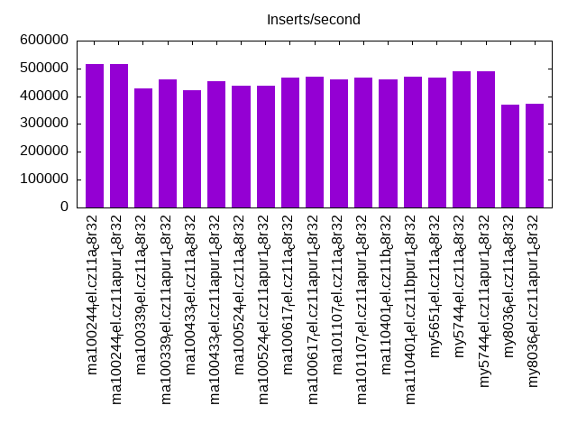
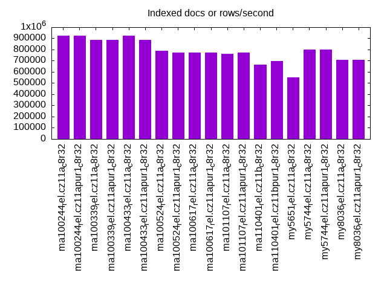
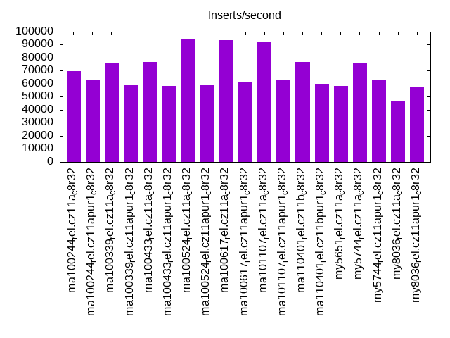
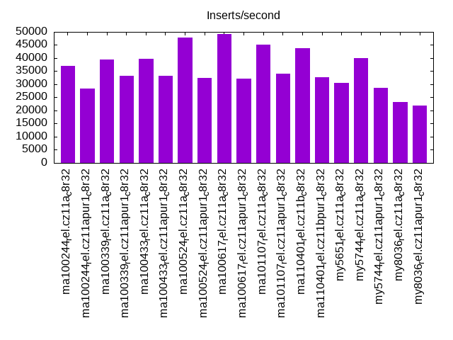
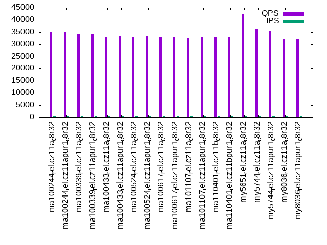
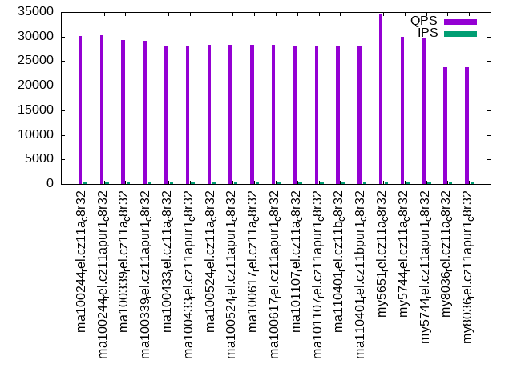
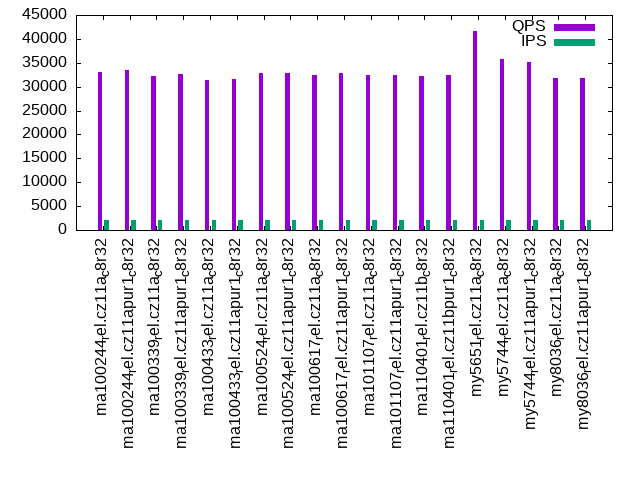
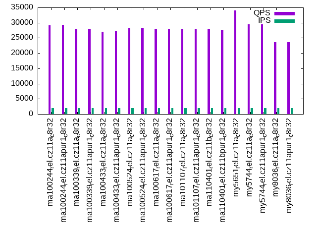
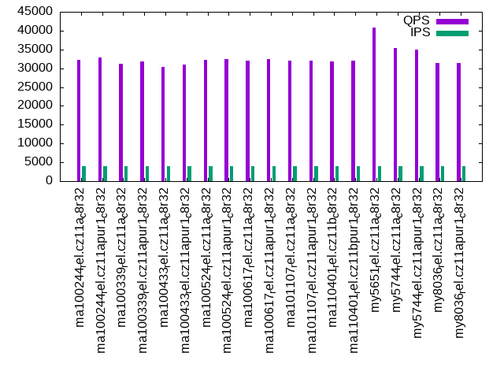
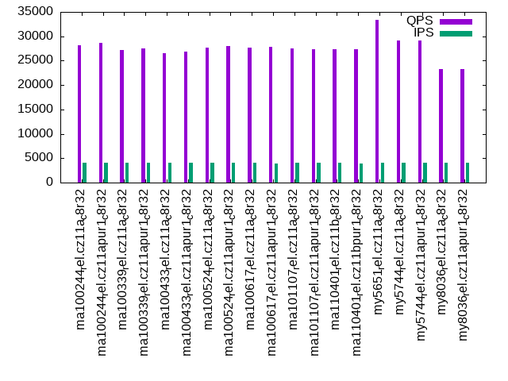

This is a report for the insert benchmark with 48M docs and 4 client(s). It is generated by scripts (bash, awk, sed) and Tufte might not be impressed. An overview of the insert benchmark is here and a short update is here. Below, by DBMS, I mean DBMS+version.config. An example is my8020.c10b40 where my means MySQL, 8020 is version 8.0.20 and c10b40 is the name for the configuration file.
The test server has 8 AMD cores, 32G RAM and an NVMe SSD. It is described here as the ASUS PN53. The benchmark was run with 4 clients and there were 1 or 3 connections per client (1 for queries or inserts without rate limits, 1+1 for rate limited inserts+deletes). It uses 4 tables with a table per client. It loads 12M rows per table without secondary indexes, creates 3 secondary indexes per table, then inserts 40 rows per table with a delete per insert to avoid growing the table. It then does 6 read+write tests for 1800s each that do queries as fast as possible with 100,100,500,500,1000,1000 inserts/s and the same for deletes/s per client concurrent with the queries. The database is cached in memory. Clients and the DBMS share one server. The per-database configs are in the per-database subdirectories here.
The tested DBMS are:
The numbers are inserts/s for l.i0, l.i1 and l.i2, indexed docs (or rows) /s for l.x and queries/s for qr100, qp100 thru qr1000, qp1000" The values are the average rate over the entire test for inserts (IPS) and queries (QPS). The range of values for IPS and QPS is split into 3 parts: bottom 25%, middle 50%, top 25%. Values in the bottom 25% have a red background, values in the top 25% have a green background and values in the middle have no color. A gray background is used for values that can be ignored because the DBMS did not sustain the target insert rate. Red backgrounds are not used when the minimum value is within 80% of the max value.
| dbms | l.i0 | l.x | l.i1 | l.i2 | qr100 | qp100 | qr500 | qp500 | qr1000 | qp1000 |
|---|---|---|---|---|---|---|---|---|---|---|
| ma100244_rel.cz11a_c8r32 | 516129 | 923079 | 69717 | 36994 | 34905 | 30160 | 33111 | 29078 | 32160 | 28177 |
| ma100244_rel.cz11apur1_c8r32 | 516129 | 923079 | 63272 | 28318 | 35182 | 30315 | 33522 | 29242 | 32762 | 28626 |
| ma100339_rel.cz11a_c8r32 | 428571 | 888891 | 76010 | 39555 | 34250 | 29240 | 32245 | 27890 | 31190 | 27168 |
| ma100339_rel.cz11apur1_c8r32 | 461538 | 888891 | 58770 | 33195 | 34085 | 29098 | 32559 | 27932 | 31813 | 27463 |
| ma100433_rel.cz11a_c8r32 | 421053 | 923079 | 76831 | 39653 | 32956 | 28177 | 31303 | 27098 | 30358 | 26492 |
| ma100433_rel.cz11apur1_c8r32 | 452830 | 888891 | 58608 | 33195 | 33318 | 28215 | 31687 | 27243 | 30919 | 26799 |
| ma100524_rel.cz11a_c8r32 | 436364 | 786887 | 93910 | 47761 | 33134 | 28405 | 32789 | 28085 | 32315 | 27638 |
| ma100524_rel.cz11apur1_c8r32 | 436364 | 774195 | 59095 | 32553 | 33180 | 28390 | 32803 | 28117 | 32448 | 28001 |
| ma100617_rel.cz11a_c8r32 | 466019 | 774195 | 93704 | 49155 | 32866 | 28288 | 32364 | 27994 | 32060 | 27681 |
| ma100617_rel.cz11apur1_c8r32 | 470588 | 774195 | 61391 | 32258 | 33143 | 28264 | 32893 | 28038 | 32471 | 27770 |
| ma101107_rel.cz11a_c8r32 | 461538 | 761906 | 92219 | 45134 | 32657 | 28016 | 32449 | 27863 | 31928 | 27489 |
| ma101107_rel.cz11apur1_c8r32 | 466019 | 774195 | 62530 | 34115 | 32921 | 28142 | 32371 | 27836 | 31977 | 27367 |
| ma110401_rel.cz11b_c8r32 | 461538 | 666668 | 76509 | 43716 | 32780 | 28093 | 32263 | 27772 | 31845 | 27413 |
| ma110401_rel.cz11bpur1_c8r32 | 470588 | 695654 | 59452 | 32620 | 32774 | 27960 | 32452 | 27740 | 31931 | 27384 |
| my5651_rel.cz11a_c8r32 | 466019 | 551725 | 58129 | 30476 | 42430 | 34548 | 41547 | 34026 | 40904 | 33386 |
| my5744_rel.cz11a_c8r32 | 489796 | 800002 | 75740 | 39950 | 36122 | 29933 | 35848 | 29545 | 35272 | 29187 |
| my5744_rel.cz11apur1_c8r32 | 489796 | 800002 | 62807 | 28725 | 35454 | 29786 | 35200 | 29479 | 34911 | 29085 |
| my8036_rel.cz11a_c8r32 | 369231 | 705884 | 46394 | 23375 | 32064 | 23808 | 31779 | 23541 | 31420 | 23295 |
| my8036_rel.cz11apur1_c8r32 | 372093 | 705884 | 57296 | 21813 | 31955 | 23736 | 31840 | 23571 | 31321 | 23278 |
This table has relative throughput, throughput for the DBMS relative to the DBMS in the first line, using the absolute throughput from the previous table. Values less than 0.95 have a yellow background. Values greater than 1.05 have a blue background.
| dbms | l.i0 | l.x | l.i1 | l.i2 | qr100 | qp100 | qr500 | qp500 | qr1000 | qp1000 |
|---|---|---|---|---|---|---|---|---|---|---|
| ma100244_rel.cz11a_c8r32 | 1.00 | 1.00 | 1.00 | 1.00 | 1.00 | 1.00 | 1.00 | 1.00 | 1.00 | 1.00 |
| ma100244_rel.cz11apur1_c8r32 | 1.00 | 1.00 | 0.91 | 0.77 | 1.01 | 1.01 | 1.01 | 1.01 | 1.02 | 1.02 |
| ma100339_rel.cz11a_c8r32 | 0.83 | 0.96 | 1.09 | 1.07 | 0.98 | 0.97 | 0.97 | 0.96 | 0.97 | 0.96 |
| ma100339_rel.cz11apur1_c8r32 | 0.89 | 0.96 | 0.84 | 0.90 | 0.98 | 0.96 | 0.98 | 0.96 | 0.99 | 0.97 |
| ma100433_rel.cz11a_c8r32 | 0.82 | 1.00 | 1.10 | 1.07 | 0.94 | 0.93 | 0.95 | 0.93 | 0.94 | 0.94 |
| ma100433_rel.cz11apur1_c8r32 | 0.88 | 0.96 | 0.84 | 0.90 | 0.95 | 0.94 | 0.96 | 0.94 | 0.96 | 0.95 |
| ma100524_rel.cz11a_c8r32 | 0.85 | 0.85 | 1.35 | 1.29 | 0.95 | 0.94 | 0.99 | 0.97 | 1.00 | 0.98 |
| ma100524_rel.cz11apur1_c8r32 | 0.85 | 0.84 | 0.85 | 0.88 | 0.95 | 0.94 | 0.99 | 0.97 | 1.01 | 0.99 |
| ma100617_rel.cz11a_c8r32 | 0.90 | 0.84 | 1.34 | 1.33 | 0.94 | 0.94 | 0.98 | 0.96 | 1.00 | 0.98 |
| ma100617_rel.cz11apur1_c8r32 | 0.91 | 0.84 | 0.88 | 0.87 | 0.95 | 0.94 | 0.99 | 0.96 | 1.01 | 0.99 |
| ma101107_rel.cz11a_c8r32 | 0.89 | 0.83 | 1.32 | 1.22 | 0.94 | 0.93 | 0.98 | 0.96 | 0.99 | 0.98 |
| ma101107_rel.cz11apur1_c8r32 | 0.90 | 0.84 | 0.90 | 0.92 | 0.94 | 0.93 | 0.98 | 0.96 | 0.99 | 0.97 |
| ma110401_rel.cz11b_c8r32 | 0.89 | 0.72 | 1.10 | 1.18 | 0.94 | 0.93 | 0.97 | 0.96 | 0.99 | 0.97 |
| ma110401_rel.cz11bpur1_c8r32 | 0.91 | 0.75 | 0.85 | 0.88 | 0.94 | 0.93 | 0.98 | 0.95 | 0.99 | 0.97 |
| my5651_rel.cz11a_c8r32 | 0.90 | 0.60 | 0.83 | 0.82 | 1.22 | 1.15 | 1.25 | 1.17 | 1.27 | 1.18 |
| my5744_rel.cz11a_c8r32 | 0.95 | 0.87 | 1.09 | 1.08 | 1.03 | 0.99 | 1.08 | 1.02 | 1.10 | 1.04 |
| my5744_rel.cz11apur1_c8r32 | 0.95 | 0.87 | 0.90 | 0.78 | 1.02 | 0.99 | 1.06 | 1.01 | 1.09 | 1.03 |
| my8036_rel.cz11a_c8r32 | 0.72 | 0.76 | 0.67 | 0.63 | 0.92 | 0.79 | 0.96 | 0.81 | 0.98 | 0.83 |
| my8036_rel.cz11apur1_c8r32 | 0.72 | 0.76 | 0.82 | 0.59 | 0.92 | 0.79 | 0.96 | 0.81 | 0.97 | 0.83 |
This lists the average rate of inserts/s for the tests that do inserts concurrent with queries. For such tests the query rate is listed in the table above. The read+write tests are setup so that the insert rate should match the target rate every second. Cells that are not at least 95% of the target have a red background to indicate a failure to satisfy the target.
| dbms | qr100.L1 | qp100.L2 | qr500.L3 | qp500.L4 | qr1000.L5 | qp1000.L6 |
|---|---|---|---|---|---|---|
| ma100244_rel.cz11a_c8r32 | 399 | 399 | 1994 | 1994 | 3989 | 3989 |
| ma100244_rel.cz11apur1_c8r32 | 399 | 399 | 1994 | 1994 | 3989 | 3989 |
| ma100339_rel.cz11a_c8r32 | 399 | 399 | 1994 | 1993 | 3989 | 3989 |
| ma100339_rel.cz11apur1_c8r32 | 399 | 399 | 1994 | 1994 | 3987 | 3989 |
| ma100433_rel.cz11a_c8r32 | 399 | 399 | 1994 | 1994 | 3989 | 3989 |
| ma100433_rel.cz11apur1_c8r32 | 399 | 399 | 1994 | 1993 | 3989 | 3989 |
| ma100524_rel.cz11a_c8r32 | 399 | 399 | 1994 | 1994 | 3989 | 3989 |
| ma100524_rel.cz11apur1_c8r32 | 399 | 399 | 1994 | 1994 | 3989 | 3989 |
| ma100617_rel.cz11a_c8r32 | 399 | 399 | 1994 | 1993 | 3989 | 3989 |
| ma100617_rel.cz11apur1_c8r32 | 399 | 399 | 1994 | 1994 | 3987 | 3987 |
| ma101107_rel.cz11a_c8r32 | 399 | 399 | 1994 | 1994 | 3989 | 3989 |
| ma101107_rel.cz11apur1_c8r32 | 399 | 399 | 1993 | 1994 | 3989 | 3989 |
| ma110401_rel.cz11b_c8r32 | 399 | 399 | 1994 | 1994 | 3989 | 3989 |
| ma110401_rel.cz11bpur1_c8r32 | 399 | 399 | 1994 | 1994 | 3987 | 3987 |
| my5651_rel.cz11a_c8r32 | 399 | 399 | 1994 | 1994 | 3989 | 3989 |
| my5744_rel.cz11a_c8r32 | 399 | 399 | 1994 | 1994 | 3989 | 3989 |
| my5744_rel.cz11apur1_c8r32 | 399 | 399 | 1994 | 1994 | 3987 | 3989 |
| my8036_rel.cz11a_c8r32 | 399 | 399 | 1994 | 1994 | 3989 | 3989 |
| my8036_rel.cz11apur1_c8r32 | 399 | 399 | 1993 | 1994 | 3989 | 3989 |
| target | 400 | 400 | 2000 | 2000 | 4000 | 4000 |
l.i0: load without secondary indexes. Graphs for performance per 1-second interval are here.
Average throughput:
Insert response time histogram: each cell has the percentage of responses that take <= the time in the header and max is the max response time in seconds. For the max column values in the top 25% of the range have a red background and in the bottom 25% of the range have a green background. The red background is not used when the min value is within 80% of the max value.
| dbms | 256us | 1ms | 4ms | 16ms | 64ms | 256ms | 1s | 4s | 16s | gt | max |
|---|---|---|---|---|---|---|---|---|---|---|---|
| ma100244_rel.cz11a_c8r32 | 97.433 | 2.227 | 0.316 | 0.008 | 0.016 | 0.127 | |||||
| ma100244_rel.cz11apur1_c8r32 | 97.470 | 2.196 | 0.307 | 0.011 | 0.016 | 0.153 | |||||
| ma100339_rel.cz11a_c8r32 | 86.240 | 13.360 | 0.371 | 0.012 | 0.016 | 0.136 | |||||
| ma100339_rel.cz11apur1_c8r32 | 94.629 | 5.017 | 0.321 | 0.017 | 0.016 | 0.136 | |||||
| ma100433_rel.cz11a_c8r32 | 86.226 | 13.386 | 0.361 | 0.011 | 0.016 | 0.129 | |||||
| ma100433_rel.cz11apur1_c8r32 | 95.271 | 4.370 | 0.328 | 0.014 | 0.016 | 0.131 | |||||
| ma100524_rel.cz11a_c8r32 | 94.533 | 4.818 | 0.502 | 0.125 | 0.022 | 0.176 | |||||
| ma100524_rel.cz11apur1_c8r32 | 91.725 | 7.660 | 0.484 | 0.100 | 0.031 | 0.126 | |||||
| ma100617_rel.cz11a_c8r32 | 92.352 | 7.293 | 0.320 | 0.019 | 0.017 | 0.184 | |||||
| ma100617_rel.cz11apur1_c8r32 | 92.357 | 7.297 | 0.311 | 0.017 | 0.018 | 0.181 | |||||
| ma101107_rel.cz11a_c8r32 | 90.347 | 9.297 | 0.321 | 0.018 | 0.017 | 0.203 | |||||
| ma101107_rel.cz11apur1_c8r32 | 89.152 | 10.508 | 0.305 | 0.018 | 0.017 | 0.182 | |||||
| ma110401_rel.cz11b_c8r32 | 90.299 | 9.361 | 0.305 | 0.018 | 0.018 | 0.196 | |||||
| ma110401_rel.cz11bpur1_c8r32 | 89.670 | 9.994 | 0.308 | 0.012 | 0.017 | 0.229 | |||||
| my5651_rel.cz11a_c8r32 | 96.565 | 3.342 | 0.021 | 0.066 | 0.006 | 0.162 | |||||
| my5744_rel.cz11a_c8r32 | 97.747 | 1.918 | 0.279 | 0.050 | 0.006 | 0.159 | |||||
| my5744_rel.cz11apur1_c8r32 | 97.703 | 1.965 | 0.273 | 0.053 | 0.006 | 0.167 | |||||
| my8036_rel.cz11a_c8r32 | 97.057 | 2.472 | 0.372 | 0.091 | 0.007 | 0.146 | |||||
| my8036_rel.cz11apur1_c8r32 | 97.095 | 2.449 | 0.361 | 0.086 | 0.010 | 0.144 |
Performance metrics for the DBMS listed above. Some are normalized by throughput, others are not. Legend for results is here.
ips qps rps rmbps wps wmbps rpq rkbpq wpi wkbpi csps cpups cspq cpupq dbgb1 dbgb2 rss maxop p50 p99 tag 516129 0 1 0.0 2542.1 164.2 0.000 0.000 0.005 0.326 49301 71.3 0.096 11 3.2 34.0 4.1 0.127 151537 130760 ma100244_rel.cz11a_c8r32 516129 0 1 0.0 2419.2 161.0 0.000 0.000 0.005 0.319 49142 71.1 0.095 11 3.2 34.0 4.1 0.153 150889 127264 ma100244_rel.cz11apur1_c8r32 428571 0 1 0.0 2288.0 148.0 0.000 0.000 0.005 0.354 56300 76.2 0.131 14 3.2 34.0 3.5 0.136 119867 87769 ma100339_rel.cz11a_c8r32 461538 0 1 0.0 2431.2 157.4 0.000 0.000 0.005 0.349 38966 77.2 0.084 13 3.2 34.0 3.7 0.136 131660 108114 ma100339_rel.cz11apur1_c8r32 421053 0 1 0.0 2208.7 145.0 0.000 0.000 0.005 0.353 56505 76.5 0.134 15 3.2 34.0 NA 0.129 119273 100393 ma100433_rel.cz11a_c8r32 452830 0 1 0.0 2432.8 156.4 0.000 0.000 0.005 0.354 37185 72.8 0.082 13 3.2 34.0 NA 0.131 130996 109683 ma100433_rel.cz11apur1_c8r32 436364 0 0 0.0 3033.6 129.9 0.000 0.000 0.007 0.305 95101 71.0 0.218 13 3.2 34.0 3.4 0.176 124265 105585 ma100524_rel.cz11a_c8r32 436364 0 0 0.0 3059.0 130.3 0.000 0.000 0.007 0.306 50283 68.6 0.115 13 3.2 34.0 3.4 0.126 124964 101929 ma100524_rel.cz11apur1_c8r32 466019 0 0 0.0 1701.9 111.1 0.000 0.000 0.004 0.244 60824 74.7 0.131 13 3.2 34.0 3.3 0.184 133058 105415 ma100617_rel.cz11a_c8r32 470588 0 0 0.0 1799.3 115.4 0.000 0.000 0.004 0.251 52695 74.4 0.112 13 3.2 34.0 3.5 0.181 135191 108608 ma100617_rel.cz11apur1_c8r32 461538 0 0 0.0 1817.1 116.1 0.000 0.000 0.004 0.258 51490 73.5 0.112 13 3.2 34.0 3.3 0.203 132160 111481 ma101107_rel.cz11a_c8r32 466019 0 0 0.0 1888.0 120.0 0.000 0.000 0.004 0.264 48154 73.5 0.103 13 3.2 34.0 3.5 0.182 133358 109184 ma101107_rel.cz11apur1_c8r32 461538 0 0 0.0 1811.9 115.9 0.000 0.000 0.004 0.257 53668 73.8 0.116 13 3.2 34.0 3.3 0.196 131553 99694 ma110401_rel.cz11b_c8r32 470588 0 0 0.0 1890.0 119.9 0.000 0.000 0.004 0.261 49993 73.8 0.106 13 3.2 34.0 3.5 0.229 132559 100694 ma110401_rel.cz11bpur1_c8r32 466019 0 3805 14.9 1425.2 121.6 0.008 0.033 0.003 0.267 55973 67.7 0.120 12 3.2 33.7 4.3 0.162 130361 109682 my5651_rel.cz11a_c8r32 489796 0 0 0.0 1537.7 128.7 0.000 0.000 0.003 0.269 46624 71.0 0.095 12 3.2 33.7 4.9 0.159 141284 116876 my5744_rel.cz11a_c8r32 489796 0 0 0.0 1531.9 128.3 0.000 0.000 0.003 0.268 46410 70.8 0.095 12 3.2 33.7 4.8 0.167 140458 118371 my5744_rel.cz11apur1_c8r32 369231 0 0 0.0 1497.7 109.3 0.000 0.000 0.004 0.303 39456 64.2 0.107 14 3.2 33.8 5.1 0.146 102691 87330 my8036_rel.cz11a_c8r32 372093 0 0 0.0 1495.7 109.1 0.000 0.000 0.004 0.300 39412 64.1 0.106 14 3.2 33.8 5.1 0.144 103990 75168 my8036_rel.cz11apur1_c8r32
l.x: create secondary indexes.
Average throughput:
Performance metrics for the DBMS listed above. Some are normalized by throughput, others are not. Legend for results is here.
ips qps rps rmbps wps wmbps rpq rkbpq wpi wkbpi csps cpups cspq cpupq dbgb1 dbgb2 rss maxop p50 p99 tag 923079 0 0 0.0 8897.2 746.3 0.000 0.000 0.010 0.828 35642 45.1 0.039 4 7.3 38.1 5.3 0.001 NA NA ma100244_rel.cz11a_c8r32 923079 0 0 0.0 8655.1 739.8 0.000 0.000 0.009 0.821 34651 44.5 0.038 4 7.3 38.1 5.2 0.001 NA NA ma100244_rel.cz11apur1_c8r32 888891 0 0 0.0 8333.0 718.1 0.000 0.000 0.009 0.827 29646 44.9 0.033 4 7.3 38.1 5.1 0.001 NA NA ma100339_rel.cz11a_c8r32 888891 0 0 0.0 8561.6 728.1 0.000 0.000 0.010 0.839 29937 45.1 0.034 4 7.3 38.1 5.1 0.002 NA NA ma100339_rel.cz11apur1_c8r32 923079 0 0 0.0 8319.4 724.0 0.000 0.000 0.009 0.803 30976 45.5 0.034 4 7.2 38.0 NA 0.001 NA NA ma100433_rel.cz11a_c8r32 888891 0 0 0.0 8628.1 731.4 0.000 0.000 0.010 0.843 30646 45.1 0.034 4 7.2 38.0 NA 0.002 NA NA ma100433_rel.cz11apur1_c8r32 786887 0 0 0.0 4376.6 541.2 0.000 0.000 0.006 0.704 818 44.4 0.001 5 7.2 38.0 7.5 0.002 NA NA ma100524_rel.cz11a_c8r32 774195 0 0 0.0 4353.6 538.2 0.000 0.000 0.006 0.712 883 44.3 0.001 5 7.2 38.0 7.5 0.001 NA NA ma100524_rel.cz11apur1_c8r32 774195 0 0 0.0 6954.9 578.9 0.000 0.000 0.009 0.766 12407 45.3 0.016 5 7.2 38.0 7.1 0.001 NA NA ma100617_rel.cz11a_c8r32 774195 0 0 0.0 6980.5 581.3 0.000 0.000 0.009 0.769 12515 44.9 0.016 5 7.2 38.0 7.3 0.001 NA NA ma100617_rel.cz11apur1_c8r32 761906 0 0 0.0 6675.2 568.1 0.000 0.000 0.009 0.763 11343 45.2 0.015 5 7.2 38.0 6.9 0.001 NA NA ma101107_rel.cz11a_c8r32 774195 0 0 0.0 6633.6 568.1 0.000 0.000 0.009 0.751 11080 45.1 0.014 5 7.2 38.0 7.1 0.001 NA NA ma101107_rel.cz11apur1_c8r32 666668 0 0 0.0 6068.1 498.4 0.000 0.000 0.009 0.765 11238 42.3 0.017 5 7.2 38.0 6.2 2.582 NA NA ma110401_rel.cz11b_c8r32 695654 0 0 0.0 6391.3 533.4 0.000 0.000 0.009 0.785 11455 44.4 0.016 5 7.2 38.0 6.6 1.843 NA NA ma110401_rel.cz11bpur1_c8r32 551725 0 55 0.2 8061.6 548.5 0.000 0.000 0.015 1.018 13919 40.5 0.025 6 6.7 37.2 6.8 0.001 NA NA my5651_rel.cz11a_c8r32 800002 0 0 0.0 14094.1 731.7 0.000 0.000 0.018 0.937 51669 44.0 0.065 4 7.3 37.8 8.8 0.002 NA NA my5744_rel.cz11a_c8r32 800002 0 0 0.0 14165.1 733.1 0.000 0.000 0.018 0.938 51596 43.3 0.064 4 7.3 37.8 8.8 0.002 NA NA my5744_rel.cz11apur1_c8r32 705884 0 3782 236.6 11907.1 730.1 0.005 0.343 0.017 1.059 34102 89.8 0.048 10 7.3 37.9 7.6 0.004 NA NA my8036_rel.cz11a_c8r32 705884 0 3774 236.1 12784.3 744.9 0.005 0.342 0.018 1.081 35942 89.6 0.051 10 7.3 37.9 7.7 0.004 NA NA my8036_rel.cz11apur1_c8r32
l.i1: continue load after secondary indexes created with 50 inserts per transaction. Graphs for performance per 1-second interval are here.
Average throughput:
Insert response time histogram: each cell has the percentage of responses that take <= the time in the header and max is the max response time in seconds. For the max column values in the top 25% of the range have a red background and in the bottom 25% of the range have a green background. The red background is not used when the min value is within 80% of the max value.
| dbms | 256us | 1ms | 4ms | 16ms | 64ms | 256ms | 1s | 4s | 16s | gt | max |
|---|---|---|---|---|---|---|---|---|---|---|---|
| ma100244_rel.cz11a_c8r32 | 0.032 | 84.507 | 14.926 | 0.523 | 0.012 | 0.177 | |||||
| ma100244_rel.cz11apur1_c8r32 | 0.096 | 89.937 | 9.509 | 0.131 | 0.177 | 0.151 | 0.276 | ||||
| ma100339_rel.cz11a_c8r32 | 0.068 | 87.488 | 11.964 | 0.468 | 0.013 | 0.150 | |||||
| ma100339_rel.cz11apur1_c8r32 | 0.558 | 91.447 | 7.365 | 0.091 | 0.269 | 0.270 | 0.339 | ||||
| ma100433_rel.cz11a_c8r32 | 0.042 | 87.489 | 12.020 | 0.436 | 0.013 | 0.159 | |||||
| ma100433_rel.cz11apur1_c8r32 | 0.360 | 91.769 | 7.236 | 0.087 | 0.232 | 0.317 | 0.274 | ||||
| ma100524_rel.cz11a_c8r32 | 0.096 | 96.297 | 3.517 | 0.061 | 0.017 | 0.011 | nonzero | 1.036 | |||
| ma100524_rel.cz11apur1_c8r32 | 1.888 | 96.085 | 1.272 | 0.052 | 0.377 | 0.327 | nonzero | 1.037 | |||
| ma100617_rel.cz11a_c8r32 | 0.739 | 95.450 | 3.686 | 0.108 | 0.016 | nonzero | 0.420 | ||||
| ma100617_rel.cz11apur1_c8r32 | 6.274 | 91.505 | 1.494 | 0.066 | 0.087 | 0.574 | 0.361 | ||||
| ma101107_rel.cz11a_c8r32 | 0.622 | 94.637 | 4.629 | 0.096 | 0.015 | nonzero | 0.266 | ||||
| ma101107_rel.cz11apur1_c8r32 | 6.033 | 91.772 | 1.527 | 0.057 | 0.057 | 0.554 | 0.323 | ||||
| ma110401_rel.cz11b_c8r32 | 3.075 | 87.926 | 7.640 | 1.328 | 0.029 | 0.002 | 0.714 | ||||
| ma110401_rel.cz11bpur1_c8r32 | 14.169 | 82.965 | 1.953 | 0.252 | 0.077 | 0.584 | 0.390 | ||||
| my5651_rel.cz11a_c8r32 | 0.029 | 81.084 | 18.177 | 0.699 | 0.010 | 0.099 | |||||
| my5744_rel.cz11a_c8r32 | 0.002 | 87.751 | 12.122 | 0.120 | 0.006 | 0.169 | |||||
| my5744_rel.cz11apur1_c8r32 | 0.009 | 96.160 | 3.287 | 0.048 | 0.139 | 0.358 | 0.276 | ||||
| my8036_rel.cz11a_c8r32 | 90.062 | 7.846 | 0.200 | 1.891 | 0.217 | ||||||
| my8036_rel.cz11apur1_c8r32 | 95.412 | 2.933 | 0.134 | 1.520 | 0.141 |
Delete response time histogram: each cell has the percentage of responses that take <= the time in the header and max is the max response time in seconds. For the max column values in the top 25% of the range have a red background and in the bottom 25% of the range have a green background. The red background is not used when the min value is within 80% of the max value.
| dbms | 256us | 1ms | 4ms | 16ms | 64ms | 256ms | 1s | 4s | 16s | gt | max |
|---|---|---|---|---|---|---|---|---|---|---|---|
| ma100244_rel.cz11a_c8r32 | 7.247 | 78.098 | 14.233 | 0.410 | 0.012 | 0.159 | |||||
| ma100244_rel.cz11apur1_c8r32 | 4.374 | 85.650 | 9.527 | 0.122 | 0.192 | 0.136 | 0.267 | ||||
| ma100339_rel.cz11a_c8r32 | 21.120 | 67.045 | 11.485 | 0.338 | 0.011 | 0.144 | |||||
| ma100339_rel.cz11apur1_c8r32 | 16.743 | 75.292 | 7.339 | 0.086 | 0.320 | 0.220 | 0.271 | ||||
| ma100433_rel.cz11a_c8r32 | 20.700 | 67.406 | 11.559 | 0.323 | 0.012 | 0.153 | |||||
| ma100433_rel.cz11apur1_c8r32 | 17.109 | 75.067 | 7.191 | 0.084 | 0.291 | 0.259 | 0.274 | ||||
| ma100524_rel.cz11a_c8r32 | 20.726 | 76.520 | 2.682 | 0.046 | 0.019 | 0.007 | nonzero | 1.036 | |||
| ma100524_rel.cz11apur1_c8r32 | 28.163 | 69.870 | 1.220 | 0.043 | 0.552 | 0.152 | 0.424 | ||||
| ma100617_rel.cz11a_c8r32 | 17.661 | 79.410 | 2.828 | 0.088 | 0.013 | nonzero | 0.422 | ||||
| ma100617_rel.cz11apur1_c8r32 | 39.149 | 58.708 | 1.425 | 0.058 | 0.114 | 0.546 | 0.294 | ||||
| ma101107_rel.cz11a_c8r32 | 16.692 | 79.130 | 4.083 | 0.081 | 0.013 | 0.208 | |||||
| ma101107_rel.cz11apur1_c8r32 | 34.696 | 63.206 | 1.440 | 0.048 | 0.068 | 0.542 | 0.322 | ||||
| ma110401_rel.cz11b_c8r32 | 22.684 | 69.498 | 6.697 | 1.095 | 0.025 | 0.001 | 0.681 | ||||
| ma110401_rel.cz11bpur1_c8r32 | 42.335 | 54.953 | 1.827 | 0.226 | 0.087 | 0.572 | 0.372 | ||||
| my5651_rel.cz11a_c8r32 | 2.143 | 84.284 | 13.006 | 0.559 | 0.008 | 0.103 | |||||
| my5744_rel.cz11a_c8r32 | 3.227 | 84.999 | 11.676 | 0.092 | 0.005 | 0.168 | |||||
| my5744_rel.cz11apur1_c8r32 | 4.975 | 91.111 | 3.376 | 0.041 | 0.233 | 0.264 | 0.275 | ||||
| my8036_rel.cz11a_c8r32 | 8.039 | 82.425 | 7.593 | 0.149 | 1.794 | 0.217 | |||||
| my8036_rel.cz11apur1_c8r32 | 14.134 | 81.348 | 2.928 | 0.108 | 1.483 | 0.140 |
Performance metrics for the DBMS listed above. Some are normalized by throughput, others are not. Legend for results is here.
ips qps rps rmbps wps wmbps rpq rkbpq wpi wkbpi csps cpups cspq cpupq dbgb1 dbgb2 rss maxop p50 p99 tag 69717 0 0 0.0 8545.6 310.5 0.000 0.000 0.123 4.561 41904 80.8 0.601 93 10.7 41.5 11.9 0.177 17381 10039 ma100244_rel.cz11a_c8r32 63272 0 0 0.0 11376.7 352.0 0.000 0.000 0.180 5.697 49140 62.0 0.777 78 14.3 47.0 16.9 0.276 19436 150 ma100244_rel.cz11apur1_c8r32 76010 0 0 0.0 7992.9 301.6 0.000 0.000 0.105 4.064 43609 80.1 0.574 84 10.9 41.8 12.2 0.150 19129 8890 ma100339_rel.cz11a_c8r32 58770 0 0 0.0 9314.6 294.0 0.000 0.000 0.158 5.123 43311 53.5 0.737 73 12.8 44.9 14.7 0.339 19979 150 ma100339_rel.cz11apur1_c8r32 76831 0 0 0.0 8137.7 303.4 0.000 0.000 0.106 4.044 44861 80.3 0.584 84 11.0 41.9 NA 0.159 19080 10953 ma100433_rel.cz11a_c8r32 58608 0 0 0.0 9654.0 303.0 0.000 0.000 0.165 5.293 44675 53.3 0.762 73 12.8 44.9 NA 0.274 20029 150 ma100433_rel.cz11apur1_c8r32 93910 0 0 0.0 7899.0 286.4 0.000 0.000 0.084 3.123 71667 88.5 0.763 75 10.8 43.1 12.2 1.036 24474 1398 ma100524_rel.cz11a_c8r32 59095 0 0 0.0 8997.9 264.2 0.000 0.000 0.152 4.578 60471 50.0 1.023 68 12.8 45.0 14.0 1.037 9490 150 ma100524_rel.cz11apur1_c8r32 93704 0 0 0.0 9676.9 338.4 0.000 0.000 0.103 3.699 132762 85.2 1.417 73 10.0 40.9 10.2 0.420 24067 11837 ma100617_rel.cz11a_c8r32 61391 0 0 0.0 5016.3 154.7 0.000 0.000 0.082 2.580 51880 48.4 0.845 63 12.9 45.0 14.2 0.361 12936 150 ma100617_rel.cz11apur1_c8r32 92219 0 3797 14.8 9695.1 339.7 0.041 0.165 0.105 3.772 123979 83.2 1.344 72 10.0 40.8 10.1 0.266 23725 12041 ma101107_rel.cz11a_c8r32 62530 0 1502 5.9 5446.6 168.8 0.024 0.096 0.087 2.764 53375 49.0 0.854 63 12.8 45.0 14.2 0.323 18138 150 ma101107_rel.cz11apur1_c8r32 76509 0 2911 11.4 8556.0 289.4 0.038 0.152 0.112 3.874 109946 67.3 1.437 70 10.1 41.0 10.1 0.714 19829 7842 ma110401_rel.cz11b_c8r32 59452 0 1471 5.7 5380.3 160.8 0.025 0.099 0.090 2.770 52506 46.2 0.883 62 12.9 45.0 14.2 0.390 14485 150 ma110401_rel.cz11bpur1_c8r32 58129 0 1645 6.4 4451.0 182.4 0.028 0.113 0.077 3.214 51487 70.6 0.886 97 10.7 41.2 12.3 0.099 14884 9440 my5651_rel.cz11a_c8r32 75740 0 0 0.0 5643.9 231.9 0.000 0.000 0.075 3.135 35992 84.7 0.475 89 10.9 41.4 13.0 0.169 19229 14141 my5744_rel.cz11a_c8r32 62807 0 0 0.0 4239.4 154.2 0.000 0.000 0.067 2.515 29704 57.5 0.473 73 14.4 46.4 17.7 0.276 22575 150 my5744_rel.cz11apur1_c8r32 46394 0 84 1.3 5139.4 193.7 0.002 0.029 0.111 4.276 30534 50.3 0.658 87 9.8 40.4 12.0 0.217 11537 6443 my8036_rel.cz11a_c8r32 57296 0 104 1.6 4548.7 154.1 0.002 0.029 0.079 2.754 29265 52.8 0.511 74 13.0 44.9 15.9 0.141 14284 7492 my8036_rel.cz11apur1_c8r32
l.i2: continue load after secondary indexes created with 5 inserts per transaction. Graphs for performance per 1-second interval are here.
Average throughput:
Insert response time histogram: each cell has the percentage of responses that take <= the time in the header and max is the max response time in seconds. For the max column values in the top 25% of the range have a red background and in the bottom 25% of the range have a green background. The red background is not used when the min value is within 80% of the max value.
| dbms | 256us | 1ms | 4ms | 16ms | 64ms | 256ms | 1s | 4s | 16s | gt | max |
|---|---|---|---|---|---|---|---|---|---|---|---|
| ma100244_rel.cz11a_c8r32 | 23.158 | 72.144 | 3.523 | 1.170 | 0.003 | 0.002 | 0.135 | ||||
| ma100244_rel.cz11apur1_c8r32 | 24.688 | 71.926 | 1.088 | 1.586 | 0.709 | 0.002 | 0.145 | ||||
| ma100339_rel.cz11a_c8r32 | 26.328 | 69.413 | 3.358 | 0.895 | 0.005 | 0.002 | 0.139 | ||||
| ma100339_rel.cz11apur1_c8r32 | 27.459 | 69.692 | 1.071 | 1.349 | 0.426 | 0.002 | 0.153 | ||||
| ma100433_rel.cz11a_c8r32 | 25.457 | 70.415 | 3.263 | 0.861 | 0.003 | 0.002 | 0.134 | ||||
| ma100433_rel.cz11apur1_c8r32 | 26.570 | 70.582 | 1.069 | 1.345 | 0.433 | 0.002 | 0.151 | ||||
| ma100524_rel.cz11a_c8r32 | 25.209 | 72.854 | 1.849 | 0.085 | 0.002 | 0.002 | 0.144 | ||||
| ma100524_rel.cz11apur1_c8r32 | 26.776 | 71.145 | 1.151 | 0.144 | 0.782 | 0.002 | 0.146 | ||||
| ma100617_rel.cz11a_c8r32 | 31.943 | 64.924 | 3.011 | 0.119 | 0.002 | 0.002 | 0.138 | ||||
| ma100617_rel.cz11apur1_c8r32 | 26.809 | 71.327 | 0.917 | 0.125 | 0.819 | 0.003 | 0.181 | ||||
| ma101107_rel.cz11a_c8r32 | 17.259 | 79.386 | 3.254 | 0.098 | 0.001 | 0.002 | 0.139 | ||||
| ma101107_rel.cz11apur1_c8r32 | 11.980 | 86.305 | 1.031 | 0.184 | 0.497 | 0.003 | 0.146 | ||||
| ma110401_rel.cz11b_c8r32 | 21.896 | 74.945 | 2.801 | 0.326 | 0.030 | 0.002 | 0.143 | ||||
| ma110401_rel.cz11bpur1_c8r32 | 17.777 | 80.342 | 0.913 | 0.347 | 0.618 | 0.003 | 0.142 | ||||
| my5651_rel.cz11a_c8r32 | 8.936 | 79.310 | 11.044 | 0.662 | 0.046 | 0.001 | 0.095 | ||||
| my5744_rel.cz11a_c8r32 | 20.541 | 75.139 | 3.514 | 0.804 | 0.003 | nonzero | 0.068 | ||||
| my5744_rel.cz11apur1_c8r32 | 20.334 | 77.406 | 0.748 | 0.683 | 0.828 | 0.001 | 0.163 | ||||
| my8036_rel.cz11a_c8r32 | 0.611 | 96.080 | 2.476 | 0.487 | 0.003 | 0.344 | 0.127 | ||||
| my8036_rel.cz11apur1_c8r32 | 0.692 | 93.547 | 3.684 | 1.784 | 0.007 | 0.286 | 0.130 |
Delete response time histogram: each cell has the percentage of responses that take <= the time in the header and max is the max response time in seconds. For the max column values in the top 25% of the range have a red background and in the bottom 25% of the range have a green background. The red background is not used when the min value is within 80% of the max value.
| dbms | 256us | 1ms | 4ms | 16ms | 64ms | 256ms | 1s | 4s | 16s | gt | max |
|---|---|---|---|---|---|---|---|---|---|---|---|
| ma100244_rel.cz11a_c8r32 | 24.374 | 71.122 | 3.339 | 1.160 | 0.003 | 0.002 | 0.135 | ||||
| ma100244_rel.cz11apur1_c8r32 | 25.959 | 70.679 | 1.072 | 1.579 | 0.709 | 0.002 | 0.144 | ||||
| ma100339_rel.cz11a_c8r32 | 28.297 | 67.431 | 3.376 | 0.890 | 0.004 | 0.002 | 0.141 | ||||
| ma100339_rel.cz11apur1_c8r32 | 28.888 | 68.212 | 1.129 | 1.343 | 0.426 | 0.002 | 0.159 | ||||
| ma100433_rel.cz11a_c8r32 | 27.613 | 68.268 | 3.259 | 0.855 | 0.003 | 0.002 | 0.134 | ||||
| ma100433_rel.cz11apur1_c8r32 | 28.443 | 68.661 | 1.122 | 1.340 | 0.432 | 0.002 | 0.144 | ||||
| ma100524_rel.cz11a_c8r32 | 27.518 | 70.612 | 1.789 | 0.077 | 0.002 | 0.002 | 0.144 | ||||
| ma100524_rel.cz11apur1_c8r32 | 29.178 | 68.781 | 1.125 | 0.133 | 0.782 | 0.002 | 0.146 | ||||
| ma100617_rel.cz11a_c8r32 | 33.983 | 62.663 | 3.230 | 0.122 | 0.002 | 0.002 | 0.139 | ||||
| ma100617_rel.cz11apur1_c8r32 | 29.824 | 68.330 | 0.901 | 0.122 | 0.820 | 0.003 | 0.180 | ||||
| ma101107_rel.cz11a_c8r32 | 22.189 | 74.286 | 3.419 | 0.104 | 0.001 | 0.002 | 0.138 | ||||
| ma101107_rel.cz11apur1_c8r32 | 16.434 | 81.854 | 1.031 | 0.181 | 0.497 | 0.003 | 0.146 | ||||
| ma110401_rel.cz11b_c8r32 | 25.235 | 71.560 | 2.873 | 0.303 | 0.026 | 0.002 | 0.144 | ||||
| ma110401_rel.cz11bpur1_c8r32 | 21.802 | 76.348 | 0.912 | 0.318 | 0.617 | 0.003 | 0.142 | ||||
| my5651_rel.cz11a_c8r32 | 11.800 | 75.971 | 11.524 | 0.658 | 0.045 | 0.001 | 0.094 | ||||
| my5744_rel.cz11a_c8r32 | 21.990 | 73.798 | 3.407 | 0.803 | 0.002 | nonzero | 0.068 | ||||
| my5744_rel.cz11apur1_c8r32 | 21.445 | 76.315 | 0.731 | 0.681 | 0.828 | 0.001 | 0.163 | ||||
| my8036_rel.cz11a_c8r32 | 3.392 | 93.422 | 2.354 | 0.488 | 0.003 | 0.341 | 0.127 | ||||
| my8036_rel.cz11apur1_c8r32 | 1.876 | 92.393 | 3.657 | 1.781 | 0.007 | 0.285 | 0.130 |
Performance metrics for the DBMS listed above. Some are normalized by throughput, others are not. Legend for results is here.
ips qps rps rmbps wps wmbps rpq rkbpq wpi wkbpi csps cpups cspq cpupq dbgb1 dbgb2 rss maxop p50 p99 tag 36994 0 0 0.0 6797.9 226.5 0.000 0.000 0.184 6.271 118806 81.1 3.211 175 10.7 41.5 11.9 0.135 9323 7382 ma100244_rel.cz11a_c8r32 28318 0 0 0.0 10126.4 312.7 0.000 0.000 0.358 11.306 98112 62.5 3.465 177 14.3 47.0 17.1 0.145 9410 180 ma100244_rel.cz11apur1_c8r32 39555 0 0 0.0 5708.9 200.5 0.000 0.000 0.144 5.190 123364 82.3 3.119 166 10.9 41.8 12.2 0.139 9864 8266 ma100339_rel.cz11a_c8r32 33195 0 0 0.0 7941.8 258.1 0.000 0.000 0.239 7.960 103697 67.5 3.124 163 12.8 44.9 15.0 0.153 9812 180 ma100339_rel.cz11apur1_c8r32 39653 0 0 0.0 5628.0 196.9 0.000 0.000 0.142 5.086 125547 82.7 3.166 167 11.0 41.9 NA 0.134 9954 8358 ma100433_rel.cz11a_c8r32 33195 0 0 0.0 7946.5 257.1 0.000 0.000 0.239 7.932 103857 67.3 3.129 162 12.8 44.9 NA 0.151 9874 180 ma100433_rel.cz11apur1_c8r32 47761 0 0 0.0 10476.7 324.4 0.000 0.000 0.219 6.954 182758 89.0 3.827 149 10.8 43.1 12.2 0.144 11952 10374 ma100524_rel.cz11a_c8r32 32553 0 0 0.0 10540.9 311.1 0.000 0.000 0.324 9.786 133146 64.7 4.090 159 12.8 45.0 14.1 0.146 9070 185 ma100524_rel.cz11apur1_c8r32 49155 0 0 0.0 5044.6 177.0 0.000 0.000 0.103 3.687 169250 87.7 3.443 143 10.0 40.9 10.1 0.138 12342 10708 ma100617_rel.cz11a_c8r32 32258 0 0 0.0 3902.7 133.6 0.000 0.000 0.121 4.240 114329 60.2 3.544 149 12.9 45.0 14.2 0.181 12477 155 ma100617_rel.cz11apur1_c8r32 45134 0 5903 23.1 4807.8 168.7 0.131 0.523 0.107 3.828 178328 83.5 3.951 148 10.0 40.8 10.1 0.139 11313 9964 ma101107_rel.cz11a_c8r32 34115 0 4682 18.3 4205.9 144.1 0.137 0.549 0.123 4.325 142515 66.0 4.177 155 12.8 45.0 14.2 0.146 11088 160 ma101107_rel.cz11apur1_c8r32 43716 0 5646 22.1 4743.0 162.1 0.129 0.517 0.108 3.797 175773 80.5 4.021 147 10.1 41.0 10.1 0.143 11183 8259 ma110401_rel.cz11b_c8r32 32620 0 4426 17.3 4138.9 137.4 0.136 0.543 0.127 4.315 136772 62.3 4.193 153 12.9 45.0 14.2 0.142 11007 165 ma110401_rel.cz11bpur1_c8r32 30476 0 4984 19.5 2705.1 104.3 0.164 0.654 0.089 3.505 116735 80.0 3.830 210 10.7 41.2 12.3 0.095 7559 6853 my5651_rel.cz11a_c8r32 39950 0 0 0.0 3408.6 134.2 0.000 0.000 0.085 3.441 122348 82.8 3.063 166 10.9 41.4 13.0 0.068 10052 9440 my5744_rel.cz11a_c8r32 28725 0 0 0.0 3475.8 126.3 0.000 0.000 0.121 4.504 87943 61.6 3.062 172 14.4 46.4 17.9 0.163 10149 185 my5744_rel.cz11apur1_c8r32 23375 0 0 0.0 2846.3 101.4 0.000 0.000 0.122 4.443 79709 50.9 3.410 174 9.8 40.4 12.0 0.127 5806 3536 my8036_rel.cz11a_c8r32 21813 0 0 0.0 3167.2 108.3 0.000 0.000 0.145 5.086 76001 50.6 3.484 186 13.0 44.9 16.1 0.130 5932 909 my8036_rel.cz11apur1_c8r32
qr100.L1: range queries with 100 insert/s per client. Graphs for performance per 1-second interval are here.
Average throughput:
Query response time histogram: each cell has the percentage of responses that take <= the time in the header and max is the max response time in seconds. For max values in the top 25% of the range have a red background and in the bottom 25% of the range have a green background. The red background is not used when the min value is within 80% of the max value.
| dbms | 256us | 1ms | 4ms | 16ms | 64ms | 256ms | 1s | 4s | 16s | gt | max |
|---|---|---|---|---|---|---|---|---|---|---|---|
| ma100244_rel.cz11a_c8r32 | 99.947 | 0.050 | 0.003 | nonzero | nonzero | 0.020 | |||||
| ma100244_rel.cz11apur1_c8r32 | 99.977 | 0.021 | 0.001 | nonzero | nonzero | 0.022 | |||||
| ma100339_rel.cz11a_c8r32 | 99.955 | 0.043 | 0.002 | nonzero | nonzero | 0.025 | |||||
| ma100339_rel.cz11apur1_c8r32 | 99.975 | 0.023 | 0.002 | nonzero | nonzero | 0.021 | |||||
| ma100433_rel.cz11a_c8r32 | 99.941 | 0.056 | 0.003 | nonzero | nonzero | 0.020 | |||||
| ma100433_rel.cz11apur1_c8r32 | 99.970 | 0.029 | 0.001 | nonzero | nonzero | 0.021 | |||||
| ma100524_rel.cz11a_c8r32 | 99.993 | 0.007 | nonzero | 0.003 | |||||||
| ma100524_rel.cz11apur1_c8r32 | 99.992 | 0.007 | nonzero | 0.002 | |||||||
| ma100617_rel.cz11a_c8r32 | 99.993 | 0.007 | nonzero | nonzero | 0.011 | ||||||
| ma100617_rel.cz11apur1_c8r32 | 99.992 | 0.008 | nonzero | nonzero | 0.004 | ||||||
| ma101107_rel.cz11a_c8r32 | 99.990 | 0.009 | 0.001 | nonzero | 0.005 | ||||||
| ma101107_rel.cz11apur1_c8r32 | 99.992 | 0.008 | 0.001 | 0.003 | |||||||
| ma110401_rel.cz11b_c8r32 | 99.991 | 0.008 | 0.001 | nonzero | 0.008 | ||||||
| ma110401_rel.cz11bpur1_c8r32 | 99.992 | 0.007 | 0.001 | 0.002 | |||||||
| my5651_rel.cz11a_c8r32 | 99.964 | 0.025 | 0.004 | 0.008 | nonzero | 0.019 | |||||
| my5744_rel.cz11a_c8r32 | 99.996 | 0.004 | nonzero | nonzero | 0.010 | ||||||
| my5744_rel.cz11apur1_c8r32 | 99.997 | 0.003 | nonzero | nonzero | 0.010 | ||||||
| my8036_rel.cz11a_c8r32 | 99.973 | 0.027 | nonzero | 0.004 | |||||||
| my8036_rel.cz11apur1_c8r32 | 99.970 | 0.030 | nonzero | 0.002 |
Insert response time histogram: each cell has the percentage of responses that take <= the time in the header and max is the max response time in seconds. For max values in the top 25% of the range have a red background and in the bottom 25% of the range have a green background. The red background is not used when the min value is within 80% of the max value.
| dbms | 256us | 1ms | 4ms | 16ms | 64ms | 256ms | 1s | 4s | 16s | gt | max |
|---|---|---|---|---|---|---|---|---|---|---|---|
| ma100244_rel.cz11a_c8r32 | 1.660 | 95.438 | 2.701 | 0.201 | 0.036 | ||||||
| ma100244_rel.cz11apur1_c8r32 | 0.792 | 95.993 | 3.028 | 0.188 | 0.027 | ||||||
| ma100339_rel.cz11a_c8r32 | 1.118 | 95.903 | 2.799 | 0.181 | 0.030 | ||||||
| ma100339_rel.cz11apur1_c8r32 | 1.500 | 95.424 | 2.861 | 0.215 | 0.025 | ||||||
| ma100433_rel.cz11a_c8r32 | 0.674 | 96.160 | 2.965 | 0.201 | 0.036 | ||||||
| ma100433_rel.cz11apur1_c8r32 | 0.889 | 95.938 | 3.021 | 0.153 | 0.027 | ||||||
| ma100524_rel.cz11a_c8r32 | 7.028 | 92.965 | 0.007 | 0.004 | |||||||
| ma100524_rel.cz11apur1_c8r32 | 6.611 | 93.389 | 0.003 | ||||||||
| ma100617_rel.cz11a_c8r32 | 20.465 | 79.521 | 0.014 | 0.007 | |||||||
| ma100617_rel.cz11apur1_c8r32 | 11.889 | 88.104 | 0.007 | 0.005 | |||||||
| ma101107_rel.cz11a_c8r32 | 1.083 | 62.111 | 36.806 | 0.012 | |||||||
| ma101107_rel.cz11apur1_c8r32 | 1.424 | 57.028 | 41.549 | 0.012 | |||||||
| ma110401_rel.cz11b_c8r32 | 2.611 | 55.528 | 41.861 | 0.012 | |||||||
| ma110401_rel.cz11bpur1_c8r32 | 1.146 | 52.660 | 46.194 | 0.012 | |||||||
| my5651_rel.cz11a_c8r32 | 0.069 | 66.750 | 32.743 | 0.438 | 0.028 | ||||||
| my5744_rel.cz11a_c8r32 | 0.125 | 98.104 | 1.757 | 0.014 | 0.019 | ||||||
| my5744_rel.cz11apur1_c8r32 | 0.160 | 99.500 | 0.340 | 0.011 | |||||||
| my8036_rel.cz11a_c8r32 | 99.514 | 0.479 | 0.007 | 0.023 | |||||||
| my8036_rel.cz11apur1_c8r32 | 99.542 | 0.451 | 0.007 | 0.102 |
Delete response time histogram: each cell has the percentage of responses that take <= the time in the header and max is the max response time in seconds. For max values in the top 25% of the range have a red background and in the bottom 25% of the range have a green background. The red background is not used when the min value is within 80% of the max value.
| dbms | 256us | 1ms | 4ms | 16ms | 64ms | 256ms | 1s | 4s | 16s | gt | max |
|---|---|---|---|---|---|---|---|---|---|---|---|
| ma100244_rel.cz11a_c8r32 | 60.639 | 36.722 | 2.562 | 0.076 | 0.031 | ||||||
| ma100244_rel.cz11apur1_c8r32 | 46.118 | 50.958 | 2.792 | 0.132 | 0.036 | ||||||
| ma100339_rel.cz11a_c8r32 | 76.694 | 20.771 | 2.424 | 0.111 | 0.023 | ||||||
| ma100339_rel.cz11apur1_c8r32 | 77.382 | 19.979 | 2.500 | 0.139 | 0.026 | ||||||
| ma100433_rel.cz11a_c8r32 | 74.931 | 22.438 | 2.528 | 0.104 | 0.023 | ||||||
| ma100433_rel.cz11apur1_c8r32 | 82.611 | 14.722 | 2.604 | 0.062 | 0.024 | ||||||
| ma100524_rel.cz11a_c8r32 | 96.069 | 3.931 | 0.004 | ||||||||
| ma100524_rel.cz11apur1_c8r32 | 80.292 | 19.708 | 0.003 | ||||||||
| ma100617_rel.cz11a_c8r32 | 72.722 | 27.271 | 0.007 | 0.008 | |||||||
| ma100617_rel.cz11apur1_c8r32 | 50.847 | 49.146 | 0.007 | 0.005 | |||||||
| ma101107_rel.cz11a_c8r32 | 12.340 | 49.562 | 38.097 | 0.012 | |||||||
| ma101107_rel.cz11apur1_c8r32 | 13.514 | 44.944 | 41.542 | 0.012 | |||||||
| ma110401_rel.cz11b_c8r32 | 12.424 | 45.729 | 41.847 | 0.011 | |||||||
| ma110401_rel.cz11bpur1_c8r32 | 10.632 | 43.188 | 46.181 | 0.011 | |||||||
| my5651_rel.cz11a_c8r32 | 15.604 | 54.104 | 30.056 | 0.236 | 0.023 | ||||||
| my5744_rel.cz11a_c8r32 | 67.812 | 30.764 | 1.389 | 0.035 | 0.021 | ||||||
| my5744_rel.cz11apur1_c8r32 | 66.132 | 33.576 | 0.292 | 0.011 | |||||||
| my8036_rel.cz11a_c8r32 | 41.924 | 57.667 | 0.403 | 0.007 | 0.022 | ||||||
| my8036_rel.cz11apur1_c8r32 | 48.785 | 50.847 | 0.354 | 0.007 | 0.007 | 0.101 |
Performance metrics for the DBMS listed above. Some are normalized by throughput, others are not. Legend for results is here.
ips qps rps rmbps wps wmbps rpq rkbpq wpi wkbpi csps cpups cspq cpupq dbgb1 dbgb2 rss maxop p50 p99 tag 399 34905 0 0.0 3315.9 92.3 0.000 0.000 8.315 237.015 143650 53.1 4.115 122 10.7 41.5 12.0 0.020 8743 8647 ma100244_rel.cz11a_c8r32 399 35182 0 0.0 3335.0 92.8 0.000 0.000 8.363 238.366 143533 53.2 4.080 121 14.3 47.0 17.1 0.022 8841 8711 ma100244_rel.cz11apur1_c8r32 399 34250 0 0.0 3325.7 92.6 0.000 0.000 8.339 237.734 140545 53.1 4.103 124 10.9 41.8 12.2 0.025 8612 8503 ma100339_rel.cz11a_c8r32 399 34085 0 0.0 3378.4 94.1 0.000 0.000 8.471 241.749 139620 52.8 4.096 124 12.8 44.9 15.0 0.021 8535 8407 ma100339_rel.cz11apur1_c8r32 399 32956 0 0.0 3316.4 92.3 0.000 0.000 8.316 237.059 137112 53.0 4.160 129 11.0 41.9 NA 0.020 8247 8139 ma100433_rel.cz11a_c8r32 399 33318 0 0.0 3388.2 94.4 0.000 0.000 8.496 242.434 137162 53.0 4.117 127 12.8 44.9 NA 0.021 8343 8231 ma100433_rel.cz11apur1_c8r32 399 33134 0 0.0 4.9 0.4 0.000 0.000 0.012 1.081 127402 52.2 3.845 126 10.8 43.1 12.2 0.003 8279 8199 ma100524_rel.cz11a_c8r32 399 33180 0 0.0 6.2 0.6 0.000 0.000 0.015 1.471 126833 52.1 3.823 126 12.8 45.0 14.0 0.002 8327 8266 ma100524_rel.cz11apur1_c8r32 399 32866 0 0.0 17.4 0.8 0.000 0.000 0.044 1.981 125542 52.1 3.820 127 10.0 40.9 10.1 0.011 8199 8119 ma100617_rel.cz11a_c8r32 399 33143 0 0.0 11.5 0.6 0.000 0.000 0.029 1.624 126751 52.3 3.824 126 12.9 45.0 13.9 0.004 8279 8183 ma100617_rel.cz11apur1_c8r32 399 32657 8 0.0 11.3 0.6 0.000 0.001 0.028 1.571 124766 52.2 3.821 128 10.0 40.8 10.0 0.005 8103 8023 ma101107_rel.cz11a_c8r32 399 32921 8 0.0 5.3 0.5 0.000 0.001 0.013 1.198 125819 52.1 3.822 127 12.8 45.0 13.9 0.003 8247 8122 ma101107_rel.cz11apur1_c8r32 399 32780 8 0.0 18.0 0.8 0.000 0.001 0.045 2.018 125270 52.2 3.822 127 10.1 41.0 10.1 0.008 8167 8103 ma110401_rel.cz11b_c8r32 399 32774 8 0.0 11.8 0.6 0.000 0.001 0.030 1.655 125317 52.2 3.824 127 12.9 45.0 13.9 0.002 8170 8087 ma110401_rel.cz11bpur1_c8r32 399 42430 13 0.1 547.8 15.5 0.000 0.001 1.374 39.716 163303 51.3 3.849 97 10.7 41.2 12.3 0.019 10600 10069 my5651_rel.cz11a_c8r32 399 36122 0 0.0 567.2 16.0 0.000 0.000 1.422 40.958 139349 52.3 3.858 116 10.9 41.4 13.0 0.010 9030 8918 my5744_rel.cz11a_c8r32 399 35454 0 0.0 516.6 14.7 0.000 0.000 1.295 37.678 136750 52.2 3.857 118 14.4 46.4 17.9 0.010 8838 8711 my5744_rel.cz11apur1_c8r32 399 32064 0 0.0 532.2 13.7 0.000 0.000 1.335 35.064 123880 52.0 3.863 130 9.8 40.4 12.0 0.004 8007 7911 my8036_rel.cz11a_c8r32 399 31955 0 0.0 593.3 15.2 0.000 0.000 1.488 39.012 123691 51.9 3.871 130 13.0 44.9 16.2 0.002 7991 7902 my8036_rel.cz11apur1_c8r32
qp100.L2: point queries with 100 insert/s per client. Graphs for performance per 1-second interval are here.
Average throughput:
Query response time histogram: each cell has the percentage of responses that take <= the time in the header and max is the max response time in seconds. For max values in the top 25% of the range have a red background and in the bottom 25% of the range have a green background. The red background is not used when the min value is within 80% of the max value.
| dbms | 256us | 1ms | 4ms | 16ms | 64ms | 256ms | 1s | 4s | 16s | gt | max |
|---|---|---|---|---|---|---|---|---|---|---|---|
| ma100244_rel.cz11a_c8r32 | 99.973 | 0.026 | 0.001 | nonzero | 0.013 | ||||||
| ma100244_rel.cz11apur1_c8r32 | 99.983 | 0.017 | nonzero | nonzero | 0.008 | ||||||
| ma100339_rel.cz11a_c8r32 | 99.960 | 0.039 | 0.001 | nonzero | nonzero | 0.016 | |||||
| ma100339_rel.cz11apur1_c8r32 | 99.969 | 0.030 | 0.001 | nonzero | nonzero | 0.026 | |||||
| ma100433_rel.cz11a_c8r32 | 99.943 | 0.056 | 0.001 | nonzero | nonzero | 0.020 | |||||
| ma100433_rel.cz11apur1_c8r32 | 99.958 | 0.041 | 0.001 | nonzero | nonzero | 0.020 | |||||
| ma100524_rel.cz11a_c8r32 | 99.957 | 0.042 | 0.001 | 0.003 | |||||||
| ma100524_rel.cz11apur1_c8r32 | 99.959 | 0.041 | nonzero | 0.002 | |||||||
| ma100617_rel.cz11a_c8r32 | 99.927 | 0.073 | 0.001 | 0.002 | |||||||
| ma100617_rel.cz11apur1_c8r32 | 99.942 | 0.057 | 0.001 | 0.003 | |||||||
| ma101107_rel.cz11a_c8r32 | 99.914 | 0.082 | 0.004 | 0.004 | |||||||
| ma101107_rel.cz11apur1_c8r32 | 99.939 | 0.061 | nonzero | 0.002 | |||||||
| ma110401_rel.cz11b_c8r32 | 99.922 | 0.075 | 0.002 | 0.002 | |||||||
| ma110401_rel.cz11bpur1_c8r32 | 99.937 | 0.061 | 0.002 | 0.002 | |||||||
| my5651_rel.cz11a_c8r32 | 99.917 | 0.060 | 0.010 | 0.012 | 0.012 | ||||||
| my5744_rel.cz11a_c8r32 | 99.939 | 0.059 | 0.002 | 0.004 | |||||||
| my5744_rel.cz11apur1_c8r32 | 99.964 | 0.035 | 0.001 | 0.004 | |||||||
| my8036_rel.cz11a_c8r32 | 99.674 | 0.326 | nonzero | 0.003 | |||||||
| my8036_rel.cz11apur1_c8r32 | 99.606 | 0.394 | nonzero | 0.002 |
Insert response time histogram: each cell has the percentage of responses that take <= the time in the header and max is the max response time in seconds. For max values in the top 25% of the range have a red background and in the bottom 25% of the range have a green background. The red background is not used when the min value is within 80% of the max value.
| dbms | 256us | 1ms | 4ms | 16ms | 64ms | 256ms | 1s | 4s | 16s | gt | max |
|---|---|---|---|---|---|---|---|---|---|---|---|
| ma100244_rel.cz11a_c8r32 | 0.326 | 96.646 | 2.812 | 0.215 | 0.027 | ||||||
| ma100244_rel.cz11apur1_c8r32 | 0.201 | 96.493 | 3.153 | 0.153 | 0.032 | ||||||
| ma100339_rel.cz11a_c8r32 | 0.389 | 96.486 | 2.931 | 0.194 | 0.030 | ||||||
| ma100339_rel.cz11apur1_c8r32 | 0.472 | 96.278 | 3.014 | 0.236 | 0.036 | ||||||
| ma100433_rel.cz11a_c8r32 | 0.042 | 97.167 | 2.611 | 0.181 | 0.029 | ||||||
| ma100433_rel.cz11apur1_c8r32 | 0.069 | 96.826 | 2.972 | 0.132 | 0.035 | ||||||
| ma100524_rel.cz11a_c8r32 | 0.222 | 99.778 | 0.003 | ||||||||
| ma100524_rel.cz11apur1_c8r32 | 3.590 | 96.403 | 0.007 | 0.004 | |||||||
| ma100617_rel.cz11a_c8r32 | 7.694 | 92.292 | 0.014 | 0.010 | |||||||
| ma100617_rel.cz11apur1_c8r32 | 10.278 | 89.722 | 0.004 | ||||||||
| ma101107_rel.cz11a_c8r32 | 0.062 | 53.299 | 46.639 | 0.012 | |||||||
| ma101107_rel.cz11apur1_c8r32 | 11.361 | 87.250 | 1.389 | 0.013 | |||||||
| ma110401_rel.cz11b_c8r32 | 3.097 | 61.785 | 35.118 | 0.011 | |||||||
| ma110401_rel.cz11bpur1_c8r32 | 0.521 | 54.153 | 45.326 | 0.012 | |||||||
| my5651_rel.cz11a_c8r32 | 52.764 | 47.021 | 0.215 | 0.021 | |||||||
| my5744_rel.cz11a_c8r32 | 99.764 | 0.236 | 0.010 | ||||||||
| my5744_rel.cz11apur1_c8r32 | 0.049 | 99.590 | 0.361 | 0.012 | |||||||
| my8036_rel.cz11a_c8r32 | 99.833 | 0.139 | 0.028 | 0.102 | |||||||
| my8036_rel.cz11apur1_c8r32 | 99.882 | 0.097 | 0.021 | 0.023 |
Delete response time histogram: each cell has the percentage of responses that take <= the time in the header and max is the max response time in seconds. For max values in the top 25% of the range have a red background and in the bottom 25% of the range have a green background. The red background is not used when the min value is within 80% of the max value.
| dbms | 256us | 1ms | 4ms | 16ms | 64ms | 256ms | 1s | 4s | 16s | gt | max |
|---|---|---|---|---|---|---|---|---|---|---|---|
| ma100244_rel.cz11a_c8r32 | 38.785 | 58.549 | 2.528 | 0.139 | 0.026 | ||||||
| ma100244_rel.cz11apur1_c8r32 | 38.396 | 58.861 | 2.576 | 0.167 | 0.028 | ||||||
| ma100339_rel.cz11a_c8r32 | 69.354 | 27.896 | 2.694 | 0.056 | 0.029 | ||||||
| ma100339_rel.cz11apur1_c8r32 | 76.160 | 21.188 | 2.535 | 0.118 | 0.028 | ||||||
| ma100433_rel.cz11a_c8r32 | 60.410 | 37.201 | 2.312 | 0.076 | 0.029 | ||||||
| ma100433_rel.cz11apur1_c8r32 | 69.035 | 28.264 | 2.604 | 0.097 | 0.028 | ||||||
| ma100524_rel.cz11a_c8r32 | 64.208 | 35.792 | 0.003 | ||||||||
| ma100524_rel.cz11apur1_c8r32 | 69.750 | 30.250 | 0.003 | ||||||||
| ma100617_rel.cz11a_c8r32 | 63.236 | 36.764 | 0.003 | ||||||||
| ma100617_rel.cz11apur1_c8r32 | 56.556 | 43.444 | 0.004 | ||||||||
| ma101107_rel.cz11a_c8r32 | 3.583 | 49.792 | 46.625 | 0.012 | |||||||
| ma101107_rel.cz11apur1_c8r32 | 68.299 | 30.250 | 1.451 | 0.012 | |||||||
| ma110401_rel.cz11b_c8r32 | 10.000 | 54.889 | 35.111 | 0.011 | |||||||
| ma110401_rel.cz11bpur1_c8r32 | 5.729 | 48.611 | 45.660 | 0.012 | |||||||
| my5651_rel.cz11a_c8r32 | 3.472 | 49.604 | 46.771 | 0.153 | 0.020 | ||||||
| my5744_rel.cz11a_c8r32 | 47.944 | 51.840 | 0.215 | 0.010 | |||||||
| my5744_rel.cz11apur1_c8r32 | 58.062 | 41.632 | 0.306 | 0.012 | |||||||
| my8036_rel.cz11a_c8r32 | 29.174 | 70.694 | 0.118 | 0.014 | 0.100 | ||||||
| my8036_rel.cz11apur1_c8r32 | 36.618 | 63.264 | 0.097 | 0.021 | 0.023 |
Performance metrics for the DBMS listed above. Some are normalized by throughput, others are not. Legend for results is here.
ips qps rps rmbps wps wmbps rpq rkbpq wpi wkbpi csps cpups cspq cpupq dbgb1 dbgb2 rss maxop p50 p99 tag 399 30160 0 0.0 3304.6 92.0 0.000 0.000 8.286 236.212 129969 53.0 4.309 141 10.7 41.5 12.0 0.013 7544 7480 ma100244_rel.cz11a_c8r32 399 30315 0 0.0 3322.7 92.5 0.000 0.000 8.336 237.620 130053 52.9 4.290 140 14.3 47.0 17.0 0.008 7624 7544 ma100244_rel.cz11apur1_c8r32 399 29240 0 0.0 3301.4 91.9 0.000 0.000 8.278 236.005 126138 52.7 4.314 144 10.9 41.8 12.3 0.016 7320 7256 ma100339_rel.cz11a_c8r32 399 29098 0 0.0 3300.2 91.9 0.000 0.000 8.269 235.717 125162 52.6 4.301 145 12.8 44.9 14.9 0.026 7272 7192 ma100339_rel.cz11apur1_c8r32 399 28177 0 0.0 3303.2 92.0 0.000 0.000 8.283 236.126 123019 52.8 4.366 150 11.0 41.9 NA 0.020 7067 6987 ma100433_rel.cz11a_c8r32 399 28215 0 0.0 3300.4 91.9 0.000 0.000 8.276 235.902 121963 52.6 4.323 149 12.8 44.9 NA 0.020 7064 6984 ma100433_rel.cz11apur1_c8r32 399 28405 0 0.0 4.9 0.4 0.000 0.000 0.012 1.082 114015 52.1 4.014 147 10.8 43.1 12.2 0.003 7128 7064 ma100524_rel.cz11a_c8r32 399 28390 0 0.0 4.9 0.4 0.000 0.000 0.012 1.062 113168 52.0 3.986 147 12.8 45.0 14.1 0.002 7096 7032 ma100524_rel.cz11apur1_c8r32 399 28288 0 0.0 23.7 0.9 0.000 0.000 0.059 2.421 112798 52.0 3.988 147 10.0 40.9 10.1 0.002 7080 7003 ma100617_rel.cz11a_c8r32 399 28264 0 0.0 20.9 0.9 0.000 0.000 0.053 2.231 112779 51.9 3.990 147 12.9 45.0 13.9 0.003 7080 7000 ma100617_rel.cz11apur1_c8r32 399 28016 8 0.0 23.7 0.9 0.000 0.001 0.060 2.437 111714 51.9 3.988 148 10.0 40.8 10.0 0.004 7000 6937 ma101107_rel.cz11a_c8r32 399 28142 0 0.0 23.7 1.0 0.000 0.000 0.059 2.440 112321 52.0 3.991 148 12.8 45.0 13.9 0.002 7032 6953 ma101107_rel.cz11apur1_c8r32 399 28093 10 0.0 24.3 0.9 0.000 0.001 0.061 2.439 112059 51.9 3.989 148 10.1 41.0 10.1 0.002 7019 6954 ma110401_rel.cz11b_c8r32 399 27960 8 0.0 11.5 0.6 0.000 0.001 0.029 1.567 111543 51.9 3.989 149 12.9 45.0 13.9 0.002 6987 6907 ma110401_rel.cz11bpur1_c8r32 399 34548 13 0.1 5.1 0.4 0.000 0.002 0.013 1.127 137610 50.5 3.983 117 10.7 41.2 12.4 0.012 8649 8551 my5651_rel.cz11a_c8r32 399 29933 0 0.0 78.0 2.4 0.000 0.000 0.196 6.092 119292 51.8 3.985 138 10.9 41.4 13.1 0.004 7496 7432 my5744_rel.cz11a_c8r32 399 29786 0 0.0 56.8 1.8 0.000 0.000 0.142 4.592 118727 51.7 3.986 139 14.4 46.4 17.9 0.004 7466 7400 my5744_rel.cz11apur1_c8r32 399 23808 0 0.0 72.0 2.2 0.000 0.000 0.181 5.654 95195 51.3 3.999 172 9.8 40.5 12.0 0.003 5962 5898 my8036_rel.cz11a_c8r32 399 23736 0 0.0 66.6 2.1 0.000 0.000 0.167 5.295 94969 51.2 4.001 173 13.0 44.9 16.2 0.002 5930 5866 my8036_rel.cz11apur1_c8r32
qr500.L3: range queries with 500 insert/s per client. Graphs for performance per 1-second interval are here.
Average throughput:
Query response time histogram: each cell has the percentage of responses that take <= the time in the header and max is the max response time in seconds. For max values in the top 25% of the range have a red background and in the bottom 25% of the range have a green background. The red background is not used when the min value is within 80% of the max value.
| dbms | 256us | 1ms | 4ms | 16ms | 64ms | 256ms | 1s | 4s | 16s | gt | max |
|---|---|---|---|---|---|---|---|---|---|---|---|
| ma100244_rel.cz11a_c8r32 | 99.737 | 0.230 | 0.031 | 0.003 | nonzero | 0.030 | |||||
| ma100244_rel.cz11apur1_c8r32 | 99.914 | 0.076 | 0.009 | 0.002 | nonzero | 0.032 | |||||
| ma100339_rel.cz11a_c8r32 | 99.660 | 0.301 | 0.037 | 0.002 | nonzero | 0.029 | |||||
| ma100339_rel.cz11apur1_c8r32 | 99.900 | 0.087 | 0.011 | 0.002 | nonzero | 0.040 | |||||
| ma100433_rel.cz11a_c8r32 | 99.649 | 0.307 | 0.041 | 0.003 | nonzero | 0.036 | |||||
| ma100433_rel.cz11apur1_c8r32 | 99.880 | 0.108 | 0.010 | 0.002 | nonzero | 0.038 | |||||
| ma100524_rel.cz11a_c8r32 | 99.973 | 0.021 | 0.006 | nonzero | 0.015 | ||||||
| ma100524_rel.cz11apur1_c8r32 | 99.969 | 0.025 | 0.006 | nonzero | 0.012 | ||||||
| ma100617_rel.cz11a_c8r32 | 99.959 | 0.036 | 0.005 | nonzero | 0.015 | ||||||
| ma100617_rel.cz11apur1_c8r32 | 99.965 | 0.027 | 0.008 | nonzero | nonzero | 0.016 | |||||
| ma101107_rel.cz11a_c8r32 | 99.938 | 0.047 | 0.015 | nonzero | 0.014 | ||||||
| ma101107_rel.cz11apur1_c8r32 | 99.954 | 0.036 | 0.010 | nonzero | nonzero | 0.022 | |||||
| ma110401_rel.cz11b_c8r32 | 99.940 | 0.046 | 0.013 | nonzero | 0.015 | ||||||
| ma110401_rel.cz11bpur1_c8r32 | 99.950 | 0.038 | 0.013 | nonzero | nonzero | 0.016 | |||||
| my5651_rel.cz11a_c8r32 | 99.874 | 0.090 | 0.026 | 0.010 | nonzero | 0.029 | |||||
| my5744_rel.cz11a_c8r32 | 99.991 | 0.007 | 0.002 | nonzero | nonzero | 0.018 | |||||
| my5744_rel.cz11apur1_c8r32 | 99.992 | 0.006 | 0.002 | nonzero | 0.014 | ||||||
| my8036_rel.cz11a_c8r32 | 99.973 | 0.022 | 0.004 | 0.001 | 0.016 | ||||||
| my8036_rel.cz11apur1_c8r32 | 99.976 | 0.022 | 0.002 | nonzero | 0.010 |
Insert response time histogram: each cell has the percentage of responses that take <= the time in the header and max is the max response time in seconds. For max values in the top 25% of the range have a red background and in the bottom 25% of the range have a green background. The red background is not used when the min value is within 80% of the max value.
| dbms | 256us | 1ms | 4ms | 16ms | 64ms | 256ms | 1s | 4s | 16s | gt | max |
|---|---|---|---|---|---|---|---|---|---|---|---|
| ma100244_rel.cz11a_c8r32 | 6.132 | 83.535 | 9.750 | 0.583 | 0.043 | ||||||
| ma100244_rel.cz11apur1_c8r32 | 5.388 | 84.338 | 9.679 | 0.596 | 0.051 | ||||||
| ma100339_rel.cz11a_c8r32 | 5.324 | 84.001 | 10.043 | 0.632 | 0.063 | ||||||
| ma100339_rel.cz11apur1_c8r32 | 7.282 | 82.371 | 9.804 | 0.543 | 0.052 | ||||||
| ma100433_rel.cz11a_c8r32 | 5.281 | 83.867 | 10.274 | 0.579 | 0.050 | ||||||
| ma100433_rel.cz11apur1_c8r32 | 6.335 | 83.237 | 9.860 | 0.568 | 0.053 | ||||||
| ma100524_rel.cz11a_c8r32 | 13.321 | 85.362 | 1.307 | 0.010 | 0.035 | ||||||
| ma100524_rel.cz11apur1_c8r32 | 17.243 | 80.996 | 1.749 | 0.013 | 0.037 | ||||||
| ma100617_rel.cz11a_c8r32 | 27.133 | 71.772 | 1.083 | 0.011 | 0.039 | ||||||
| ma100617_rel.cz11apur1_c8r32 | 15.611 | 81.768 | 2.606 | 0.015 | 0.038 | ||||||
| ma101107_rel.cz11a_c8r32 | 1.479 | 88.206 | 10.303 | 0.013 | 0.030 | ||||||
| ma101107_rel.cz11apur1_c8r32 | 7.587 | 86.171 | 6.229 | 0.013 | 0.028 | ||||||
| ma110401_rel.cz11b_c8r32 | 4.203 | 88.297 | 7.487 | 0.013 | 0.032 | ||||||
| ma110401_rel.cz11bpur1_c8r32 | 2.461 | 87.375 | 10.143 | 0.021 | 0.062 | ||||||
| my5651_rel.cz11a_c8r32 | 0.235 | 68.112 | 31.454 | 0.199 | 0.044 | ||||||
| my5744_rel.cz11a_c8r32 | 4.428 | 93.781 | 1.774 | 0.018 | 0.038 | ||||||
| my5744_rel.cz11apur1_c8r32 | 1.339 | 97.365 | 1.283 | 0.013 | 0.046 | ||||||
| my8036_rel.cz11a_c8r32 | 95.112 | 4.444 | 0.089 | 0.354 | 0.117 | ||||||
| my8036_rel.cz11apur1_c8r32 | 97.496 | 2.297 | 0.043 | 0.164 | 0.107 |
Delete response time histogram: each cell has the percentage of responses that take <= the time in the header and max is the max response time in seconds. For max values in the top 25% of the range have a red background and in the bottom 25% of the range have a green background. The red background is not used when the min value is within 80% of the max value.
| dbms | 256us | 1ms | 4ms | 16ms | 64ms | 256ms | 1s | 4s | 16s | gt | max |
|---|---|---|---|---|---|---|---|---|---|---|---|
| ma100244_rel.cz11a_c8r32 | 45.751 | 45.649 | 8.132 | 0.468 | 0.045 | ||||||
| ma100244_rel.cz11apur1_c8r32 | 63.847 | 27.525 | 8.153 | 0.475 | 0.057 | ||||||
| ma100339_rel.cz11a_c8r32 | 61.433 | 29.704 | 8.358 | 0.504 | 0.049 | ||||||
| ma100339_rel.cz11apur1_c8r32 | 77.990 | 13.433 | 8.165 | 0.411 | 0.048 | ||||||
| ma100433_rel.cz11a_c8r32 | 62.518 | 28.421 | 8.646 | 0.415 | 0.049 | ||||||
| ma100433_rel.cz11apur1_c8r32 | 76.271 | 15.024 | 8.279 | 0.426 | 0.049 | ||||||
| ma100524_rel.cz11a_c8r32 | 82.583 | 16.483 | 0.922 | 0.011 | 0.035 | ||||||
| ma100524_rel.cz11apur1_c8r32 | 81.997 | 16.724 | 1.268 | 0.011 | 0.037 | ||||||
| ma100617_rel.cz11a_c8r32 | 70.254 | 28.882 | 0.856 | 0.008 | 0.037 | ||||||
| ma100617_rel.cz11apur1_c8r32 | 52.210 | 45.807 | 1.969 | 0.014 | 0.036 | ||||||
| ma101107_rel.cz11a_c8r32 | 18.286 | 72.489 | 9.213 | 0.013 | 0.034 | ||||||
| ma101107_rel.cz11apur1_c8r32 | 38.828 | 55.560 | 5.603 | 0.010 | 0.027 | ||||||
| ma110401_rel.cz11b_c8r32 | 17.947 | 75.671 | 6.371 | 0.011 | 0.033 | ||||||
| ma110401_rel.cz11bpur1_c8r32 | 17.339 | 73.460 | 9.188 | 0.014 | 0.032 | ||||||
| my5651_rel.cz11a_c8r32 | 5.588 | 69.435 | 24.864 | 0.114 | 0.042 | ||||||
| my5744_rel.cz11a_c8r32 | 77.579 | 20.879 | 1.536 | 0.006 | 0.038 | ||||||
| my5744_rel.cz11apur1_c8r32 | 71.565 | 27.158 | 1.274 | 0.003 | 0.022 | ||||||
| my8036_rel.cz11a_c8r32 | 53.146 | 43.228 | 3.263 | 0.058 | 0.306 | 0.110 | |||||
| my8036_rel.cz11apur1_c8r32 | 53.478 | 44.490 | 1.864 | 0.024 | 0.144 | 0.107 |
Performance metrics for the DBMS listed above. Some are normalized by throughput, others are not. Legend for results is here.
ips qps rps rmbps wps wmbps rpq rkbpq wpi wkbpi csps cpups cspq cpupq dbgb1 dbgb2 rss maxop p50 p99 tag 1994 33111 0 0.0 11934.1 333.0 0.000 0.000 5.984 170.999 160673 56.8 4.853 137 10.7 41.5 12.0 0.030 8250 8087 ma100244_rel.cz11a_c8r32 1994 33522 0 0.0 11977.1 334.2 0.000 0.000 6.005 171.613 160252 56.9 4.781 136 14.3 47.0 17.1 0.032 8311 8167 ma100244_rel.cz11apur1_c8r32 1994 32245 0 0.0 11840.2 330.5 0.000 0.000 5.937 169.677 156369 56.8 4.849 141 10.9 41.8 12.3 0.029 8039 7816 ma100339_rel.cz11a_c8r32 1994 32559 0 0.0 11955.6 333.7 0.000 0.000 5.995 171.312 157021 56.5 4.823 139 12.8 44.9 14.9 0.040 8135 7975 ma100339_rel.cz11apur1_c8r32 1994 31303 0 0.0 11922.0 332.7 0.000 0.000 5.978 170.841 157434 56.4 5.029 144 11.0 41.9 NA 0.036 7752 7576 ma100433_rel.cz11a_c8r32 1994 31687 0 0.0 11962.3 333.8 0.000 0.000 5.998 171.402 154521 56.4 4.876 142 12.8 44.9 NA 0.038 7898 7752 ma100433_rel.cz11apur1_c8r32 1994 32789 0 0.0 18.9 2.1 0.000 0.000 0.009 1.075 125757 53.4 3.835 130 10.8 43.1 12.2 0.015 8169 8106 ma100524_rel.cz11a_c8r32 1994 32803 0 0.0 18.6 2.1 0.000 0.000 0.009 1.054 124895 53.3 3.807 130 12.8 45.0 14.0 0.012 8218 8135 ma100524_rel.cz11apur1_c8r32 1994 32364 0 0.0 163.0 5.9 0.000 0.000 0.082 3.019 123944 53.3 3.830 132 10.0 40.9 10.1 0.015 8074 7895 ma100617_rel.cz11a_c8r32 1994 32893 0 0.0 161.1 5.9 0.000 0.000 0.081 3.013 126160 53.4 3.836 130 12.9 45.0 13.9 0.016 8215 7986 ma100617_rel.cz11apur1_c8r32 1994 32449 57 0.2 165.0 6.0 0.002 0.007 0.083 3.062 124428 53.3 3.835 131 10.0 40.8 10.0 0.014 8135 7928 ma101107_rel.cz11a_c8r32 1993 32371 57 0.2 162.1 5.9 0.002 0.007 0.081 3.047 124628 53.3 3.850 132 12.8 45.0 13.9 0.022 8087 7895 ma101107_rel.cz11apur1_c8r32 1994 32263 59 0.2 167.5 5.9 0.002 0.007 0.084 3.043 123788 53.3 3.837 132 10.1 41.0 10.1 0.015 8074 7816 ma110401_rel.cz11b_c8r32 1994 32452 57 0.2 168.2 6.0 0.002 0.007 0.084 3.056 124845 53.3 3.847 131 12.9 45.0 13.9 0.016 8103 7817 ma110401_rel.cz11bpur1_c8r32 1994 41547 59 0.2 578.6 17.7 0.001 0.006 0.290 9.074 159683 52.5 3.843 101 10.7 41.2 12.4 0.029 10360 9861 my5651_rel.cz11a_c8r32 1994 35848 0 0.0 231.0 8.0 0.000 0.000 0.116 4.103 136333 53.6 3.803 120 10.9 41.4 13.1 0.018 9062 8998 my5744_rel.cz11a_c8r32 1994 35200 0 0.0 241.5 8.3 0.000 0.000 0.121 4.249 134251 53.3 3.814 121 14.4 46.4 17.9 0.014 8775 8695 my5744_rel.cz11apur1_c8r32 1994 31779 0 0.0 341.2 10.7 0.000 0.000 0.171 5.471 121670 53.3 3.829 134 9.8 40.5 12.0 0.016 7960 7896 my8036_rel.cz11a_c8r32 1993 31840 0 0.0 363.8 11.2 0.000 0.000 0.183 5.768 121963 53.1 3.831 133 13.0 44.9 16.2 0.010 7928 7866 my8036_rel.cz11apur1_c8r32
qp500.L4: point queries with 500 insert/s per client. Graphs for performance per 1-second interval are here.
Average throughput:
Query response time histogram: each cell has the percentage of responses that take <= the time in the header and max is the max response time in seconds. For max values in the top 25% of the range have a red background and in the bottom 25% of the range have a green background. The red background is not used when the min value is within 80% of the max value.
| dbms | 256us | 1ms | 4ms | 16ms | 64ms | 256ms | 1s | 4s | 16s | gt | max |
|---|---|---|---|---|---|---|---|---|---|---|---|
| ma100244_rel.cz11a_c8r32 | 99.834 | 0.146 | 0.019 | 0.001 | nonzero | 0.020 | |||||
| ma100244_rel.cz11apur1_c8r32 | 99.940 | 0.055 | 0.005 | nonzero | nonzero | 0.024 | |||||
| ma100339_rel.cz11a_c8r32 | 99.824 | 0.153 | 0.021 | 0.002 | nonzero | 0.035 | |||||
| ma100339_rel.cz11apur1_c8r32 | 99.922 | 0.072 | 0.005 | 0.001 | nonzero | 0.032 | |||||
| ma100433_rel.cz11a_c8r32 | 99.771 | 0.206 | 0.022 | 0.001 | nonzero | 0.027 | |||||
| ma100433_rel.cz11apur1_c8r32 | 99.914 | 0.080 | 0.005 | 0.001 | nonzero | 0.027 | |||||
| ma100524_rel.cz11a_c8r32 | 99.934 | 0.058 | 0.008 | nonzero | 0.015 | ||||||
| ma100524_rel.cz11apur1_c8r32 | 99.945 | 0.051 | 0.004 | nonzero | 0.012 | ||||||
| ma100617_rel.cz11a_c8r32 | 99.851 | 0.141 | 0.008 | nonzero | 0.011 | ||||||
| ma100617_rel.cz11apur1_c8r32 | 99.918 | 0.077 | 0.005 | nonzero | 0.012 | ||||||
| ma101107_rel.cz11a_c8r32 | 99.868 | 0.122 | 0.010 | nonzero | 0.014 | ||||||
| ma101107_rel.cz11apur1_c8r32 | 99.887 | 0.097 | 0.016 | nonzero | 0.008 | ||||||
| ma110401_rel.cz11b_c8r32 | 99.885 | 0.107 | 0.008 | nonzero | nonzero | 0.017 | |||||
| ma110401_rel.cz11bpur1_c8r32 | 99.889 | 0.096 | 0.015 | nonzero | 0.011 | ||||||
| my5651_rel.cz11a_c8r32 | 99.756 | 0.185 | 0.050 | 0.009 | 0.012 | ||||||
| my5744_rel.cz11a_c8r32 | 99.842 | 0.145 | 0.011 | 0.001 | 0.014 | ||||||
| my5744_rel.cz11apur1_c8r32 | 99.878 | 0.107 | 0.013 | 0.001 | nonzero | 0.018 | |||||
| my8036_rel.cz11a_c8r32 | 99.570 | 0.424 | 0.005 | 0.001 | nonzero | 0.017 | |||||
| my8036_rel.cz11apur1_c8r32 | 99.604 | 0.391 | 0.005 | 0.001 | 0.013 |
Insert response time histogram: each cell has the percentage of responses that take <= the time in the header and max is the max response time in seconds. For max values in the top 25% of the range have a red background and in the bottom 25% of the range have a green background. The red background is not used when the min value is within 80% of the max value.
| dbms | 256us | 1ms | 4ms | 16ms | 64ms | 256ms | 1s | 4s | 16s | gt | max |
|---|---|---|---|---|---|---|---|---|---|---|---|
| ma100244_rel.cz11a_c8r32 | 6.776 | 83.300 | 9.228 | 0.694 | 0.001 | 0.068 | |||||
| ma100244_rel.cz11apur1_c8r32 | 4.629 | 85.915 | 8.872 | 0.583 | 0.050 | ||||||
| ma100339_rel.cz11a_c8r32 | 4.994 | 83.793 | 10.426 | 0.785 | 0.001 | 0.067 | |||||
| ma100339_rel.cz11apur1_c8r32 | 4.758 | 85.458 | 9.257 | 0.526 | 0.048 | ||||||
| ma100433_rel.cz11a_c8r32 | 5.260 | 84.332 | 9.715 | 0.693 | 0.053 | ||||||
| ma100433_rel.cz11apur1_c8r32 | 2.919 | 86.581 | 9.849 | 0.651 | 0.052 | ||||||
| ma100524_rel.cz11a_c8r32 | 7.958 | 90.656 | 1.376 | 0.010 | 0.038 | ||||||
| ma100524_rel.cz11apur1_c8r32 | 14.342 | 84.404 | 1.246 | 0.008 | 0.038 | ||||||
| ma100617_rel.cz11a_c8r32 | 18.147 | 80.897 | 0.944 | 0.011 | 0.036 | ||||||
| ma100617_rel.cz11apur1_c8r32 | 21.186 | 78.317 | 0.485 | 0.013 | 0.039 | ||||||
| ma101107_rel.cz11a_c8r32 | 8.876 | 83.806 | 7.308 | 0.010 | 0.037 | ||||||
| ma101107_rel.cz11apur1_c8r32 | 0.661 | 89.006 | 10.322 | 0.011 | 0.029 | ||||||
| ma110401_rel.cz11b_c8r32 | 13.196 | 81.103 | 5.688 | 0.014 | 0.031 | ||||||
| ma110401_rel.cz11bpur1_c8r32 | 1.196 | 87.918 | 10.867 | 0.019 | 0.032 | ||||||
| my5651_rel.cz11a_c8r32 | 0.417 | 72.204 | 27.203 | 0.176 | 0.044 | ||||||
| my5744_rel.cz11a_c8r32 | 2.585 | 96.040 | 1.365 | 0.010 | 0.048 | ||||||
| my5744_rel.cz11apur1_c8r32 | 1.439 | 97.279 | 1.279 | 0.003 | 0.039 | ||||||
| my8036_rel.cz11a_c8r32 | 96.668 | 3.011 | 0.054 | 0.267 | 0.109 | ||||||
| my8036_rel.cz11apur1_c8r32 | 96.722 | 2.944 | 0.033 | 0.300 | 0.108 |
Delete response time histogram: each cell has the percentage of responses that take <= the time in the header and max is the max response time in seconds. For max values in the top 25% of the range have a red background and in the bottom 25% of the range have a green background. The red background is not used when the min value is within 80% of the max value.
| dbms | 256us | 1ms | 4ms | 16ms | 64ms | 256ms | 1s | 4s | 16s | gt | max |
|---|---|---|---|---|---|---|---|---|---|---|---|
| ma100244_rel.cz11a_c8r32 | 46.718 | 44.838 | 7.935 | 0.510 | 0.048 | ||||||
| ma100244_rel.cz11apur1_c8r32 | 61.369 | 30.599 | 7.599 | 0.433 | 0.050 | ||||||
| ma100339_rel.cz11a_c8r32 | 58.651 | 32.474 | 8.292 | 0.583 | 0.045 | ||||||
| ma100339_rel.cz11apur1_c8r32 | 71.971 | 19.747 | 7.832 | 0.450 | 0.048 | ||||||
| ma100433_rel.cz11a_c8r32 | 61.406 | 30.175 | 7.919 | 0.500 | 0.049 | ||||||
| ma100433_rel.cz11apur1_c8r32 | 70.626 | 20.535 | 8.369 | 0.469 | 0.040 | ||||||
| ma100524_rel.cz11a_c8r32 | 74.732 | 24.403 | 0.860 | 0.006 | 0.035 | ||||||
| ma100524_rel.cz11apur1_c8r32 | 79.994 | 19.043 | 0.954 | 0.008 | 0.038 | ||||||
| ma100617_rel.cz11a_c8r32 | 67.419 | 31.840 | 0.731 | 0.010 | 0.036 | ||||||
| ma100617_rel.cz11apur1_c8r32 | 58.825 | 40.735 | 0.431 | 0.010 | 0.039 | ||||||
| ma101107_rel.cz11a_c8r32 | 41.258 | 51.547 | 7.185 | 0.010 | 0.036 | ||||||
| ma101107_rel.cz11apur1_c8r32 | 14.156 | 76.596 | 9.238 | 0.011 | 0.029 | ||||||
| ma110401_rel.cz11b_c8r32 | 37.340 | 56.994 | 5.651 | 0.014 | 0.031 | ||||||
| ma110401_rel.cz11bpur1_c8r32 | 13.908 | 75.981 | 10.100 | 0.011 | 0.032 | ||||||
| my5651_rel.cz11a_c8r32 | 6.592 | 71.846 | 21.456 | 0.107 | 0.043 | ||||||
| my5744_rel.cz11a_c8r32 | 72.343 | 26.610 | 1.040 | 0.007 | 0.021 | ||||||
| my5744_rel.cz11apur1_c8r32 | 65.576 | 33.346 | 1.071 | 0.007 | 0.039 | ||||||
| my8036_rel.cz11a_c8r32 | 52.786 | 44.825 | 2.138 | 0.019 | 0.232 | 0.112 | |||||
| my8036_rel.cz11apur1_c8r32 | 39.639 | 57.832 | 2.246 | 0.024 | 0.260 | 0.110 |
Performance metrics for the DBMS listed above. Some are normalized by throughput, others are not. Legend for results is here.
ips qps rps rmbps wps wmbps rpq rkbpq wpi wkbpi csps cpups cspq cpupq dbgb1 dbgb2 rss maxop p50 p99 tag 1994 29078 0 0.0 12016.4 335.3 0.000 0.000 6.025 172.173 150152 56.9 5.164 157 10.7 41.5 12.0 0.020 7272 7160 ma100244_rel.cz11a_c8r32 1994 29242 0 0.0 12062.0 336.6 0.000 0.000 6.048 172.826 149452 56.6 5.111 155 14.3 47.0 17.1 0.024 7274 7176 ma100244_rel.cz11apur1_c8r32 1993 27890 0 0.0 12037.9 336.0 0.000 0.000 6.039 172.594 145045 56.8 5.201 163 10.9 41.8 12.3 0.035 6968 6857 ma100339_rel.cz11a_c8r32 1994 27932 0 0.0 12067.3 336.8 0.000 0.000 6.051 172.908 144540 56.5 5.175 162 12.8 44.9 14.9 0.032 6969 6873 ma100339_rel.cz11apur1_c8r32 1994 27098 0 0.0 12037.3 335.9 0.000 0.000 6.036 172.482 146397 56.6 5.402 167 11.0 41.9 NA 0.027 6763 6649 ma100433_rel.cz11a_c8r32 1993 27243 0 0.0 12075.6 337.0 0.000 0.000 6.058 173.123 142493 56.5 5.230 166 12.8 44.9 NA 0.027 6809 6715 ma100433_rel.cz11apur1_c8r32 1994 28085 0 0.0 19.0 2.1 0.000 0.000 0.010 1.075 112419 53.2 4.003 152 10.8 43.1 12.2 0.015 7048 6984 ma100524_rel.cz11a_c8r32 1994 28117 0 0.0 18.6 2.1 0.000 0.000 0.009 1.061 111640 53.1 3.971 151 12.8 45.0 14.0 0.012 7032 6969 ma100524_rel.cz11apur1_c8r32 1993 27994 0 0.0 163.5 5.9 0.000 0.000 0.082 3.031 112203 53.1 4.008 152 10.0 40.9 10.1 0.011 7016 6920 ma100617_rel.cz11a_c8r32 1994 28038 0 0.0 165.2 6.0 0.000 0.000 0.083 3.055 112582 53.2 4.015 152 12.9 45.0 13.9 0.012 7017 6905 ma100617_rel.cz11apur1_c8r32 1994 27863 69 0.3 164.9 6.0 0.002 0.010 0.083 3.059 111838 53.2 4.014 153 10.0 40.8 10.1 0.014 6968 6856 ma101107_rel.cz11a_c8r32 1994 27836 57 0.2 165.1 6.0 0.002 0.008 0.083 3.065 111952 53.1 4.022 153 12.8 45.0 13.9 0.008 6953 6841 ma101107_rel.cz11apur1_c8r32 1994 27772 69 0.3 170.0 6.0 0.002 0.010 0.085 3.055 111605 53.1 4.019 153 10.1 41.0 10.1 0.017 6937 6811 ma110401_rel.cz11b_c8r32 1994 27740 56 0.2 170.7 6.0 0.002 0.008 0.086 3.083 111581 53.1 4.022 153 12.9 45.0 13.9 0.011 6936 6811 ma110401_rel.cz11bpur1_c8r32 1994 34026 55 0.2 463.7 14.5 0.002 0.006 0.232 7.438 136775 52.0 4.020 122 10.7 41.2 12.3 0.012 8569 8282 my5651_rel.cz11a_c8r32 1994 29545 0 0.0 223.5 7.8 0.000 0.000 0.112 3.999 117746 53.2 3.985 144 10.9 41.4 13.1 0.014 7416 7290 my5744_rel.cz11a_c8r32 1994 29479 0 0.0 236.9 8.1 0.000 0.000 0.119 4.177 117703 52.8 3.993 143 14.4 46.4 17.9 0.018 7386 7304 my5744_rel.cz11apur1_c8r32 1994 23541 0 0.0 315.6 10.1 0.000 0.000 0.158 5.166 94463 52.6 4.013 179 9.8 40.6 12.0 0.017 5883 5818 my8036_rel.cz11a_c8r32 1994 23571 0 0.0 351.4 11.0 0.000 0.000 0.176 5.630 94416 52.5 4.006 178 13.0 45.0 16.2 0.013 5914 5834 my8036_rel.cz11apur1_c8r32
qr1000.L5: range queries with 1000 insert/s per client. Graphs for performance per 1-second interval are here.
Average throughput:
Query response time histogram: each cell has the percentage of responses that take <= the time in the header and max is the max response time in seconds. For max values in the top 25% of the range have a red background and in the bottom 25% of the range have a green background. The red background is not used when the min value is within 80% of the max value.
| dbms | 256us | 1ms | 4ms | 16ms | 64ms | 256ms | 1s | 4s | 16s | gt | max |
|---|---|---|---|---|---|---|---|---|---|---|---|
| ma100244_rel.cz11a_c8r32 | 99.341 | 0.563 | 0.088 | 0.008 | nonzero | 0.032 | |||||
| ma100244_rel.cz11apur1_c8r32 | 99.824 | 0.146 | 0.026 | 0.004 | nonzero | 0.035 | |||||
| ma100339_rel.cz11a_c8r32 | 99.217 | 0.692 | 0.084 | 0.006 | nonzero | 0.029 | |||||
| ma100339_rel.cz11apur1_c8r32 | 99.798 | 0.172 | 0.026 | 0.004 | nonzero | 0.057 | |||||
| ma100433_rel.cz11a_c8r32 | 99.291 | 0.602 | 0.098 | 0.009 | nonzero | 0.032 | |||||
| ma100433_rel.cz11apur1_c8r32 | 99.735 | 0.232 | 0.030 | 0.004 | nonzero | 0.040 | |||||
| ma100524_rel.cz11a_c8r32 | 99.910 | 0.071 | 0.018 | 0.001 | nonzero | 0.024 | |||||
| ma100524_rel.cz11apur1_c8r32 | 99.921 | 0.062 | 0.015 | 0.002 | nonzero | 0.022 | |||||
| ma100617_rel.cz11a_c8r32 | 99.915 | 0.073 | 0.012 | 0.001 | nonzero | 0.018 | |||||
| ma100617_rel.cz11apur1_c8r32 | 99.902 | 0.081 | 0.016 | 0.001 | nonzero | 0.032 | |||||
| ma101107_rel.cz11a_c8r32 | 99.924 | 0.065 | 0.010 | 0.001 | 0.015 | ||||||
| ma101107_rel.cz11apur1_c8r32 | 99.931 | 0.057 | 0.012 | nonzero | 0.012 | ||||||
| ma110401_rel.cz11b_c8r32 | 99.911 | 0.074 | 0.014 | 0.001 | nonzero | 0.020 | |||||
| ma110401_rel.cz11bpur1_c8r32 | 99.942 | 0.050 | 0.008 | 0.001 | nonzero | 0.031 | |||||
| my5651_rel.cz11a_c8r32 | 99.770 | 0.191 | 0.034 | 0.005 | nonzero | 0.026 | |||||
| my5744_rel.cz11a_c8r32 | 99.975 | 0.017 | 0.006 | 0.001 | nonzero | 0.023 | |||||
| my5744_rel.cz11apur1_c8r32 | 99.975 | 0.015 | 0.009 | 0.001 | nonzero | 0.023 | |||||
| my8036_rel.cz11a_c8r32 | 99.933 | 0.052 | 0.012 | 0.003 | nonzero | 0.026 | |||||
| my8036_rel.cz11apur1_c8r32 | 99.940 | 0.050 | 0.009 | 0.001 | nonzero | 0.024 |
Insert response time histogram: each cell has the percentage of responses that take <= the time in the header and max is the max response time in seconds. For max values in the top 25% of the range have a red background and in the bottom 25% of the range have a green background. The red background is not used when the min value is within 80% of the max value.
| dbms | 256us | 1ms | 4ms | 16ms | 64ms | 256ms | 1s | 4s | 16s | gt | max |
|---|---|---|---|---|---|---|---|---|---|---|---|
| ma100244_rel.cz11a_c8r32 | 7.933 | 81.058 | 10.563 | 0.446 | 0.048 | ||||||
| ma100244_rel.cz11apur1_c8r32 | 4.222 | 83.299 | 11.897 | 0.583 | 0.050 | ||||||
| ma100339_rel.cz11a_c8r32 | 6.975 | 81.835 | 10.796 | 0.394 | 0.061 | ||||||
| ma100339_rel.cz11apur1_c8r32 | 5.960 | 82.247 | 11.298 | 0.494 | 0.059 | ||||||
| ma100433_rel.cz11a_c8r32 | 3.340 | 83.322 | 12.810 | 0.528 | 0.050 | ||||||
| ma100433_rel.cz11apur1_c8r32 | 6.621 | 82.251 | 10.733 | 0.395 | 0.041 | ||||||
| ma100524_rel.cz11a_c8r32 | 15.824 | 81.435 | 2.692 | 0.049 | 0.040 | ||||||
| ma100524_rel.cz11apur1_c8r32 | 10.369 | 85.096 | 4.460 | 0.075 | 0.052 | ||||||
| ma100617_rel.cz11a_c8r32 | 25.000 | 73.064 | 1.908 | 0.028 | 0.039 | ||||||
| ma100617_rel.cz11apur1_c8r32 | 18.758 | 78.447 | 2.767 | 0.029 | 0.044 | ||||||
| ma101107_rel.cz11a_c8r32 | 30.652 | 67.385 | 1.956 | 0.007 | 0.040 | ||||||
| ma101107_rel.cz11apur1_c8r32 | 18.163 | 78.803 | 3.026 | 0.008 | 0.033 | ||||||
| ma110401_rel.cz11b_c8r32 | 23.608 | 73.288 | 3.064 | 0.040 | 0.042 | ||||||
| ma110401_rel.cz11bpur1_c8r32 | 32.204 | 65.633 | 2.131 | 0.032 | 0.032 | ||||||
| my5651_rel.cz11a_c8r32 | 6.053 | 81.241 | 12.579 | 0.127 | 0.043 | ||||||
| my5744_rel.cz11a_c8r32 | 3.653 | 93.866 | 2.380 | 0.101 | 0.049 | ||||||
| my5744_rel.cz11apur1_c8r32 | 0.960 | 95.072 | 3.799 | 0.168 | 0.047 | ||||||
| my8036_rel.cz11a_c8r32 | 92.894 | 6.156 | 0.497 | 0.452 | 0.122 | ||||||
| my8036_rel.cz11apur1_c8r32 | 94.743 | 4.708 | 0.223 | 0.326 | 0.115 |
Delete response time histogram: each cell has the percentage of responses that take <= the time in the header and max is the max response time in seconds. For max values in the top 25% of the range have a red background and in the bottom 25% of the range have a green background. The red background is not used when the min value is within 80% of the max value.
| dbms | 256us | 1ms | 4ms | 16ms | 64ms | 256ms | 1s | 4s | 16s | gt | max |
|---|---|---|---|---|---|---|---|---|---|---|---|
| ma100244_rel.cz11a_c8r32 | 42.900 | 47.933 | 8.864 | 0.303 | 0.047 | ||||||
| ma100244_rel.cz11apur1_c8r32 | 58.361 | 31.448 | 9.727 | 0.464 | 0.044 | ||||||
| ma100339_rel.cz11a_c8r32 | 59.785 | 31.132 | 8.803 | 0.279 | 0.054 | ||||||
| ma100339_rel.cz11apur1_c8r32 | 72.666 | 17.879 | 9.056 | 0.399 | 0.052 | ||||||
| ma100433_rel.cz11a_c8r32 | 56.384 | 33.037 | 10.217 | 0.361 | 0.047 | ||||||
| ma100433_rel.cz11apur1_c8r32 | 75.708 | 15.339 | 8.696 | 0.258 | 0.043 | ||||||
| ma100524_rel.cz11a_c8r32 | 81.404 | 16.629 | 1.931 | 0.036 | 0.039 | ||||||
| ma100524_rel.cz11apur1_c8r32 | 69.351 | 27.028 | 3.551 | 0.070 | 0.042 | ||||||
| ma100617_rel.cz11a_c8r32 | 67.029 | 31.282 | 1.672 | 0.017 | 0.039 | ||||||
| ma100617_rel.cz11apur1_c8r32 | 61.049 | 36.519 | 2.406 | 0.027 | 0.042 | ||||||
| ma101107_rel.cz11a_c8r32 | 74.677 | 23.603 | 1.715 | 0.005 | 0.038 | ||||||
| ma101107_rel.cz11apur1_c8r32 | 64.862 | 32.660 | 2.473 | 0.006 | 0.032 | ||||||
| ma110401_rel.cz11b_c8r32 | 56.348 | 41.070 | 2.550 | 0.032 | 0.043 | ||||||
| ma110401_rel.cz11bpur1_c8r32 | 70.389 | 27.787 | 1.808 | 0.016 | 0.032 | ||||||
| my5651_rel.cz11a_c8r32 | 22.594 | 67.772 | 9.536 | 0.098 | 0.039 | ||||||
| my5744_rel.cz11a_c8r32 | 78.911 | 19.024 | 1.977 | 0.088 | 0.049 | ||||||
| my5744_rel.cz11apur1_c8r32 | 62.174 | 34.350 | 3.325 | 0.151 | 0.047 | ||||||
| my8036_rel.cz11a_c8r32 | 49.599 | 44.983 | 4.618 | 0.398 | 0.403 | 0.122 | |||||
| my8036_rel.cz11apur1_c8r32 | 43.574 | 52.253 | 3.698 | 0.192 | 0.283 | 0.113 |
Performance metrics for the DBMS listed above. Some are normalized by throughput, others are not. Legend for results is here.
ips qps rps rmbps wps wmbps rpq rkbpq wpi wkbpi csps cpups cspq cpupq dbgb1 dbgb2 rss maxop p50 p99 tag 3989 32160 0 0.0 13642.2 382.2 0.000 0.000 3.420 98.125 162258 58.5 5.045 146 10.7 41.5 12.0 0.032 8042 7832 ma100244_rel.cz11a_c8r32 3989 32762 0 0.0 13960.8 391.1 0.000 0.000 3.500 100.405 161908 58.8 4.942 144 14.3 47.0 17.1 0.035 8151 7800 ma100244_rel.cz11apur1_c8r32 3989 31190 0 0.0 13572.1 380.4 0.000 0.000 3.402 97.647 158768 58.3 5.090 150 10.9 41.8 12.3 0.029 7816 7608 ma100339_rel.cz11a_c8r32 3987 31813 0 0.0 13983.9 391.8 0.000 0.000 3.508 100.637 158983 58.5 4.997 147 12.8 44.9 14.9 0.057 7912 7704 ma100339_rel.cz11apur1_c8r32 3989 30358 0 0.0 13840.1 387.8 0.000 0.000 3.470 99.550 159469 58.2 5.253 153 11.0 41.9 NA 0.032 7592 7384 ma100433_rel.cz11a_c8r32 3989 30919 0 0.0 13779.8 386.1 0.000 0.000 3.455 99.118 156058 58.3 5.047 151 12.8 44.9 NA 0.040 7736 7544 ma100433_rel.cz11apur1_c8r32 3989 32315 0 0.0 36.8 4.2 0.000 0.000 0.009 1.079 124219 54.7 3.844 135 10.8 43.1 12.2 0.024 8087 7946 ma100524_rel.cz11a_c8r32 3989 32448 0 0.0 36.5 4.2 0.000 0.000 0.009 1.073 123061 54.6 3.793 135 12.8 45.0 14.0 0.022 8135 7997 ma100524_rel.cz11apur1_c8r32 3989 32060 0 0.0 404.6 13.8 0.000 0.000 0.101 3.552 123359 54.6 3.848 136 10.0 40.9 10.1 0.018 7975 7800 ma100617_rel.cz11a_c8r32 3987 32471 0 0.0 417.7 14.2 0.000 0.000 0.105 3.657 125657 54.8 3.870 135 12.9 45.0 14.0 0.032 8151 7962 ma100617_rel.cz11apur1_c8r32 3989 31928 107 0.4 427.1 14.5 0.003 0.013 0.107 3.724 123793 54.8 3.877 137 10.0 40.8 10.1 0.015 7991 7802 ma101107_rel.cz11a_c8r32 3989 31977 147 0.6 429.1 14.6 0.005 0.018 0.108 3.754 124707 54.7 3.900 137 12.8 45.0 13.9 0.012 8007 7832 ma101107_rel.cz11apur1_c8r32 3989 31845 104 0.4 432.9 14.3 0.003 0.013 0.109 3.683 123217 54.7 3.869 137 10.1 41.0 10.1 0.020 7975 7754 ma110401_rel.cz11b_c8r32 3987 31931 125 0.5 446.8 14.8 0.004 0.016 0.112 3.794 124722 54.6 3.906 137 12.9 45.0 13.9 0.031 8039 7816 ma110401_rel.cz11bpur1_c8r32 3989 40904 110 0.4 728.3 23.5 0.003 0.011 0.183 6.025 157249 54.4 3.844 106 10.7 41.2 12.4 0.026 10181 9574 my5651_rel.cz11a_c8r32 3989 35272 0 0.0 499.1 17.1 0.000 0.000 0.125 4.401 133846 55.4 3.795 126 10.9 41.4 13.1 0.023 8902 8759 my5744_rel.cz11a_c8r32 3987 34911 0 0.0 530.5 18.0 0.000 0.000 0.133 4.621 133043 55.0 3.811 126 14.4 46.4 17.9 0.023 8711 8567 my5744_rel.cz11apur1_c8r32 3989 31420 0 0.0 689.2 21.6 0.000 0.000 0.173 5.538 120566 55.1 3.837 140 9.8 40.6 12.0 0.026 7896 7738 my8036_rel.cz11a_c8r32 3989 31321 0 0.0 753.6 23.2 0.000 0.000 0.189 5.966 119836 55.0 3.826 140 13.0 45.0 16.2 0.024 7832 7736 my8036_rel.cz11apur1_c8r32
qp1000.L6: point queries with 1000 insert/s per client. Graphs for performance per 1-second interval are here.
Average throughput:
Query response time histogram: each cell has the percentage of responses that take <= the time in the header and max is the max response time in seconds. For max values in the top 25% of the range have a red background and in the bottom 25% of the range have a green background. The red background is not used when the min value is within 80% of the max value.
| dbms | 256us | 1ms | 4ms | 16ms | 64ms | 256ms | 1s | 4s | 16s | gt | max |
|---|---|---|---|---|---|---|---|---|---|---|---|
| ma100244_rel.cz11a_c8r32 | 99.641 | 0.309 | 0.046 | 0.004 | nonzero | 0.026 | |||||
| ma100244_rel.cz11apur1_c8r32 | 99.858 | 0.126 | 0.015 | 0.002 | nonzero | 0.034 | |||||
| ma100339_rel.cz11a_c8r32 | 99.554 | 0.407 | 0.036 | 0.003 | nonzero | 0.023 | |||||
| ma100339_rel.cz11apur1_c8r32 | 99.835 | 0.146 | 0.016 | 0.002 | nonzero | 0.022 | |||||
| ma100433_rel.cz11a_c8r32 | 99.536 | 0.423 | 0.038 | 0.003 | nonzero | 0.022 | |||||
| ma100433_rel.cz11apur1_c8r32 | 99.834 | 0.149 | 0.016 | 0.002 | nonzero | 0.036 | |||||
| ma100524_rel.cz11a_c8r32 | 99.879 | 0.101 | 0.019 | 0.001 | nonzero | 0.016 | |||||
| ma100524_rel.cz11apur1_c8r32 | 99.889 | 0.093 | 0.016 | 0.002 | nonzero | 0.018 | |||||
| ma100617_rel.cz11a_c8r32 | 99.846 | 0.141 | 0.012 | nonzero | nonzero | 0.020 | |||||
| ma100617_rel.cz11apur1_c8r32 | 99.885 | 0.103 | 0.011 | nonzero | nonzero | 0.028 | |||||
| ma101107_rel.cz11a_c8r32 | 99.835 | 0.151 | 0.014 | nonzero | 0.008 | ||||||
| ma101107_rel.cz11apur1_c8r32 | 99.873 | 0.117 | 0.010 | nonzero | nonzero | 0.016 | |||||
| ma110401_rel.cz11b_c8r32 | 99.869 | 0.125 | 0.005 | nonzero | 0.013 | ||||||
| ma110401_rel.cz11bpur1_c8r32 | 99.876 | 0.113 | 0.010 | nonzero | 0.016 | ||||||
| my5651_rel.cz11a_c8r32 | 99.601 | 0.329 | 0.064 | 0.007 | nonzero | 0.022 | |||||
| my5744_rel.cz11a_c8r32 | 99.653 | 0.308 | 0.035 | 0.003 | nonzero | 0.022 | |||||
| my5744_rel.cz11apur1_c8r32 | 99.733 | 0.225 | 0.037 | 0.004 | nonzero | 0.021 | |||||
| my8036_rel.cz11a_c8r32 | 99.466 | 0.503 | 0.025 | 0.005 | nonzero | 0.029 | |||||
| my8036_rel.cz11apur1_c8r32 | 99.499 | 0.478 | 0.021 | 0.002 | nonzero | 0.023 |
Insert response time histogram: each cell has the percentage of responses that take <= the time in the header and max is the max response time in seconds. For max values in the top 25% of the range have a red background and in the bottom 25% of the range have a green background. The red background is not used when the min value is within 80% of the max value.
| dbms | 256us | 1ms | 4ms | 16ms | 64ms | 256ms | 1s | 4s | 16s | gt | max |
|---|---|---|---|---|---|---|---|---|---|---|---|
| ma100244_rel.cz11a_c8r32 | 8.969 | 80.237 | 10.181 | 0.613 | 0.046 | ||||||
| ma100244_rel.cz11apur1_c8r32 | 5.600 | 83.405 | 10.438 | 0.558 | 0.055 | ||||||
| ma100339_rel.cz11a_c8r32 | 11.957 | 77.506 | 9.944 | 0.593 | 0.048 | ||||||
| ma100339_rel.cz11apur1_c8r32 | 5.736 | 82.470 | 11.243 | 0.551 | 0.057 | ||||||
| ma100433_rel.cz11a_c8r32 | 9.827 | 79.756 | 9.847 | 0.569 | 0.001 | 0.066 | |||||
| ma100433_rel.cz11apur1_c8r32 | 4.295 | 84.271 | 10.898 | 0.536 | 0.057 | ||||||
| ma100524_rel.cz11a_c8r32 | 13.398 | 83.283 | 3.278 | 0.041 | 0.039 | ||||||
| ma100524_rel.cz11apur1_c8r32 | 6.126 | 88.704 | 5.084 | 0.086 | 0.044 | ||||||
| ma100617_rel.cz11a_c8r32 | 13.489 | 83.981 | 2.513 | 0.017 | 0.040 | ||||||
| ma100617_rel.cz11apur1_c8r32 | 15.144 | 82.567 | 2.273 | 0.017 | 0.041 | ||||||
| ma101107_rel.cz11a_c8r32 | 15.353 | 81.567 | 3.069 | 0.011 | 0.040 | ||||||
| ma101107_rel.cz11apur1_c8r32 | 13.897 | 83.936 | 2.162 | 0.006 | 0.035 | ||||||
| ma110401_rel.cz11b_c8r32 | 29.667 | 68.490 | 1.826 | 0.017 | 0.033 | ||||||
| ma110401_rel.cz11bpur1_c8r32 | 19.472 | 77.906 | 2.594 | 0.027 | 0.033 | ||||||
| my5651_rel.cz11a_c8r32 | 5.337 | 74.606 | 19.783 | 0.274 | 0.043 | ||||||
| my5744_rel.cz11a_c8r32 | 2.140 | 95.331 | 2.476 | 0.053 | 0.050 | ||||||
| my5744_rel.cz11apur1_c8r32 | 0.511 | 96.442 | 2.984 | 0.063 | 0.049 | ||||||
| my8036_rel.cz11a_c8r32 | 90.559 | 8.308 | 0.613 | 0.520 | 0.130 | ||||||
| my8036_rel.cz11apur1_c8r32 | 93.152 | 6.215 | 0.201 | 0.432 | 0.115 |
Delete response time histogram: each cell has the percentage of responses that take <= the time in the header and max is the max response time in seconds. For max values in the top 25% of the range have a red background and in the bottom 25% of the range have a green background. The red background is not used when the min value is within 80% of the max value.
| dbms | 256us | 1ms | 4ms | 16ms | 64ms | 256ms | 1s | 4s | 16s | gt | max |
|---|---|---|---|---|---|---|---|---|---|---|---|
| ma100244_rel.cz11a_c8r32 | 45.526 | 45.783 | 8.217 | 0.474 | 0.047 | ||||||
| ma100244_rel.cz11apur1_c8r32 | 63.269 | 27.808 | 8.497 | 0.426 | 0.059 | ||||||
| ma100339_rel.cz11a_c8r32 | 63.270 | 28.362 | 7.960 | 0.408 | 0.044 | ||||||
| ma100339_rel.cz11apur1_c8r32 | 71.812 | 18.771 | 9.003 | 0.414 | 0.058 | ||||||
| ma100433_rel.cz11a_c8r32 | 62.969 | 28.824 | 7.835 | 0.372 | 0.058 | ||||||
| ma100433_rel.cz11apur1_c8r32 | 71.837 | 19.031 | 8.730 | 0.401 | 0.001 | 0.066 | |||||
| ma100524_rel.cz11a_c8r32 | 76.154 | 21.379 | 2.437 | 0.030 | 0.040 | ||||||
| ma100524_rel.cz11apur1_c8r32 | 63.878 | 31.813 | 4.231 | 0.078 | 0.048 | ||||||
| ma100617_rel.cz11a_c8r32 | 57.972 | 39.674 | 2.334 | 0.020 | 0.039 | ||||||
| ma100617_rel.cz11apur1_c8r32 | 60.304 | 37.633 | 2.040 | 0.023 | 0.043 | ||||||
| ma101107_rel.cz11a_c8r32 | 63.165 | 34.381 | 2.444 | 0.010 | 0.039 | ||||||
| ma101107_rel.cz11apur1_c8r32 | 61.240 | 36.850 | 1.907 | 0.003 | 0.034 | ||||||
| ma110401_rel.cz11b_c8r32 | 74.533 | 23.835 | 1.625 | 0.008 | 0.032 | ||||||
| ma110401_rel.cz11bpur1_c8r32 | 60.481 | 37.293 | 2.214 | 0.012 | 0.033 | ||||||
| my5651_rel.cz11a_c8r32 | 13.966 | 70.122 | 15.722 | 0.191 | 0.042 | ||||||
| my5744_rel.cz11a_c8r32 | 66.362 | 31.615 | 1.992 | 0.032 | 0.050 | ||||||
| my5744_rel.cz11apur1_c8r32 | 48.847 | 48.506 | 2.577 | 0.070 | 0.048 | ||||||
| my8036_rel.cz11a_c8r32 | 32.828 | 59.790 | 6.435 | 0.483 | 0.465 | 0.124 | |||||
| my8036_rel.cz11apur1_c8r32 | 28.958 | 65.598 | 4.889 | 0.158 | 0.397 | 0.114 |
Performance metrics for the DBMS listed above. Some are normalized by throughput, others are not. Legend for results is here.
ips qps rps rmbps wps wmbps rpq rkbpq wpi wkbpi csps cpups cspq cpupq dbgb1 dbgb2 rss maxop p50 p99 tag 3989 28177 0 0.0 13683.1 383.4 0.000 0.000 3.430 98.418 150450 59.4 5.339 169 10.7 41.5 12.0 0.026 7048 6875 ma100244_rel.cz11a_c8r32 3989 28626 0 0.0 14207.2 398.0 0.000 0.000 3.562 102.163 151989 58.8 5.309 164 14.3 47.0 17.1 0.034 7130 7000 ma100244_rel.cz11apur1_c8r32 3989 27168 0 0.0 13776.3 386.0 0.000 0.000 3.454 99.090 149232 59.2 5.493 174 10.9 41.8 12.3 0.023 6811 6665 ma100339_rel.cz11a_c8r32 3989 27463 0 0.0 14140.0 396.1 0.000 0.000 3.545 101.696 147459 58.6 5.369 171 12.8 44.9 15.0 0.022 6857 6722 ma100339_rel.cz11apur1_c8r32 3989 26492 0 0.0 13794.9 386.5 0.000 0.000 3.458 99.224 150046 59.0 5.664 178 11.0 41.9 NA 0.022 6617 6489 ma100433_rel.cz11a_c8r32 3989 26799 0 0.0 14070.1 394.2 0.000 0.000 3.527 101.190 145589 58.6 5.433 175 12.8 44.9 NA 0.036 6683 6553 ma100433_rel.cz11apur1_c8r32 3989 27638 0 0.0 36.2 4.2 0.000 0.000 0.009 1.075 110882 54.7 4.012 158 10.8 43.1 12.2 0.016 6921 6841 ma100524_rel.cz11a_c8r32 3989 28001 0 0.0 37.1 4.2 0.000 0.000 0.009 1.087 110768 54.7 3.956 156 12.8 45.0 14.0 0.018 6989 6905 ma100524_rel.cz11apur1_c8r32 3989 27681 0 0.0 370.3 12.8 0.000 0.000 0.093 3.298 111334 54.8 4.022 158 10.0 40.9 10.1 0.020 6921 6793 ma100617_rel.cz11a_c8r32 3987 27770 0 0.0 355.4 12.5 0.000 0.000 0.089 3.210 112308 54.7 4.044 158 12.9 45.0 14.0 0.028 6953 6825 ma100617_rel.cz11apur1_c8r32 3989 27489 150 0.6 360.9 12.7 0.005 0.022 0.090 3.258 111671 54.8 4.062 159 10.0 40.8 10.1 0.008 6889 6777 ma101107_rel.cz11a_c8r32 3989 27367 153 0.6 357.9 12.7 0.006 0.022 0.090 3.251 111758 54.8 4.084 160 12.8 45.0 13.9 0.016 6857 6745 ma101107_rel.cz11apur1_c8r32 3989 27413 154 0.6 370.8 12.7 0.006 0.022 0.093 3.262 111794 54.7 4.078 160 10.1 41.0 10.1 0.013 6841 6699 ma110401_rel.cz11b_c8r32 3987 27384 149 0.6 358.5 12.5 0.005 0.022 0.090 3.203 111875 54.7 4.085 160 12.9 45.0 13.9 0.016 6841 6731 ma110401_rel.cz11bpur1_c8r32 3989 33386 120 0.5 757.8 24.3 0.004 0.014 0.190 6.229 134785 54.0 4.037 129 10.7 41.2 12.4 0.022 8359 8006 my5651_rel.cz11a_c8r32 3989 29187 0 0.0 458.2 16.0 0.000 0.000 0.115 4.108 116278 54.7 3.984 150 10.9 41.4 13.1 0.022 7304 7098 my5744_rel.cz11a_c8r32 3989 29085 0 0.0 499.9 17.2 0.000 0.000 0.125 4.409 116373 54.3 4.001 149 14.4 46.4 17.9 0.021 7290 7160 my5744_rel.cz11apur1_c8r32 3989 23295 0 0.0 671.3 21.1 0.000 0.000 0.168 5.423 93949 54.4 4.033 187 9.8 40.7 12.0 0.029 5834 5722 my8036_rel.cz11a_c8r32 3989 23278 0 0.0 747.0 23.1 0.000 0.000 0.187 5.933 93567 54.4 4.020 187 13.0 45.1 16.2 0.023 5834 5706 my8036_rel.cz11apur1_c8r32
l.i0: load without secondary indexes
Performance metrics for all DBMS, not just the ones listed above. Some are normalized by throughput, others are not. Legend for results is here.
ips qps rps rmbps wps wmbps rpq rkbpq wpi wkbpi csps cpups cspq cpupq dbgb1 dbgb2 rss maxop p50 p99 tag 516129 0 1 0.0 2542.1 164.2 0.000 0.000 0.005 0.326 49301 71.3 0.096 11 3.2 34.0 4.1 0.127 151537 130760 ma100244_rel.cz11a_c8r32 516129 0 1 0.0 2419.2 161.0 0.000 0.000 0.005 0.319 49142 71.1 0.095 11 3.2 34.0 4.1 0.153 150889 127264 ma100244_rel.cz11apur1_c8r32 428571 0 1 0.0 2288.0 148.0 0.000 0.000 0.005 0.354 56300 76.2 0.131 14 3.2 34.0 3.5 0.136 119867 87769 ma100339_rel.cz11a_c8r32 461538 0 1 0.0 2431.2 157.4 0.000 0.000 0.005 0.349 38966 77.2 0.084 13 3.2 34.0 3.7 0.136 131660 108114 ma100339_rel.cz11apur1_c8r32 421053 0 1 0.0 2208.7 145.0 0.000 0.000 0.005 0.353 56505 76.5 0.134 15 3.2 34.0 NA 0.129 119273 100393 ma100433_rel.cz11a_c8r32 452830 0 1 0.0 2432.8 156.4 0.000 0.000 0.005 0.354 37185 72.8 0.082 13 3.2 34.0 NA 0.131 130996 109683 ma100433_rel.cz11apur1_c8r32 436364 0 0 0.0 3033.6 129.9 0.000 0.000 0.007 0.305 95101 71.0 0.218 13 3.2 34.0 3.4 0.176 124265 105585 ma100524_rel.cz11a_c8r32 436364 0 0 0.0 3059.0 130.3 0.000 0.000 0.007 0.306 50283 68.6 0.115 13 3.2 34.0 3.4 0.126 124964 101929 ma100524_rel.cz11apur1_c8r32 466019 0 0 0.0 1701.9 111.1 0.000 0.000 0.004 0.244 60824 74.7 0.131 13 3.2 34.0 3.3 0.184 133058 105415 ma100617_rel.cz11a_c8r32 470588 0 0 0.0 1799.3 115.4 0.000 0.000 0.004 0.251 52695 74.4 0.112 13 3.2 34.0 3.5 0.181 135191 108608 ma100617_rel.cz11apur1_c8r32 461538 0 0 0.0 1817.1 116.1 0.000 0.000 0.004 0.258 51490 73.5 0.112 13 3.2 34.0 3.3 0.203 132160 111481 ma101107_rel.cz11a_c8r32 466019 0 0 0.0 1888.0 120.0 0.000 0.000 0.004 0.264 48154 73.5 0.103 13 3.2 34.0 3.5 0.182 133358 109184 ma101107_rel.cz11apur1_c8r32 461538 0 0 0.0 1811.9 115.9 0.000 0.000 0.004 0.257 53668 73.8 0.116 13 3.2 34.0 3.3 0.196 131553 99694 ma110401_rel.cz11b_c8r32 470588 0 0 0.0 1890.0 119.9 0.000 0.000 0.004 0.261 49993 73.8 0.106 13 3.2 34.0 3.5 0.229 132559 100694 ma110401_rel.cz11bpur1_c8r32 466019 0 3805 14.9 1425.2 121.6 0.008 0.033 0.003 0.267 55973 67.7 0.120 12 3.2 33.7 4.3 0.162 130361 109682 my5651_rel.cz11a_c8r32 489796 0 0 0.0 1537.7 128.7 0.000 0.000 0.003 0.269 46624 71.0 0.095 12 3.2 33.7 4.9 0.159 141284 116876 my5744_rel.cz11a_c8r32 489796 0 0 0.0 1531.9 128.3 0.000 0.000 0.003 0.268 46410 70.8 0.095 12 3.2 33.7 4.8 0.167 140458 118371 my5744_rel.cz11apur1_c8r32 369231 0 0 0.0 1497.7 109.3 0.000 0.000 0.004 0.303 39456 64.2 0.107 14 3.2 33.8 5.1 0.146 102691 87330 my8036_rel.cz11a_c8r32 372093 0 0 0.0 1495.7 109.1 0.000 0.000 0.004 0.300 39412 64.1 0.106 14 3.2 33.8 5.1 0.144 103990 75168 my8036_rel.cz11apur1_c8r32
l.x: create secondary indexes
Performance metrics for all DBMS, not just the ones listed above. Some are normalized by throughput, others are not. Legend for results is here.
ips qps rps rmbps wps wmbps rpq rkbpq wpi wkbpi csps cpups cspq cpupq dbgb1 dbgb2 rss maxop p50 p99 tag 923079 0 0 0.0 8897.2 746.3 0.000 0.000 0.010 0.828 35642 45.1 0.039 4 7.3 38.1 5.3 0.001 NA NA ma100244_rel.cz11a_c8r32 923079 0 0 0.0 8655.1 739.8 0.000 0.000 0.009 0.821 34651 44.5 0.038 4 7.3 38.1 5.2 0.001 NA NA ma100244_rel.cz11apur1_c8r32 888891 0 0 0.0 8333.0 718.1 0.000 0.000 0.009 0.827 29646 44.9 0.033 4 7.3 38.1 5.1 0.001 NA NA ma100339_rel.cz11a_c8r32 888891 0 0 0.0 8561.6 728.1 0.000 0.000 0.010 0.839 29937 45.1 0.034 4 7.3 38.1 5.1 0.002 NA NA ma100339_rel.cz11apur1_c8r32 923079 0 0 0.0 8319.4 724.0 0.000 0.000 0.009 0.803 30976 45.5 0.034 4 7.2 38.0 NA 0.001 NA NA ma100433_rel.cz11a_c8r32 888891 0 0 0.0 8628.1 731.4 0.000 0.000 0.010 0.843 30646 45.1 0.034 4 7.2 38.0 NA 0.002 NA NA ma100433_rel.cz11apur1_c8r32 786887 0 0 0.0 4376.6 541.2 0.000 0.000 0.006 0.704 818 44.4 0.001 5 7.2 38.0 7.5 0.002 NA NA ma100524_rel.cz11a_c8r32 774195 0 0 0.0 4353.6 538.2 0.000 0.000 0.006 0.712 883 44.3 0.001 5 7.2 38.0 7.5 0.001 NA NA ma100524_rel.cz11apur1_c8r32 774195 0 0 0.0 6954.9 578.9 0.000 0.000 0.009 0.766 12407 45.3 0.016 5 7.2 38.0 7.1 0.001 NA NA ma100617_rel.cz11a_c8r32 774195 0 0 0.0 6980.5 581.3 0.000 0.000 0.009 0.769 12515 44.9 0.016 5 7.2 38.0 7.3 0.001 NA NA ma100617_rel.cz11apur1_c8r32 761906 0 0 0.0 6675.2 568.1 0.000 0.000 0.009 0.763 11343 45.2 0.015 5 7.2 38.0 6.9 0.001 NA NA ma101107_rel.cz11a_c8r32 774195 0 0 0.0 6633.6 568.1 0.000 0.000 0.009 0.751 11080 45.1 0.014 5 7.2 38.0 7.1 0.001 NA NA ma101107_rel.cz11apur1_c8r32 666668 0 0 0.0 6068.1 498.4 0.000 0.000 0.009 0.765 11238 42.3 0.017 5 7.2 38.0 6.2 2.582 NA NA ma110401_rel.cz11b_c8r32 695654 0 0 0.0 6391.3 533.4 0.000 0.000 0.009 0.785 11455 44.4 0.016 5 7.2 38.0 6.6 1.843 NA NA ma110401_rel.cz11bpur1_c8r32 551725 0 55 0.2 8061.6 548.5 0.000 0.000 0.015 1.018 13919 40.5 0.025 6 6.7 37.2 6.8 0.001 NA NA my5651_rel.cz11a_c8r32 800002 0 0 0.0 14094.1 731.7 0.000 0.000 0.018 0.937 51669 44.0 0.065 4 7.3 37.8 8.8 0.002 NA NA my5744_rel.cz11a_c8r32 800002 0 0 0.0 14165.1 733.1 0.000 0.000 0.018 0.938 51596 43.3 0.064 4 7.3 37.8 8.8 0.002 NA NA my5744_rel.cz11apur1_c8r32 705884 0 3782 236.6 11907.1 730.1 0.005 0.343 0.017 1.059 34102 89.8 0.048 10 7.3 37.9 7.6 0.004 NA NA my8036_rel.cz11a_c8r32 705884 0 3774 236.1 12784.3 744.9 0.005 0.342 0.018 1.081 35942 89.6 0.051 10 7.3 37.9 7.7 0.004 NA NA my8036_rel.cz11apur1_c8r32
l.i1: continue load after secondary indexes created with 50 inserts per transaction
Performance metrics for all DBMS, not just the ones listed above. Some are normalized by throughput, others are not. Legend for results is here.
ips qps rps rmbps wps wmbps rpq rkbpq wpi wkbpi csps cpups cspq cpupq dbgb1 dbgb2 rss maxop p50 p99 tag 69717 0 0 0.0 8545.6 310.5 0.000 0.000 0.123 4.561 41904 80.8 0.601 93 10.7 41.5 11.9 0.177 17381 10039 ma100244_rel.cz11a_c8r32 63272 0 0 0.0 11376.7 352.0 0.000 0.000 0.180 5.697 49140 62.0 0.777 78 14.3 47.0 16.9 0.276 19436 150 ma100244_rel.cz11apur1_c8r32 76010 0 0 0.0 7992.9 301.6 0.000 0.000 0.105 4.064 43609 80.1 0.574 84 10.9 41.8 12.2 0.150 19129 8890 ma100339_rel.cz11a_c8r32 58770 0 0 0.0 9314.6 294.0 0.000 0.000 0.158 5.123 43311 53.5 0.737 73 12.8 44.9 14.7 0.339 19979 150 ma100339_rel.cz11apur1_c8r32 76831 0 0 0.0 8137.7 303.4 0.000 0.000 0.106 4.044 44861 80.3 0.584 84 11.0 41.9 NA 0.159 19080 10953 ma100433_rel.cz11a_c8r32 58608 0 0 0.0 9654.0 303.0 0.000 0.000 0.165 5.293 44675 53.3 0.762 73 12.8 44.9 NA 0.274 20029 150 ma100433_rel.cz11apur1_c8r32 93910 0 0 0.0 7899.0 286.4 0.000 0.000 0.084 3.123 71667 88.5 0.763 75 10.8 43.1 12.2 1.036 24474 1398 ma100524_rel.cz11a_c8r32 59095 0 0 0.0 8997.9 264.2 0.000 0.000 0.152 4.578 60471 50.0 1.023 68 12.8 45.0 14.0 1.037 9490 150 ma100524_rel.cz11apur1_c8r32 93704 0 0 0.0 9676.9 338.4 0.000 0.000 0.103 3.699 132762 85.2 1.417 73 10.0 40.9 10.2 0.420 24067 11837 ma100617_rel.cz11a_c8r32 61391 0 0 0.0 5016.3 154.7 0.000 0.000 0.082 2.580 51880 48.4 0.845 63 12.9 45.0 14.2 0.361 12936 150 ma100617_rel.cz11apur1_c8r32 92219 0 3797 14.8 9695.1 339.7 0.041 0.165 0.105 3.772 123979 83.2 1.344 72 10.0 40.8 10.1 0.266 23725 12041 ma101107_rel.cz11a_c8r32 62530 0 1502 5.9 5446.6 168.8 0.024 0.096 0.087 2.764 53375 49.0 0.854 63 12.8 45.0 14.2 0.323 18138 150 ma101107_rel.cz11apur1_c8r32 76509 0 2911 11.4 8556.0 289.4 0.038 0.152 0.112 3.874 109946 67.3 1.437 70 10.1 41.0 10.1 0.714 19829 7842 ma110401_rel.cz11b_c8r32 59452 0 1471 5.7 5380.3 160.8 0.025 0.099 0.090 2.770 52506 46.2 0.883 62 12.9 45.0 14.2 0.390 14485 150 ma110401_rel.cz11bpur1_c8r32 58129 0 1645 6.4 4451.0 182.4 0.028 0.113 0.077 3.214 51487 70.6 0.886 97 10.7 41.2 12.3 0.099 14884 9440 my5651_rel.cz11a_c8r32 75740 0 0 0.0 5643.9 231.9 0.000 0.000 0.075 3.135 35992 84.7 0.475 89 10.9 41.4 13.0 0.169 19229 14141 my5744_rel.cz11a_c8r32 62807 0 0 0.0 4239.4 154.2 0.000 0.000 0.067 2.515 29704 57.5 0.473 73 14.4 46.4 17.7 0.276 22575 150 my5744_rel.cz11apur1_c8r32 46394 0 84 1.3 5139.4 193.7 0.002 0.029 0.111 4.276 30534 50.3 0.658 87 9.8 40.4 12.0 0.217 11537 6443 my8036_rel.cz11a_c8r32 57296 0 104 1.6 4548.7 154.1 0.002 0.029 0.079 2.754 29265 52.8 0.511 74 13.0 44.9 15.9 0.141 14284 7492 my8036_rel.cz11apur1_c8r32
l.i2: continue load after secondary indexes created with 5 inserts per transaction
Performance metrics for all DBMS, not just the ones listed above. Some are normalized by throughput, others are not. Legend for results is here.
ips qps rps rmbps wps wmbps rpq rkbpq wpi wkbpi csps cpups cspq cpupq dbgb1 dbgb2 rss maxop p50 p99 tag 36994 0 0 0.0 6797.9 226.5 0.000 0.000 0.184 6.271 118806 81.1 3.211 175 10.7 41.5 11.9 0.135 9323 7382 ma100244_rel.cz11a_c8r32 28318 0 0 0.0 10126.4 312.7 0.000 0.000 0.358 11.306 98112 62.5 3.465 177 14.3 47.0 17.1 0.145 9410 180 ma100244_rel.cz11apur1_c8r32 39555 0 0 0.0 5708.9 200.5 0.000 0.000 0.144 5.190 123364 82.3 3.119 166 10.9 41.8 12.2 0.139 9864 8266 ma100339_rel.cz11a_c8r32 33195 0 0 0.0 7941.8 258.1 0.000 0.000 0.239 7.960 103697 67.5 3.124 163 12.8 44.9 15.0 0.153 9812 180 ma100339_rel.cz11apur1_c8r32 39653 0 0 0.0 5628.0 196.9 0.000 0.000 0.142 5.086 125547 82.7 3.166 167 11.0 41.9 NA 0.134 9954 8358 ma100433_rel.cz11a_c8r32 33195 0 0 0.0 7946.5 257.1 0.000 0.000 0.239 7.932 103857 67.3 3.129 162 12.8 44.9 NA 0.151 9874 180 ma100433_rel.cz11apur1_c8r32 47761 0 0 0.0 10476.7 324.4 0.000 0.000 0.219 6.954 182758 89.0 3.827 149 10.8 43.1 12.2 0.144 11952 10374 ma100524_rel.cz11a_c8r32 32553 0 0 0.0 10540.9 311.1 0.000 0.000 0.324 9.786 133146 64.7 4.090 159 12.8 45.0 14.1 0.146 9070 185 ma100524_rel.cz11apur1_c8r32 49155 0 0 0.0 5044.6 177.0 0.000 0.000 0.103 3.687 169250 87.7 3.443 143 10.0 40.9 10.1 0.138 12342 10708 ma100617_rel.cz11a_c8r32 32258 0 0 0.0 3902.7 133.6 0.000 0.000 0.121 4.240 114329 60.2 3.544 149 12.9 45.0 14.2 0.181 12477 155 ma100617_rel.cz11apur1_c8r32 45134 0 5903 23.1 4807.8 168.7 0.131 0.523 0.107 3.828 178328 83.5 3.951 148 10.0 40.8 10.1 0.139 11313 9964 ma101107_rel.cz11a_c8r32 34115 0 4682 18.3 4205.9 144.1 0.137 0.549 0.123 4.325 142515 66.0 4.177 155 12.8 45.0 14.2 0.146 11088 160 ma101107_rel.cz11apur1_c8r32 43716 0 5646 22.1 4743.0 162.1 0.129 0.517 0.108 3.797 175773 80.5 4.021 147 10.1 41.0 10.1 0.143 11183 8259 ma110401_rel.cz11b_c8r32 32620 0 4426 17.3 4138.9 137.4 0.136 0.543 0.127 4.315 136772 62.3 4.193 153 12.9 45.0 14.2 0.142 11007 165 ma110401_rel.cz11bpur1_c8r32 30476 0 4984 19.5 2705.1 104.3 0.164 0.654 0.089 3.505 116735 80.0 3.830 210 10.7 41.2 12.3 0.095 7559 6853 my5651_rel.cz11a_c8r32 39950 0 0 0.0 3408.6 134.2 0.000 0.000 0.085 3.441 122348 82.8 3.063 166 10.9 41.4 13.0 0.068 10052 9440 my5744_rel.cz11a_c8r32 28725 0 0 0.0 3475.8 126.3 0.000 0.000 0.121 4.504 87943 61.6 3.062 172 14.4 46.4 17.9 0.163 10149 185 my5744_rel.cz11apur1_c8r32 23375 0 0 0.0 2846.3 101.4 0.000 0.000 0.122 4.443 79709 50.9 3.410 174 9.8 40.4 12.0 0.127 5806 3536 my8036_rel.cz11a_c8r32 21813 0 0 0.0 3167.2 108.3 0.000 0.000 0.145 5.086 76001 50.6 3.484 186 13.0 44.9 16.1 0.130 5932 909 my8036_rel.cz11apur1_c8r32
qr100.L1: range queries with 100 insert/s per client
Performance metrics for all DBMS, not just the ones listed above. Some are normalized by throughput, others are not. Legend for results is here.
ips qps rps rmbps wps wmbps rpq rkbpq wpi wkbpi csps cpups cspq cpupq dbgb1 dbgb2 rss maxop p50 p99 tag 399 34905 0 0.0 3315.9 92.3 0.000 0.000 8.315 237.015 143650 53.1 4.115 122 10.7 41.5 12.0 0.020 8743 8647 ma100244_rel.cz11a_c8r32 399 35182 0 0.0 3335.0 92.8 0.000 0.000 8.363 238.366 143533 53.2 4.080 121 14.3 47.0 17.1 0.022 8841 8711 ma100244_rel.cz11apur1_c8r32 399 34250 0 0.0 3325.7 92.6 0.000 0.000 8.339 237.734 140545 53.1 4.103 124 10.9 41.8 12.2 0.025 8612 8503 ma100339_rel.cz11a_c8r32 399 34085 0 0.0 3378.4 94.1 0.000 0.000 8.471 241.749 139620 52.8 4.096 124 12.8 44.9 15.0 0.021 8535 8407 ma100339_rel.cz11apur1_c8r32 399 32956 0 0.0 3316.4 92.3 0.000 0.000 8.316 237.059 137112 53.0 4.160 129 11.0 41.9 NA 0.020 8247 8139 ma100433_rel.cz11a_c8r32 399 33318 0 0.0 3388.2 94.4 0.000 0.000 8.496 242.434 137162 53.0 4.117 127 12.8 44.9 NA 0.021 8343 8231 ma100433_rel.cz11apur1_c8r32 399 33134 0 0.0 4.9 0.4 0.000 0.000 0.012 1.081 127402 52.2 3.845 126 10.8 43.1 12.2 0.003 8279 8199 ma100524_rel.cz11a_c8r32 399 33180 0 0.0 6.2 0.6 0.000 0.000 0.015 1.471 126833 52.1 3.823 126 12.8 45.0 14.0 0.002 8327 8266 ma100524_rel.cz11apur1_c8r32 399 32866 0 0.0 17.4 0.8 0.000 0.000 0.044 1.981 125542 52.1 3.820 127 10.0 40.9 10.1 0.011 8199 8119 ma100617_rel.cz11a_c8r32 399 33143 0 0.0 11.5 0.6 0.000 0.000 0.029 1.624 126751 52.3 3.824 126 12.9 45.0 13.9 0.004 8279 8183 ma100617_rel.cz11apur1_c8r32 399 32657 8 0.0 11.3 0.6 0.000 0.001 0.028 1.571 124766 52.2 3.821 128 10.0 40.8 10.0 0.005 8103 8023 ma101107_rel.cz11a_c8r32 399 32921 8 0.0 5.3 0.5 0.000 0.001 0.013 1.198 125819 52.1 3.822 127 12.8 45.0 13.9 0.003 8247 8122 ma101107_rel.cz11apur1_c8r32 399 32780 8 0.0 18.0 0.8 0.000 0.001 0.045 2.018 125270 52.2 3.822 127 10.1 41.0 10.1 0.008 8167 8103 ma110401_rel.cz11b_c8r32 399 32774 8 0.0 11.8 0.6 0.000 0.001 0.030 1.655 125317 52.2 3.824 127 12.9 45.0 13.9 0.002 8170 8087 ma110401_rel.cz11bpur1_c8r32 399 42430 13 0.1 547.8 15.5 0.000 0.001 1.374 39.716 163303 51.3 3.849 97 10.7 41.2 12.3 0.019 10600 10069 my5651_rel.cz11a_c8r32 399 36122 0 0.0 567.2 16.0 0.000 0.000 1.422 40.958 139349 52.3 3.858 116 10.9 41.4 13.0 0.010 9030 8918 my5744_rel.cz11a_c8r32 399 35454 0 0.0 516.6 14.7 0.000 0.000 1.295 37.678 136750 52.2 3.857 118 14.4 46.4 17.9 0.010 8838 8711 my5744_rel.cz11apur1_c8r32 399 32064 0 0.0 532.2 13.7 0.000 0.000 1.335 35.064 123880 52.0 3.863 130 9.8 40.4 12.0 0.004 8007 7911 my8036_rel.cz11a_c8r32 399 31955 0 0.0 593.3 15.2 0.000 0.000 1.488 39.012 123691 51.9 3.871 130 13.0 44.9 16.2 0.002 7991 7902 my8036_rel.cz11apur1_c8r32
qp100.L2: point queries with 100 insert/s per client
Performance metrics for all DBMS, not just the ones listed above. Some are normalized by throughput, others are not. Legend for results is here.
ips qps rps rmbps wps wmbps rpq rkbpq wpi wkbpi csps cpups cspq cpupq dbgb1 dbgb2 rss maxop p50 p99 tag 399 30160 0 0.0 3304.6 92.0 0.000 0.000 8.286 236.212 129969 53.0 4.309 141 10.7 41.5 12.0 0.013 7544 7480 ma100244_rel.cz11a_c8r32 399 30315 0 0.0 3322.7 92.5 0.000 0.000 8.336 237.620 130053 52.9 4.290 140 14.3 47.0 17.0 0.008 7624 7544 ma100244_rel.cz11apur1_c8r32 399 29240 0 0.0 3301.4 91.9 0.000 0.000 8.278 236.005 126138 52.7 4.314 144 10.9 41.8 12.3 0.016 7320 7256 ma100339_rel.cz11a_c8r32 399 29098 0 0.0 3300.2 91.9 0.000 0.000 8.269 235.717 125162 52.6 4.301 145 12.8 44.9 14.9 0.026 7272 7192 ma100339_rel.cz11apur1_c8r32 399 28177 0 0.0 3303.2 92.0 0.000 0.000 8.283 236.126 123019 52.8 4.366 150 11.0 41.9 NA 0.020 7067 6987 ma100433_rel.cz11a_c8r32 399 28215 0 0.0 3300.4 91.9 0.000 0.000 8.276 235.902 121963 52.6 4.323 149 12.8 44.9 NA 0.020 7064 6984 ma100433_rel.cz11apur1_c8r32 399 28405 0 0.0 4.9 0.4 0.000 0.000 0.012 1.082 114015 52.1 4.014 147 10.8 43.1 12.2 0.003 7128 7064 ma100524_rel.cz11a_c8r32 399 28390 0 0.0 4.9 0.4 0.000 0.000 0.012 1.062 113168 52.0 3.986 147 12.8 45.0 14.1 0.002 7096 7032 ma100524_rel.cz11apur1_c8r32 399 28288 0 0.0 23.7 0.9 0.000 0.000 0.059 2.421 112798 52.0 3.988 147 10.0 40.9 10.1 0.002 7080 7003 ma100617_rel.cz11a_c8r32 399 28264 0 0.0 20.9 0.9 0.000 0.000 0.053 2.231 112779 51.9 3.990 147 12.9 45.0 13.9 0.003 7080 7000 ma100617_rel.cz11apur1_c8r32 399 28016 8 0.0 23.7 0.9 0.000 0.001 0.060 2.437 111714 51.9 3.988 148 10.0 40.8 10.0 0.004 7000 6937 ma101107_rel.cz11a_c8r32 399 28142 0 0.0 23.7 1.0 0.000 0.000 0.059 2.440 112321 52.0 3.991 148 12.8 45.0 13.9 0.002 7032 6953 ma101107_rel.cz11apur1_c8r32 399 28093 10 0.0 24.3 0.9 0.000 0.001 0.061 2.439 112059 51.9 3.989 148 10.1 41.0 10.1 0.002 7019 6954 ma110401_rel.cz11b_c8r32 399 27960 8 0.0 11.5 0.6 0.000 0.001 0.029 1.567 111543 51.9 3.989 149 12.9 45.0 13.9 0.002 6987 6907 ma110401_rel.cz11bpur1_c8r32 399 34548 13 0.1 5.1 0.4 0.000 0.002 0.013 1.127 137610 50.5 3.983 117 10.7 41.2 12.4 0.012 8649 8551 my5651_rel.cz11a_c8r32 399 29933 0 0.0 78.0 2.4 0.000 0.000 0.196 6.092 119292 51.8 3.985 138 10.9 41.4 13.1 0.004 7496 7432 my5744_rel.cz11a_c8r32 399 29786 0 0.0 56.8 1.8 0.000 0.000 0.142 4.592 118727 51.7 3.986 139 14.4 46.4 17.9 0.004 7466 7400 my5744_rel.cz11apur1_c8r32 399 23808 0 0.0 72.0 2.2 0.000 0.000 0.181 5.654 95195 51.3 3.999 172 9.8 40.5 12.0 0.003 5962 5898 my8036_rel.cz11a_c8r32 399 23736 0 0.0 66.6 2.1 0.000 0.000 0.167 5.295 94969 51.2 4.001 173 13.0 44.9 16.2 0.002 5930 5866 my8036_rel.cz11apur1_c8r32
qr500.L3: range queries with 500 insert/s per client
Performance metrics for all DBMS, not just the ones listed above. Some are normalized by throughput, others are not. Legend for results is here.
ips qps rps rmbps wps wmbps rpq rkbpq wpi wkbpi csps cpups cspq cpupq dbgb1 dbgb2 rss maxop p50 p99 tag 1994 33111 0 0.0 11934.1 333.0 0.000 0.000 5.984 170.999 160673 56.8 4.853 137 10.7 41.5 12.0 0.030 8250 8087 ma100244_rel.cz11a_c8r32 1994 33522 0 0.0 11977.1 334.2 0.000 0.000 6.005 171.613 160252 56.9 4.781 136 14.3 47.0 17.1 0.032 8311 8167 ma100244_rel.cz11apur1_c8r32 1994 32245 0 0.0 11840.2 330.5 0.000 0.000 5.937 169.677 156369 56.8 4.849 141 10.9 41.8 12.3 0.029 8039 7816 ma100339_rel.cz11a_c8r32 1994 32559 0 0.0 11955.6 333.7 0.000 0.000 5.995 171.312 157021 56.5 4.823 139 12.8 44.9 14.9 0.040 8135 7975 ma100339_rel.cz11apur1_c8r32 1994 31303 0 0.0 11922.0 332.7 0.000 0.000 5.978 170.841 157434 56.4 5.029 144 11.0 41.9 NA 0.036 7752 7576 ma100433_rel.cz11a_c8r32 1994 31687 0 0.0 11962.3 333.8 0.000 0.000 5.998 171.402 154521 56.4 4.876 142 12.8 44.9 NA 0.038 7898 7752 ma100433_rel.cz11apur1_c8r32 1994 32789 0 0.0 18.9 2.1 0.000 0.000 0.009 1.075 125757 53.4 3.835 130 10.8 43.1 12.2 0.015 8169 8106 ma100524_rel.cz11a_c8r32 1994 32803 0 0.0 18.6 2.1 0.000 0.000 0.009 1.054 124895 53.3 3.807 130 12.8 45.0 14.0 0.012 8218 8135 ma100524_rel.cz11apur1_c8r32 1994 32364 0 0.0 163.0 5.9 0.000 0.000 0.082 3.019 123944 53.3 3.830 132 10.0 40.9 10.1 0.015 8074 7895 ma100617_rel.cz11a_c8r32 1994 32893 0 0.0 161.1 5.9 0.000 0.000 0.081 3.013 126160 53.4 3.836 130 12.9 45.0 13.9 0.016 8215 7986 ma100617_rel.cz11apur1_c8r32 1994 32449 57 0.2 165.0 6.0 0.002 0.007 0.083 3.062 124428 53.3 3.835 131 10.0 40.8 10.0 0.014 8135 7928 ma101107_rel.cz11a_c8r32 1993 32371 57 0.2 162.1 5.9 0.002 0.007 0.081 3.047 124628 53.3 3.850 132 12.8 45.0 13.9 0.022 8087 7895 ma101107_rel.cz11apur1_c8r32 1994 32263 59 0.2 167.5 5.9 0.002 0.007 0.084 3.043 123788 53.3 3.837 132 10.1 41.0 10.1 0.015 8074 7816 ma110401_rel.cz11b_c8r32 1994 32452 57 0.2 168.2 6.0 0.002 0.007 0.084 3.056 124845 53.3 3.847 131 12.9 45.0 13.9 0.016 8103 7817 ma110401_rel.cz11bpur1_c8r32 1994 41547 59 0.2 578.6 17.7 0.001 0.006 0.290 9.074 159683 52.5 3.843 101 10.7 41.2 12.4 0.029 10360 9861 my5651_rel.cz11a_c8r32 1994 35848 0 0.0 231.0 8.0 0.000 0.000 0.116 4.103 136333 53.6 3.803 120 10.9 41.4 13.1 0.018 9062 8998 my5744_rel.cz11a_c8r32 1994 35200 0 0.0 241.5 8.3 0.000 0.000 0.121 4.249 134251 53.3 3.814 121 14.4 46.4 17.9 0.014 8775 8695 my5744_rel.cz11apur1_c8r32 1994 31779 0 0.0 341.2 10.7 0.000 0.000 0.171 5.471 121670 53.3 3.829 134 9.8 40.5 12.0 0.016 7960 7896 my8036_rel.cz11a_c8r32 1993 31840 0 0.0 363.8 11.2 0.000 0.000 0.183 5.768 121963 53.1 3.831 133 13.0 44.9 16.2 0.010 7928 7866 my8036_rel.cz11apur1_c8r32
qp500.L4: point queries with 500 insert/s per client
Performance metrics for all DBMS, not just the ones listed above. Some are normalized by throughput, others are not. Legend for results is here.
ips qps rps rmbps wps wmbps rpq rkbpq wpi wkbpi csps cpups cspq cpupq dbgb1 dbgb2 rss maxop p50 p99 tag 1994 29078 0 0.0 12016.4 335.3 0.000 0.000 6.025 172.173 150152 56.9 5.164 157 10.7 41.5 12.0 0.020 7272 7160 ma100244_rel.cz11a_c8r32 1994 29242 0 0.0 12062.0 336.6 0.000 0.000 6.048 172.826 149452 56.6 5.111 155 14.3 47.0 17.1 0.024 7274 7176 ma100244_rel.cz11apur1_c8r32 1993 27890 0 0.0 12037.9 336.0 0.000 0.000 6.039 172.594 145045 56.8 5.201 163 10.9 41.8 12.3 0.035 6968 6857 ma100339_rel.cz11a_c8r32 1994 27932 0 0.0 12067.3 336.8 0.000 0.000 6.051 172.908 144540 56.5 5.175 162 12.8 44.9 14.9 0.032 6969 6873 ma100339_rel.cz11apur1_c8r32 1994 27098 0 0.0 12037.3 335.9 0.000 0.000 6.036 172.482 146397 56.6 5.402 167 11.0 41.9 NA 0.027 6763 6649 ma100433_rel.cz11a_c8r32 1993 27243 0 0.0 12075.6 337.0 0.000 0.000 6.058 173.123 142493 56.5 5.230 166 12.8 44.9 NA 0.027 6809 6715 ma100433_rel.cz11apur1_c8r32 1994 28085 0 0.0 19.0 2.1 0.000 0.000 0.010 1.075 112419 53.2 4.003 152 10.8 43.1 12.2 0.015 7048 6984 ma100524_rel.cz11a_c8r32 1994 28117 0 0.0 18.6 2.1 0.000 0.000 0.009 1.061 111640 53.1 3.971 151 12.8 45.0 14.0 0.012 7032 6969 ma100524_rel.cz11apur1_c8r32 1993 27994 0 0.0 163.5 5.9 0.000 0.000 0.082 3.031 112203 53.1 4.008 152 10.0 40.9 10.1 0.011 7016 6920 ma100617_rel.cz11a_c8r32 1994 28038 0 0.0 165.2 6.0 0.000 0.000 0.083 3.055 112582 53.2 4.015 152 12.9 45.0 13.9 0.012 7017 6905 ma100617_rel.cz11apur1_c8r32 1994 27863 69 0.3 164.9 6.0 0.002 0.010 0.083 3.059 111838 53.2 4.014 153 10.0 40.8 10.1 0.014 6968 6856 ma101107_rel.cz11a_c8r32 1994 27836 57 0.2 165.1 6.0 0.002 0.008 0.083 3.065 111952 53.1 4.022 153 12.8 45.0 13.9 0.008 6953 6841 ma101107_rel.cz11apur1_c8r32 1994 27772 69 0.3 170.0 6.0 0.002 0.010 0.085 3.055 111605 53.1 4.019 153 10.1 41.0 10.1 0.017 6937 6811 ma110401_rel.cz11b_c8r32 1994 27740 56 0.2 170.7 6.0 0.002 0.008 0.086 3.083 111581 53.1 4.022 153 12.9 45.0 13.9 0.011 6936 6811 ma110401_rel.cz11bpur1_c8r32 1994 34026 55 0.2 463.7 14.5 0.002 0.006 0.232 7.438 136775 52.0 4.020 122 10.7 41.2 12.3 0.012 8569 8282 my5651_rel.cz11a_c8r32 1994 29545 0 0.0 223.5 7.8 0.000 0.000 0.112 3.999 117746 53.2 3.985 144 10.9 41.4 13.1 0.014 7416 7290 my5744_rel.cz11a_c8r32 1994 29479 0 0.0 236.9 8.1 0.000 0.000 0.119 4.177 117703 52.8 3.993 143 14.4 46.4 17.9 0.018 7386 7304 my5744_rel.cz11apur1_c8r32 1994 23541 0 0.0 315.6 10.1 0.000 0.000 0.158 5.166 94463 52.6 4.013 179 9.8 40.6 12.0 0.017 5883 5818 my8036_rel.cz11a_c8r32 1994 23571 0 0.0 351.4 11.0 0.000 0.000 0.176 5.630 94416 52.5 4.006 178 13.0 45.0 16.2 0.013 5914 5834 my8036_rel.cz11apur1_c8r32
qr1000.L5: range queries with 1000 insert/s per client
Performance metrics for all DBMS, not just the ones listed above. Some are normalized by throughput, others are not. Legend for results is here.
ips qps rps rmbps wps wmbps rpq rkbpq wpi wkbpi csps cpups cspq cpupq dbgb1 dbgb2 rss maxop p50 p99 tag 3989 32160 0 0.0 13642.2 382.2 0.000 0.000 3.420 98.125 162258 58.5 5.045 146 10.7 41.5 12.0 0.032 8042 7832 ma100244_rel.cz11a_c8r32 3989 32762 0 0.0 13960.8 391.1 0.000 0.000 3.500 100.405 161908 58.8 4.942 144 14.3 47.0 17.1 0.035 8151 7800 ma100244_rel.cz11apur1_c8r32 3989 31190 0 0.0 13572.1 380.4 0.000 0.000 3.402 97.647 158768 58.3 5.090 150 10.9 41.8 12.3 0.029 7816 7608 ma100339_rel.cz11a_c8r32 3987 31813 0 0.0 13983.9 391.8 0.000 0.000 3.508 100.637 158983 58.5 4.997 147 12.8 44.9 14.9 0.057 7912 7704 ma100339_rel.cz11apur1_c8r32 3989 30358 0 0.0 13840.1 387.8 0.000 0.000 3.470 99.550 159469 58.2 5.253 153 11.0 41.9 NA 0.032 7592 7384 ma100433_rel.cz11a_c8r32 3989 30919 0 0.0 13779.8 386.1 0.000 0.000 3.455 99.118 156058 58.3 5.047 151 12.8 44.9 NA 0.040 7736 7544 ma100433_rel.cz11apur1_c8r32 3989 32315 0 0.0 36.8 4.2 0.000 0.000 0.009 1.079 124219 54.7 3.844 135 10.8 43.1 12.2 0.024 8087 7946 ma100524_rel.cz11a_c8r32 3989 32448 0 0.0 36.5 4.2 0.000 0.000 0.009 1.073 123061 54.6 3.793 135 12.8 45.0 14.0 0.022 8135 7997 ma100524_rel.cz11apur1_c8r32 3989 32060 0 0.0 404.6 13.8 0.000 0.000 0.101 3.552 123359 54.6 3.848 136 10.0 40.9 10.1 0.018 7975 7800 ma100617_rel.cz11a_c8r32 3987 32471 0 0.0 417.7 14.2 0.000 0.000 0.105 3.657 125657 54.8 3.870 135 12.9 45.0 14.0 0.032 8151 7962 ma100617_rel.cz11apur1_c8r32 3989 31928 107 0.4 427.1 14.5 0.003 0.013 0.107 3.724 123793 54.8 3.877 137 10.0 40.8 10.1 0.015 7991 7802 ma101107_rel.cz11a_c8r32 3989 31977 147 0.6 429.1 14.6 0.005 0.018 0.108 3.754 124707 54.7 3.900 137 12.8 45.0 13.9 0.012 8007 7832 ma101107_rel.cz11apur1_c8r32 3989 31845 104 0.4 432.9 14.3 0.003 0.013 0.109 3.683 123217 54.7 3.869 137 10.1 41.0 10.1 0.020 7975 7754 ma110401_rel.cz11b_c8r32 3987 31931 125 0.5 446.8 14.8 0.004 0.016 0.112 3.794 124722 54.6 3.906 137 12.9 45.0 13.9 0.031 8039 7816 ma110401_rel.cz11bpur1_c8r32 3989 40904 110 0.4 728.3 23.5 0.003 0.011 0.183 6.025 157249 54.4 3.844 106 10.7 41.2 12.4 0.026 10181 9574 my5651_rel.cz11a_c8r32 3989 35272 0 0.0 499.1 17.1 0.000 0.000 0.125 4.401 133846 55.4 3.795 126 10.9 41.4 13.1 0.023 8902 8759 my5744_rel.cz11a_c8r32 3987 34911 0 0.0 530.5 18.0 0.000 0.000 0.133 4.621 133043 55.0 3.811 126 14.4 46.4 17.9 0.023 8711 8567 my5744_rel.cz11apur1_c8r32 3989 31420 0 0.0 689.2 21.6 0.000 0.000 0.173 5.538 120566 55.1 3.837 140 9.8 40.6 12.0 0.026 7896 7738 my8036_rel.cz11a_c8r32 3989 31321 0 0.0 753.6 23.2 0.000 0.000 0.189 5.966 119836 55.0 3.826 140 13.0 45.0 16.2 0.024 7832 7736 my8036_rel.cz11apur1_c8r32
qp1000.L6: point queries with 1000 insert/s per client
Performance metrics for all DBMS, not just the ones listed above. Some are normalized by throughput, others are not. Legend for results is here.
ips qps rps rmbps wps wmbps rpq rkbpq wpi wkbpi csps cpups cspq cpupq dbgb1 dbgb2 rss maxop p50 p99 tag 3989 28177 0 0.0 13683.1 383.4 0.000 0.000 3.430 98.418 150450 59.4 5.339 169 10.7 41.5 12.0 0.026 7048 6875 ma100244_rel.cz11a_c8r32 3989 28626 0 0.0 14207.2 398.0 0.000 0.000 3.562 102.163 151989 58.8 5.309 164 14.3 47.0 17.1 0.034 7130 7000 ma100244_rel.cz11apur1_c8r32 3989 27168 0 0.0 13776.3 386.0 0.000 0.000 3.454 99.090 149232 59.2 5.493 174 10.9 41.8 12.3 0.023 6811 6665 ma100339_rel.cz11a_c8r32 3989 27463 0 0.0 14140.0 396.1 0.000 0.000 3.545 101.696 147459 58.6 5.369 171 12.8 44.9 15.0 0.022 6857 6722 ma100339_rel.cz11apur1_c8r32 3989 26492 0 0.0 13794.9 386.5 0.000 0.000 3.458 99.224 150046 59.0 5.664 178 11.0 41.9 NA 0.022 6617 6489 ma100433_rel.cz11a_c8r32 3989 26799 0 0.0 14070.1 394.2 0.000 0.000 3.527 101.190 145589 58.6 5.433 175 12.8 44.9 NA 0.036 6683 6553 ma100433_rel.cz11apur1_c8r32 3989 27638 0 0.0 36.2 4.2 0.000 0.000 0.009 1.075 110882 54.7 4.012 158 10.8 43.1 12.2 0.016 6921 6841 ma100524_rel.cz11a_c8r32 3989 28001 0 0.0 37.1 4.2 0.000 0.000 0.009 1.087 110768 54.7 3.956 156 12.8 45.0 14.0 0.018 6989 6905 ma100524_rel.cz11apur1_c8r32 3989 27681 0 0.0 370.3 12.8 0.000 0.000 0.093 3.298 111334 54.8 4.022 158 10.0 40.9 10.1 0.020 6921 6793 ma100617_rel.cz11a_c8r32 3987 27770 0 0.0 355.4 12.5 0.000 0.000 0.089 3.210 112308 54.7 4.044 158 12.9 45.0 14.0 0.028 6953 6825 ma100617_rel.cz11apur1_c8r32 3989 27489 150 0.6 360.9 12.7 0.005 0.022 0.090 3.258 111671 54.8 4.062 159 10.0 40.8 10.1 0.008 6889 6777 ma101107_rel.cz11a_c8r32 3989 27367 153 0.6 357.9 12.7 0.006 0.022 0.090 3.251 111758 54.8 4.084 160 12.8 45.0 13.9 0.016 6857 6745 ma101107_rel.cz11apur1_c8r32 3989 27413 154 0.6 370.8 12.7 0.006 0.022 0.093 3.262 111794 54.7 4.078 160 10.1 41.0 10.1 0.013 6841 6699 ma110401_rel.cz11b_c8r32 3987 27384 149 0.6 358.5 12.5 0.005 0.022 0.090 3.203 111875 54.7 4.085 160 12.9 45.0 13.9 0.016 6841 6731 ma110401_rel.cz11bpur1_c8r32 3989 33386 120 0.5 757.8 24.3 0.004 0.014 0.190 6.229 134785 54.0 4.037 129 10.7 41.2 12.4 0.022 8359 8006 my5651_rel.cz11a_c8r32 3989 29187 0 0.0 458.2 16.0 0.000 0.000 0.115 4.108 116278 54.7 3.984 150 10.9 41.4 13.1 0.022 7304 7098 my5744_rel.cz11a_c8r32 3989 29085 0 0.0 499.9 17.2 0.000 0.000 0.125 4.409 116373 54.3 4.001 149 14.4 46.4 17.9 0.021 7290 7160 my5744_rel.cz11apur1_c8r32 3989 23295 0 0.0 671.3 21.1 0.000 0.000 0.168 5.423 93949 54.4 4.033 187 9.8 40.7 12.0 0.029 5834 5722 my8036_rel.cz11a_c8r32 3989 23278 0 0.0 747.0 23.1 0.000 0.000 0.187 5.933 93567 54.4 4.020 187 13.0 45.1 16.2 0.023 5834 5706 my8036_rel.cz11apur1_c8r32
Insert response time histogram
256us 1ms 4ms 16ms 64ms 256ms 1s 4s 16s gt max tag 0.000 97.433 2.227 0.316 0.008 0.016 0.000 0.000 0.000 0.000 0.127 ma100244_rel.cz11a_c8r32 0.000 97.470 2.196 0.307 0.011 0.016 0.000 0.000 0.000 0.000 0.153 ma100244_rel.cz11apur1_c8r32 0.000 86.240 13.360 0.371 0.012 0.016 0.000 0.000 0.000 0.000 0.136 ma100339_rel.cz11a_c8r32 0.000 94.629 5.017 0.321 0.017 0.016 0.000 0.000 0.000 0.000 0.136 ma100339_rel.cz11apur1_c8r32 0.000 86.226 13.386 0.361 0.011 0.016 0.000 0.000 0.000 0.000 0.129 ma100433_rel.cz11a_c8r32 0.000 95.271 4.370 0.328 0.014 0.016 0.000 0.000 0.000 0.000 0.131 ma100433_rel.cz11apur1_c8r32 0.000 94.533 4.818 0.502 0.125 0.022 0.000 0.000 0.000 0.000 0.176 ma100524_rel.cz11a_c8r32 0.000 91.725 7.660 0.484 0.100 0.031 0.000 0.000 0.000 0.000 0.126 ma100524_rel.cz11apur1_c8r32 0.000 92.352 7.293 0.320 0.019 0.017 0.000 0.000 0.000 0.000 0.184 ma100617_rel.cz11a_c8r32 0.000 92.357 7.297 0.311 0.017 0.018 0.000 0.000 0.000 0.000 0.181 ma100617_rel.cz11apur1_c8r32 0.000 90.347 9.297 0.321 0.018 0.017 0.000 0.000 0.000 0.000 0.203 ma101107_rel.cz11a_c8r32 0.000 89.152 10.508 0.305 0.018 0.017 0.000 0.000 0.000 0.000 0.182 ma101107_rel.cz11apur1_c8r32 0.000 90.299 9.361 0.305 0.018 0.018 0.000 0.000 0.000 0.000 0.196 ma110401_rel.cz11b_c8r32 0.000 89.670 9.994 0.308 0.012 0.017 0.000 0.000 0.000 0.000 0.229 ma110401_rel.cz11bpur1_c8r32 0.000 96.565 3.342 0.021 0.066 0.006 0.000 0.000 0.000 0.000 0.162 my5651_rel.cz11a_c8r32 0.000 97.747 1.918 0.279 0.050 0.006 0.000 0.000 0.000 0.000 0.159 my5744_rel.cz11a_c8r32 0.000 97.703 1.965 0.273 0.053 0.006 0.000 0.000 0.000 0.000 0.167 my5744_rel.cz11apur1_c8r32 0.000 97.057 2.472 0.372 0.091 0.007 0.000 0.000 0.000 0.000 0.146 my8036_rel.cz11a_c8r32 0.000 97.095 2.449 0.361 0.086 0.010 0.000 0.000 0.000 0.000 0.144 my8036_rel.cz11apur1_c8r32
TODO - determine whether there is data for create index response time
Insert response time histogram
256us 1ms 4ms 16ms 64ms 256ms 1s 4s 16s gt max tag 0.000 0.032 84.507 14.926 0.523 0.012 0.000 0.000 0.000 0.000 0.177 ma100244_rel.cz11a_c8r32 0.000 0.096 89.937 9.509 0.131 0.177 0.151 0.000 0.000 0.000 0.276 ma100244_rel.cz11apur1_c8r32 0.000 0.068 87.488 11.964 0.468 0.013 0.000 0.000 0.000 0.000 0.150 ma100339_rel.cz11a_c8r32 0.000 0.558 91.447 7.365 0.091 0.269 0.270 0.000 0.000 0.000 0.339 ma100339_rel.cz11apur1_c8r32 0.000 0.042 87.489 12.020 0.436 0.013 0.000 0.000 0.000 0.000 0.159 ma100433_rel.cz11a_c8r32 0.000 0.360 91.769 7.236 0.087 0.232 0.317 0.000 0.000 0.000 0.274 ma100433_rel.cz11apur1_c8r32 0.000 0.096 96.297 3.517 0.061 0.017 0.011 nonzero 0.000 0.000 1.036 ma100524_rel.cz11a_c8r32 0.000 1.888 96.085 1.272 0.052 0.377 0.327 nonzero 0.000 0.000 1.037 ma100524_rel.cz11apur1_c8r32 0.000 0.739 95.450 3.686 0.108 0.016 nonzero 0.000 0.000 0.000 0.420 ma100617_rel.cz11a_c8r32 0.000 6.274 91.505 1.494 0.066 0.087 0.574 0.000 0.000 0.000 0.361 ma100617_rel.cz11apur1_c8r32 0.000 0.622 94.637 4.629 0.096 0.015 nonzero 0.000 0.000 0.000 0.266 ma101107_rel.cz11a_c8r32 0.000 6.033 91.772 1.527 0.057 0.057 0.554 0.000 0.000 0.000 0.323 ma101107_rel.cz11apur1_c8r32 0.000 3.075 87.926 7.640 1.328 0.029 0.002 0.000 0.000 0.000 0.714 ma110401_rel.cz11b_c8r32 0.000 14.169 82.965 1.953 0.252 0.077 0.584 0.000 0.000 0.000 0.390 ma110401_rel.cz11bpur1_c8r32 0.000 0.029 81.084 18.177 0.699 0.010 0.000 0.000 0.000 0.000 0.099 my5651_rel.cz11a_c8r32 0.000 0.002 87.751 12.122 0.120 0.006 0.000 0.000 0.000 0.000 0.169 my5744_rel.cz11a_c8r32 0.000 0.009 96.160 3.287 0.048 0.139 0.358 0.000 0.000 0.000 0.276 my5744_rel.cz11apur1_c8r32 0.000 0.000 90.062 7.846 0.200 1.891 0.000 0.000 0.000 0.000 0.217 my8036_rel.cz11a_c8r32 0.000 0.000 95.412 2.933 0.134 1.520 0.000 0.000 0.000 0.000 0.141 my8036_rel.cz11apur1_c8r32
Delete response time histogram
256us 1ms 4ms 16ms 64ms 256ms 1s 4s 16s gt max tag 0.000 7.247 78.098 14.233 0.410 0.012 0.000 0.000 0.000 0.000 0.159 ma100244_rel.cz11a_c8r32 0.000 4.374 85.650 9.527 0.122 0.192 0.136 0.000 0.000 0.000 0.267 ma100244_rel.cz11apur1_c8r32 0.000 21.120 67.045 11.485 0.338 0.011 0.000 0.000 0.000 0.000 0.144 ma100339_rel.cz11a_c8r32 0.000 16.743 75.292 7.339 0.086 0.320 0.220 0.000 0.000 0.000 0.271 ma100339_rel.cz11apur1_c8r32 0.000 20.700 67.406 11.559 0.323 0.012 0.000 0.000 0.000 0.000 0.153 ma100433_rel.cz11a_c8r32 0.000 17.109 75.067 7.191 0.084 0.291 0.259 0.000 0.000 0.000 0.274 ma100433_rel.cz11apur1_c8r32 0.000 20.726 76.520 2.682 0.046 0.019 0.007 nonzero 0.000 0.000 1.036 ma100524_rel.cz11a_c8r32 0.000 28.163 69.870 1.220 0.043 0.552 0.152 0.000 0.000 0.000 0.424 ma100524_rel.cz11apur1_c8r32 0.000 17.661 79.410 2.828 0.088 0.013 nonzero 0.000 0.000 0.000 0.422 ma100617_rel.cz11a_c8r32 0.000 39.149 58.708 1.425 0.058 0.114 0.546 0.000 0.000 0.000 0.294 ma100617_rel.cz11apur1_c8r32 0.000 16.692 79.130 4.083 0.081 0.013 0.000 0.000 0.000 0.000 0.208 ma101107_rel.cz11a_c8r32 0.000 34.696 63.206 1.440 0.048 0.068 0.542 0.000 0.000 0.000 0.322 ma101107_rel.cz11apur1_c8r32 0.000 22.684 69.498 6.697 1.095 0.025 0.001 0.000 0.000 0.000 0.681 ma110401_rel.cz11b_c8r32 0.000 42.335 54.953 1.827 0.226 0.087 0.572 0.000 0.000 0.000 0.372 ma110401_rel.cz11bpur1_c8r32 0.000 2.143 84.284 13.006 0.559 0.008 0.000 0.000 0.000 0.000 0.103 my5651_rel.cz11a_c8r32 0.000 3.227 84.999 11.676 0.092 0.005 0.000 0.000 0.000 0.000 0.168 my5744_rel.cz11a_c8r32 0.000 4.975 91.111 3.376 0.041 0.233 0.264 0.000 0.000 0.000 0.275 my5744_rel.cz11apur1_c8r32 0.000 8.039 82.425 7.593 0.149 1.794 0.000 0.000 0.000 0.000 0.217 my8036_rel.cz11a_c8r32 0.000 14.134 81.348 2.928 0.108 1.483 0.000 0.000 0.000 0.000 0.140 my8036_rel.cz11apur1_c8r32
Insert response time histogram
256us 1ms 4ms 16ms 64ms 256ms 1s 4s 16s gt max tag 23.158 72.144 3.523 1.170 0.003 0.002 0.000 0.000 0.000 0.000 0.135 ma100244_rel.cz11a_c8r32 24.688 71.926 1.088 1.586 0.709 0.002 0.000 0.000 0.000 0.000 0.145 ma100244_rel.cz11apur1_c8r32 26.328 69.413 3.358 0.895 0.005 0.002 0.000 0.000 0.000 0.000 0.139 ma100339_rel.cz11a_c8r32 27.459 69.692 1.071 1.349 0.426 0.002 0.000 0.000 0.000 0.000 0.153 ma100339_rel.cz11apur1_c8r32 25.457 70.415 3.263 0.861 0.003 0.002 0.000 0.000 0.000 0.000 0.134 ma100433_rel.cz11a_c8r32 26.570 70.582 1.069 1.345 0.433 0.002 0.000 0.000 0.000 0.000 0.151 ma100433_rel.cz11apur1_c8r32 25.209 72.854 1.849 0.085 0.002 0.002 0.000 0.000 0.000 0.000 0.144 ma100524_rel.cz11a_c8r32 26.776 71.145 1.151 0.144 0.782 0.002 0.000 0.000 0.000 0.000 0.146 ma100524_rel.cz11apur1_c8r32 31.943 64.924 3.011 0.119 0.002 0.002 0.000 0.000 0.000 0.000 0.138 ma100617_rel.cz11a_c8r32 26.809 71.327 0.917 0.125 0.819 0.003 0.000 0.000 0.000 0.000 0.181 ma100617_rel.cz11apur1_c8r32 17.259 79.386 3.254 0.098 0.001 0.002 0.000 0.000 0.000 0.000 0.139 ma101107_rel.cz11a_c8r32 11.980 86.305 1.031 0.184 0.497 0.003 0.000 0.000 0.000 0.000 0.146 ma101107_rel.cz11apur1_c8r32 21.896 74.945 2.801 0.326 0.030 0.002 0.000 0.000 0.000 0.000 0.143 ma110401_rel.cz11b_c8r32 17.777 80.342 0.913 0.347 0.618 0.003 0.000 0.000 0.000 0.000 0.142 ma110401_rel.cz11bpur1_c8r32 8.936 79.310 11.044 0.662 0.046 0.001 0.000 0.000 0.000 0.000 0.095 my5651_rel.cz11a_c8r32 20.541 75.139 3.514 0.804 0.003 nonzero 0.000 0.000 0.000 0.000 0.068 my5744_rel.cz11a_c8r32 20.334 77.406 0.748 0.683 0.828 0.001 0.000 0.000 0.000 0.000 0.163 my5744_rel.cz11apur1_c8r32 0.611 96.080 2.476 0.487 0.003 0.344 0.000 0.000 0.000 0.000 0.127 my8036_rel.cz11a_c8r32 0.692 93.547 3.684 1.784 0.007 0.286 0.000 0.000 0.000 0.000 0.130 my8036_rel.cz11apur1_c8r32
Delete response time histogram
256us 1ms 4ms 16ms 64ms 256ms 1s 4s 16s gt max tag 24.374 71.122 3.339 1.160 0.003 0.002 0.000 0.000 0.000 0.000 0.135 ma100244_rel.cz11a_c8r32 25.959 70.679 1.072 1.579 0.709 0.002 0.000 0.000 0.000 0.000 0.144 ma100244_rel.cz11apur1_c8r32 28.297 67.431 3.376 0.890 0.004 0.002 0.000 0.000 0.000 0.000 0.141 ma100339_rel.cz11a_c8r32 28.888 68.212 1.129 1.343 0.426 0.002 0.000 0.000 0.000 0.000 0.159 ma100339_rel.cz11apur1_c8r32 27.613 68.268 3.259 0.855 0.003 0.002 0.000 0.000 0.000 0.000 0.134 ma100433_rel.cz11a_c8r32 28.443 68.661 1.122 1.340 0.432 0.002 0.000 0.000 0.000 0.000 0.144 ma100433_rel.cz11apur1_c8r32 27.518 70.612 1.789 0.077 0.002 0.002 0.000 0.000 0.000 0.000 0.144 ma100524_rel.cz11a_c8r32 29.178 68.781 1.125 0.133 0.782 0.002 0.000 0.000 0.000 0.000 0.146 ma100524_rel.cz11apur1_c8r32 33.983 62.663 3.230 0.122 0.002 0.002 0.000 0.000 0.000 0.000 0.139 ma100617_rel.cz11a_c8r32 29.824 68.330 0.901 0.122 0.820 0.003 0.000 0.000 0.000 0.000 0.180 ma100617_rel.cz11apur1_c8r32 22.189 74.286 3.419 0.104 0.001 0.002 0.000 0.000 0.000 0.000 0.138 ma101107_rel.cz11a_c8r32 16.434 81.854 1.031 0.181 0.497 0.003 0.000 0.000 0.000 0.000 0.146 ma101107_rel.cz11apur1_c8r32 25.235 71.560 2.873 0.303 0.026 0.002 0.000 0.000 0.000 0.000 0.144 ma110401_rel.cz11b_c8r32 21.802 76.348 0.912 0.318 0.617 0.003 0.000 0.000 0.000 0.000 0.142 ma110401_rel.cz11bpur1_c8r32 11.800 75.971 11.524 0.658 0.045 0.001 0.000 0.000 0.000 0.000 0.094 my5651_rel.cz11a_c8r32 21.990 73.798 3.407 0.803 0.002 nonzero 0.000 0.000 0.000 0.000 0.068 my5744_rel.cz11a_c8r32 21.445 76.315 0.731 0.681 0.828 0.001 0.000 0.000 0.000 0.000 0.163 my5744_rel.cz11apur1_c8r32 3.392 93.422 2.354 0.488 0.003 0.341 0.000 0.000 0.000 0.000 0.127 my8036_rel.cz11a_c8r32 1.876 92.393 3.657 1.781 0.007 0.285 0.000 0.000 0.000 0.000 0.130 my8036_rel.cz11apur1_c8r32
Query response time histogram
256us 1ms 4ms 16ms 64ms 256ms 1s 4s 16s gt max tag 99.947 0.050 0.003 nonzero nonzero 0.000 0.000 0.000 0.000 0.000 0.020 ma100244_rel.cz11a_c8r32 99.977 0.021 0.001 nonzero nonzero 0.000 0.000 0.000 0.000 0.000 0.022 ma100244_rel.cz11apur1_c8r32 99.955 0.043 0.002 nonzero nonzero 0.000 0.000 0.000 0.000 0.000 0.025 ma100339_rel.cz11a_c8r32 99.975 0.023 0.002 nonzero nonzero 0.000 0.000 0.000 0.000 0.000 0.021 ma100339_rel.cz11apur1_c8r32 99.941 0.056 0.003 nonzero nonzero 0.000 0.000 0.000 0.000 0.000 0.020 ma100433_rel.cz11a_c8r32 99.970 0.029 0.001 nonzero nonzero 0.000 0.000 0.000 0.000 0.000 0.021 ma100433_rel.cz11apur1_c8r32 99.993 0.007 nonzero 0.000 0.000 0.000 0.000 0.000 0.000 0.000 0.003 ma100524_rel.cz11a_c8r32 99.992 0.007 nonzero 0.000 0.000 0.000 0.000 0.000 0.000 0.000 0.002 ma100524_rel.cz11apur1_c8r32 99.993 0.007 nonzero nonzero 0.000 0.000 0.000 0.000 0.000 0.000 0.011 ma100617_rel.cz11a_c8r32 99.992 0.008 nonzero nonzero 0.000 0.000 0.000 0.000 0.000 0.000 0.004 ma100617_rel.cz11apur1_c8r32 99.990 0.009 0.001 nonzero 0.000 0.000 0.000 0.000 0.000 0.000 0.005 ma101107_rel.cz11a_c8r32 99.992 0.008 0.001 0.000 0.000 0.000 0.000 0.000 0.000 0.000 0.003 ma101107_rel.cz11apur1_c8r32 99.991 0.008 0.001 nonzero 0.000 0.000 0.000 0.000 0.000 0.000 0.008 ma110401_rel.cz11b_c8r32 99.992 0.007 0.001 0.000 0.000 0.000 0.000 0.000 0.000 0.000 0.002 ma110401_rel.cz11bpur1_c8r32 99.964 0.025 0.004 0.008 nonzero 0.000 0.000 0.000 0.000 0.000 0.019 my5651_rel.cz11a_c8r32 99.996 0.004 nonzero nonzero 0.000 0.000 0.000 0.000 0.000 0.000 0.010 my5744_rel.cz11a_c8r32 99.997 0.003 nonzero nonzero 0.000 0.000 0.000 0.000 0.000 0.000 0.010 my5744_rel.cz11apur1_c8r32 99.973 0.027 nonzero 0.000 0.000 0.000 0.000 0.000 0.000 0.000 0.004 my8036_rel.cz11a_c8r32 99.970 0.030 nonzero 0.000 0.000 0.000 0.000 0.000 0.000 0.000 0.002 my8036_rel.cz11apur1_c8r32
Insert response time histogram
256us 1ms 4ms 16ms 64ms 256ms 1s 4s 16s gt max tag 0.000 1.660 95.438 2.701 0.201 0.000 0.000 0.000 0.000 0.000 0.036 ma100244_rel.cz11a_c8r32 0.000 0.792 95.993 3.028 0.188 0.000 0.000 0.000 0.000 0.000 0.027 ma100244_rel.cz11apur1_c8r32 0.000 1.118 95.903 2.799 0.181 0.000 0.000 0.000 0.000 0.000 0.030 ma100339_rel.cz11a_c8r32 0.000 1.500 95.424 2.861 0.215 0.000 0.000 0.000 0.000 0.000 0.025 ma100339_rel.cz11apur1_c8r32 0.000 0.674 96.160 2.965 0.201 0.000 0.000 0.000 0.000 0.000 0.036 ma100433_rel.cz11a_c8r32 0.000 0.889 95.938 3.021 0.153 0.000 0.000 0.000 0.000 0.000 0.027 ma100433_rel.cz11apur1_c8r32 0.000 7.028 92.965 0.007 0.000 0.000 0.000 0.000 0.000 0.000 0.004 ma100524_rel.cz11a_c8r32 0.000 6.611 93.389 0.000 0.000 0.000 0.000 0.000 0.000 0.000 0.003 ma100524_rel.cz11apur1_c8r32 0.000 20.465 79.521 0.014 0.000 0.000 0.000 0.000 0.000 0.000 0.007 ma100617_rel.cz11a_c8r32 0.000 11.889 88.104 0.007 0.000 0.000 0.000 0.000 0.000 0.000 0.005 ma100617_rel.cz11apur1_c8r32 0.000 1.083 62.111 36.806 0.000 0.000 0.000 0.000 0.000 0.000 0.012 ma101107_rel.cz11a_c8r32 0.000 1.424 57.028 41.549 0.000 0.000 0.000 0.000 0.000 0.000 0.012 ma101107_rel.cz11apur1_c8r32 0.000 2.611 55.528 41.861 0.000 0.000 0.000 0.000 0.000 0.000 0.012 ma110401_rel.cz11b_c8r32 0.000 1.146 52.660 46.194 0.000 0.000 0.000 0.000 0.000 0.000 0.012 ma110401_rel.cz11bpur1_c8r32 0.000 0.069 66.750 32.743 0.438 0.000 0.000 0.000 0.000 0.000 0.028 my5651_rel.cz11a_c8r32 0.000 0.125 98.104 1.757 0.014 0.000 0.000 0.000 0.000 0.000 0.019 my5744_rel.cz11a_c8r32 0.000 0.160 99.500 0.340 0.000 0.000 0.000 0.000 0.000 0.000 0.011 my5744_rel.cz11apur1_c8r32 0.000 0.000 99.514 0.479 0.007 0.000 0.000 0.000 0.000 0.000 0.023 my8036_rel.cz11a_c8r32 0.000 0.000 99.542 0.451 0.000 0.007 0.000 0.000 0.000 0.000 0.102 my8036_rel.cz11apur1_c8r32
Delete response time histogram
256us 1ms 4ms 16ms 64ms 256ms 1s 4s 16s gt max tag 0.000 60.639 36.722 2.562 0.076 0.000 0.000 0.000 0.000 0.000 0.031 ma100244_rel.cz11a_c8r32 0.000 46.118 50.958 2.792 0.132 0.000 0.000 0.000 0.000 0.000 0.036 ma100244_rel.cz11apur1_c8r32 0.000 76.694 20.771 2.424 0.111 0.000 0.000 0.000 0.000 0.000 0.023 ma100339_rel.cz11a_c8r32 0.000 77.382 19.979 2.500 0.139 0.000 0.000 0.000 0.000 0.000 0.026 ma100339_rel.cz11apur1_c8r32 0.000 74.931 22.438 2.528 0.104 0.000 0.000 0.000 0.000 0.000 0.023 ma100433_rel.cz11a_c8r32 0.000 82.611 14.722 2.604 0.062 0.000 0.000 0.000 0.000 0.000 0.024 ma100433_rel.cz11apur1_c8r32 0.000 96.069 3.931 0.000 0.000 0.000 0.000 0.000 0.000 0.000 0.004 ma100524_rel.cz11a_c8r32 0.000 80.292 19.708 0.000 0.000 0.000 0.000 0.000 0.000 0.000 0.003 ma100524_rel.cz11apur1_c8r32 0.000 72.722 27.271 0.007 0.000 0.000 0.000 0.000 0.000 0.000 0.008 ma100617_rel.cz11a_c8r32 0.000 50.847 49.146 0.007 0.000 0.000 0.000 0.000 0.000 0.000 0.005 ma100617_rel.cz11apur1_c8r32 0.000 12.340 49.562 38.097 0.000 0.000 0.000 0.000 0.000 0.000 0.012 ma101107_rel.cz11a_c8r32 0.000 13.514 44.944 41.542 0.000 0.000 0.000 0.000 0.000 0.000 0.012 ma101107_rel.cz11apur1_c8r32 0.000 12.424 45.729 41.847 0.000 0.000 0.000 0.000 0.000 0.000 0.011 ma110401_rel.cz11b_c8r32 0.000 10.632 43.188 46.181 0.000 0.000 0.000 0.000 0.000 0.000 0.011 ma110401_rel.cz11bpur1_c8r32 0.000 15.604 54.104 30.056 0.236 0.000 0.000 0.000 0.000 0.000 0.023 my5651_rel.cz11a_c8r32 0.000 67.812 30.764 1.389 0.035 0.000 0.000 0.000 0.000 0.000 0.021 my5744_rel.cz11a_c8r32 0.000 66.132 33.576 0.292 0.000 0.000 0.000 0.000 0.000 0.000 0.011 my5744_rel.cz11apur1_c8r32 0.000 41.924 57.667 0.403 0.007 0.000 0.000 0.000 0.000 0.000 0.022 my8036_rel.cz11a_c8r32 0.000 48.785 50.847 0.354 0.007 0.007 0.000 0.000 0.000 0.000 0.101 my8036_rel.cz11apur1_c8r32
Query response time histogram
256us 1ms 4ms 16ms 64ms 256ms 1s 4s 16s gt max tag 99.973 0.026 0.001 nonzero 0.000 0.000 0.000 0.000 0.000 0.000 0.013 ma100244_rel.cz11a_c8r32 99.983 0.017 nonzero nonzero 0.000 0.000 0.000 0.000 0.000 0.000 0.008 ma100244_rel.cz11apur1_c8r32 99.960 0.039 0.001 nonzero nonzero 0.000 0.000 0.000 0.000 0.000 0.016 ma100339_rel.cz11a_c8r32 99.969 0.030 0.001 nonzero nonzero 0.000 0.000 0.000 0.000 0.000 0.026 ma100339_rel.cz11apur1_c8r32 99.943 0.056 0.001 nonzero nonzero 0.000 0.000 0.000 0.000 0.000 0.020 ma100433_rel.cz11a_c8r32 99.958 0.041 0.001 nonzero nonzero 0.000 0.000 0.000 0.000 0.000 0.020 ma100433_rel.cz11apur1_c8r32 99.957 0.042 0.001 0.000 0.000 0.000 0.000 0.000 0.000 0.000 0.003 ma100524_rel.cz11a_c8r32 99.959 0.041 nonzero 0.000 0.000 0.000 0.000 0.000 0.000 0.000 0.002 ma100524_rel.cz11apur1_c8r32 99.927 0.073 0.001 0.000 0.000 0.000 0.000 0.000 0.000 0.000 0.002 ma100617_rel.cz11a_c8r32 99.942 0.057 0.001 0.000 0.000 0.000 0.000 0.000 0.000 0.000 0.003 ma100617_rel.cz11apur1_c8r32 99.914 0.082 0.004 0.000 0.000 0.000 0.000 0.000 0.000 0.000 0.004 ma101107_rel.cz11a_c8r32 99.939 0.061 nonzero 0.000 0.000 0.000 0.000 0.000 0.000 0.000 0.002 ma101107_rel.cz11apur1_c8r32 99.922 0.075 0.002 0.000 0.000 0.000 0.000 0.000 0.000 0.000 0.002 ma110401_rel.cz11b_c8r32 99.937 0.061 0.002 0.000 0.000 0.000 0.000 0.000 0.000 0.000 0.002 ma110401_rel.cz11bpur1_c8r32 99.917 0.060 0.010 0.012 0.000 0.000 0.000 0.000 0.000 0.000 0.012 my5651_rel.cz11a_c8r32 99.939 0.059 0.002 0.000 0.000 0.000 0.000 0.000 0.000 0.000 0.004 my5744_rel.cz11a_c8r32 99.964 0.035 0.001 0.000 0.000 0.000 0.000 0.000 0.000 0.000 0.004 my5744_rel.cz11apur1_c8r32 99.674 0.326 nonzero 0.000 0.000 0.000 0.000 0.000 0.000 0.000 0.003 my8036_rel.cz11a_c8r32 99.606 0.394 nonzero 0.000 0.000 0.000 0.000 0.000 0.000 0.000 0.002 my8036_rel.cz11apur1_c8r32
Insert response time histogram
256us 1ms 4ms 16ms 64ms 256ms 1s 4s 16s gt max tag 0.000 0.326 96.646 2.812 0.215 0.000 0.000 0.000 0.000 0.000 0.027 ma100244_rel.cz11a_c8r32 0.000 0.201 96.493 3.153 0.153 0.000 0.000 0.000 0.000 0.000 0.032 ma100244_rel.cz11apur1_c8r32 0.000 0.389 96.486 2.931 0.194 0.000 0.000 0.000 0.000 0.000 0.030 ma100339_rel.cz11a_c8r32 0.000 0.472 96.278 3.014 0.236 0.000 0.000 0.000 0.000 0.000 0.036 ma100339_rel.cz11apur1_c8r32 0.000 0.042 97.167 2.611 0.181 0.000 0.000 0.000 0.000 0.000 0.029 ma100433_rel.cz11a_c8r32 0.000 0.069 96.826 2.972 0.132 0.000 0.000 0.000 0.000 0.000 0.035 ma100433_rel.cz11apur1_c8r32 0.000 0.222 99.778 0.000 0.000 0.000 0.000 0.000 0.000 0.000 0.003 ma100524_rel.cz11a_c8r32 0.000 3.590 96.403 0.007 0.000 0.000 0.000 0.000 0.000 0.000 0.004 ma100524_rel.cz11apur1_c8r32 0.000 7.694 92.292 0.014 0.000 0.000 0.000 0.000 0.000 0.000 0.010 ma100617_rel.cz11a_c8r32 0.000 10.278 89.722 0.000 0.000 0.000 0.000 0.000 0.000 0.000 0.004 ma100617_rel.cz11apur1_c8r32 0.000 0.062 53.299 46.639 0.000 0.000 0.000 0.000 0.000 0.000 0.012 ma101107_rel.cz11a_c8r32 0.000 11.361 87.250 1.389 0.000 0.000 0.000 0.000 0.000 0.000 0.013 ma101107_rel.cz11apur1_c8r32 0.000 3.097 61.785 35.118 0.000 0.000 0.000 0.000 0.000 0.000 0.011 ma110401_rel.cz11b_c8r32 0.000 0.521 54.153 45.326 0.000 0.000 0.000 0.000 0.000 0.000 0.012 ma110401_rel.cz11bpur1_c8r32 0.000 0.000 52.764 47.021 0.215 0.000 0.000 0.000 0.000 0.000 0.021 my5651_rel.cz11a_c8r32 0.000 0.000 99.764 0.236 0.000 0.000 0.000 0.000 0.000 0.000 0.010 my5744_rel.cz11a_c8r32 0.000 0.049 99.590 0.361 0.000 0.000 0.000 0.000 0.000 0.000 0.012 my5744_rel.cz11apur1_c8r32 0.000 0.000 99.833 0.139 0.000 0.028 0.000 0.000 0.000 0.000 0.102 my8036_rel.cz11a_c8r32 0.000 0.000 99.882 0.097 0.021 0.000 0.000 0.000 0.000 0.000 0.023 my8036_rel.cz11apur1_c8r32
Delete response time histogram
256us 1ms 4ms 16ms 64ms 256ms 1s 4s 16s gt max tag 0.000 38.785 58.549 2.528 0.139 0.000 0.000 0.000 0.000 0.000 0.026 ma100244_rel.cz11a_c8r32 0.000 38.396 58.861 2.576 0.167 0.000 0.000 0.000 0.000 0.000 0.028 ma100244_rel.cz11apur1_c8r32 0.000 69.354 27.896 2.694 0.056 0.000 0.000 0.000 0.000 0.000 0.029 ma100339_rel.cz11a_c8r32 0.000 76.160 21.188 2.535 0.118 0.000 0.000 0.000 0.000 0.000 0.028 ma100339_rel.cz11apur1_c8r32 0.000 60.410 37.201 2.312 0.076 0.000 0.000 0.000 0.000 0.000 0.029 ma100433_rel.cz11a_c8r32 0.000 69.035 28.264 2.604 0.097 0.000 0.000 0.000 0.000 0.000 0.028 ma100433_rel.cz11apur1_c8r32 0.000 64.208 35.792 0.000 0.000 0.000 0.000 0.000 0.000 0.000 0.003 ma100524_rel.cz11a_c8r32 0.000 69.750 30.250 0.000 0.000 0.000 0.000 0.000 0.000 0.000 0.003 ma100524_rel.cz11apur1_c8r32 0.000 63.236 36.764 0.000 0.000 0.000 0.000 0.000 0.000 0.000 0.003 ma100617_rel.cz11a_c8r32 0.000 56.556 43.444 0.000 0.000 0.000 0.000 0.000 0.000 0.000 0.004 ma100617_rel.cz11apur1_c8r32 0.000 3.583 49.792 46.625 0.000 0.000 0.000 0.000 0.000 0.000 0.012 ma101107_rel.cz11a_c8r32 0.000 68.299 30.250 1.451 0.000 0.000 0.000 0.000 0.000 0.000 0.012 ma101107_rel.cz11apur1_c8r32 0.000 10.000 54.889 35.111 0.000 0.000 0.000 0.000 0.000 0.000 0.011 ma110401_rel.cz11b_c8r32 0.000 5.729 48.611 45.660 0.000 0.000 0.000 0.000 0.000 0.000 0.012 ma110401_rel.cz11bpur1_c8r32 0.000 3.472 49.604 46.771 0.153 0.000 0.000 0.000 0.000 0.000 0.020 my5651_rel.cz11a_c8r32 0.000 47.944 51.840 0.215 0.000 0.000 0.000 0.000 0.000 0.000 0.010 my5744_rel.cz11a_c8r32 0.000 58.062 41.632 0.306 0.000 0.000 0.000 0.000 0.000 0.000 0.012 my5744_rel.cz11apur1_c8r32 0.000 29.174 70.694 0.118 0.000 0.014 0.000 0.000 0.000 0.000 0.100 my8036_rel.cz11a_c8r32 0.000 36.618 63.264 0.097 0.021 0.000 0.000 0.000 0.000 0.000 0.023 my8036_rel.cz11apur1_c8r32
Query response time histogram
256us 1ms 4ms 16ms 64ms 256ms 1s 4s 16s gt max tag 99.737 0.230 0.031 0.003 nonzero 0.000 0.000 0.000 0.000 0.000 0.030 ma100244_rel.cz11a_c8r32 99.914 0.076 0.009 0.002 nonzero 0.000 0.000 0.000 0.000 0.000 0.032 ma100244_rel.cz11apur1_c8r32 99.660 0.301 0.037 0.002 nonzero 0.000 0.000 0.000 0.000 0.000 0.029 ma100339_rel.cz11a_c8r32 99.900 0.087 0.011 0.002 nonzero 0.000 0.000 0.000 0.000 0.000 0.040 ma100339_rel.cz11apur1_c8r32 99.649 0.307 0.041 0.003 nonzero 0.000 0.000 0.000 0.000 0.000 0.036 ma100433_rel.cz11a_c8r32 99.880 0.108 0.010 0.002 nonzero 0.000 0.000 0.000 0.000 0.000 0.038 ma100433_rel.cz11apur1_c8r32 99.973 0.021 0.006 nonzero 0.000 0.000 0.000 0.000 0.000 0.000 0.015 ma100524_rel.cz11a_c8r32 99.969 0.025 0.006 nonzero 0.000 0.000 0.000 0.000 0.000 0.000 0.012 ma100524_rel.cz11apur1_c8r32 99.959 0.036 0.005 nonzero 0.000 0.000 0.000 0.000 0.000 0.000 0.015 ma100617_rel.cz11a_c8r32 99.965 0.027 0.008 nonzero nonzero 0.000 0.000 0.000 0.000 0.000 0.016 ma100617_rel.cz11apur1_c8r32 99.938 0.047 0.015 nonzero 0.000 0.000 0.000 0.000 0.000 0.000 0.014 ma101107_rel.cz11a_c8r32 99.954 0.036 0.010 nonzero nonzero 0.000 0.000 0.000 0.000 0.000 0.022 ma101107_rel.cz11apur1_c8r32 99.940 0.046 0.013 nonzero 0.000 0.000 0.000 0.000 0.000 0.000 0.015 ma110401_rel.cz11b_c8r32 99.950 0.038 0.013 nonzero nonzero 0.000 0.000 0.000 0.000 0.000 0.016 ma110401_rel.cz11bpur1_c8r32 99.874 0.090 0.026 0.010 nonzero 0.000 0.000 0.000 0.000 0.000 0.029 my5651_rel.cz11a_c8r32 99.991 0.007 0.002 nonzero nonzero 0.000 0.000 0.000 0.000 0.000 0.018 my5744_rel.cz11a_c8r32 99.992 0.006 0.002 nonzero 0.000 0.000 0.000 0.000 0.000 0.000 0.014 my5744_rel.cz11apur1_c8r32 99.973 0.022 0.004 0.001 0.000 0.000 0.000 0.000 0.000 0.000 0.016 my8036_rel.cz11a_c8r32 99.976 0.022 0.002 nonzero 0.000 0.000 0.000 0.000 0.000 0.000 0.010 my8036_rel.cz11apur1_c8r32
Insert response time histogram
256us 1ms 4ms 16ms 64ms 256ms 1s 4s 16s gt max tag 0.000 6.132 83.535 9.750 0.583 0.000 0.000 0.000 0.000 0.000 0.043 ma100244_rel.cz11a_c8r32 0.000 5.388 84.338 9.679 0.596 0.000 0.000 0.000 0.000 0.000 0.051 ma100244_rel.cz11apur1_c8r32 0.000 5.324 84.001 10.043 0.632 0.000 0.000 0.000 0.000 0.000 0.063 ma100339_rel.cz11a_c8r32 0.000 7.282 82.371 9.804 0.543 0.000 0.000 0.000 0.000 0.000 0.052 ma100339_rel.cz11apur1_c8r32 0.000 5.281 83.867 10.274 0.579 0.000 0.000 0.000 0.000 0.000 0.050 ma100433_rel.cz11a_c8r32 0.000 6.335 83.237 9.860 0.568 0.000 0.000 0.000 0.000 0.000 0.053 ma100433_rel.cz11apur1_c8r32 0.000 13.321 85.362 1.307 0.010 0.000 0.000 0.000 0.000 0.000 0.035 ma100524_rel.cz11a_c8r32 0.000 17.243 80.996 1.749 0.013 0.000 0.000 0.000 0.000 0.000 0.037 ma100524_rel.cz11apur1_c8r32 0.000 27.133 71.772 1.083 0.011 0.000 0.000 0.000 0.000 0.000 0.039 ma100617_rel.cz11a_c8r32 0.000 15.611 81.768 2.606 0.015 0.000 0.000 0.000 0.000 0.000 0.038 ma100617_rel.cz11apur1_c8r32 0.000 1.479 88.206 10.303 0.013 0.000 0.000 0.000 0.000 0.000 0.030 ma101107_rel.cz11a_c8r32 0.000 7.587 86.171 6.229 0.013 0.000 0.000 0.000 0.000 0.000 0.028 ma101107_rel.cz11apur1_c8r32 0.000 4.203 88.297 7.487 0.013 0.000 0.000 0.000 0.000 0.000 0.032 ma110401_rel.cz11b_c8r32 0.000 2.461 87.375 10.143 0.021 0.000 0.000 0.000 0.000 0.000 0.062 ma110401_rel.cz11bpur1_c8r32 0.000 0.235 68.112 31.454 0.199 0.000 0.000 0.000 0.000 0.000 0.044 my5651_rel.cz11a_c8r32 0.000 4.428 93.781 1.774 0.018 0.000 0.000 0.000 0.000 0.000 0.038 my5744_rel.cz11a_c8r32 0.000 1.339 97.365 1.283 0.013 0.000 0.000 0.000 0.000 0.000 0.046 my5744_rel.cz11apur1_c8r32 0.000 0.000 95.112 4.444 0.089 0.354 0.000 0.000 0.000 0.000 0.117 my8036_rel.cz11a_c8r32 0.000 0.000 97.496 2.297 0.043 0.164 0.000 0.000 0.000 0.000 0.107 my8036_rel.cz11apur1_c8r32
Delete response time histogram
256us 1ms 4ms 16ms 64ms 256ms 1s 4s 16s gt max tag 0.000 45.751 45.649 8.132 0.468 0.000 0.000 0.000 0.000 0.000 0.045 ma100244_rel.cz11a_c8r32 0.000 63.847 27.525 8.153 0.475 0.000 0.000 0.000 0.000 0.000 0.057 ma100244_rel.cz11apur1_c8r32 0.000 61.433 29.704 8.358 0.504 0.000 0.000 0.000 0.000 0.000 0.049 ma100339_rel.cz11a_c8r32 0.000 77.990 13.433 8.165 0.411 0.000 0.000 0.000 0.000 0.000 0.048 ma100339_rel.cz11apur1_c8r32 0.000 62.518 28.421 8.646 0.415 0.000 0.000 0.000 0.000 0.000 0.049 ma100433_rel.cz11a_c8r32 0.000 76.271 15.024 8.279 0.426 0.000 0.000 0.000 0.000 0.000 0.049 ma100433_rel.cz11apur1_c8r32 0.000 82.583 16.483 0.922 0.011 0.000 0.000 0.000 0.000 0.000 0.035 ma100524_rel.cz11a_c8r32 0.000 81.997 16.724 1.268 0.011 0.000 0.000 0.000 0.000 0.000 0.037 ma100524_rel.cz11apur1_c8r32 0.000 70.254 28.882 0.856 0.008 0.000 0.000 0.000 0.000 0.000 0.037 ma100617_rel.cz11a_c8r32 0.000 52.210 45.807 1.969 0.014 0.000 0.000 0.000 0.000 0.000 0.036 ma100617_rel.cz11apur1_c8r32 0.000 18.286 72.489 9.213 0.013 0.000 0.000 0.000 0.000 0.000 0.034 ma101107_rel.cz11a_c8r32 0.000 38.828 55.560 5.603 0.010 0.000 0.000 0.000 0.000 0.000 0.027 ma101107_rel.cz11apur1_c8r32 0.000 17.947 75.671 6.371 0.011 0.000 0.000 0.000 0.000 0.000 0.033 ma110401_rel.cz11b_c8r32 0.000 17.339 73.460 9.188 0.014 0.000 0.000 0.000 0.000 0.000 0.032 ma110401_rel.cz11bpur1_c8r32 0.000 5.588 69.435 24.864 0.114 0.000 0.000 0.000 0.000 0.000 0.042 my5651_rel.cz11a_c8r32 0.000 77.579 20.879 1.536 0.006 0.000 0.000 0.000 0.000 0.000 0.038 my5744_rel.cz11a_c8r32 0.000 71.565 27.158 1.274 0.003 0.000 0.000 0.000 0.000 0.000 0.022 my5744_rel.cz11apur1_c8r32 0.000 53.146 43.228 3.263 0.058 0.306 0.000 0.000 0.000 0.000 0.110 my8036_rel.cz11a_c8r32 0.000 53.478 44.490 1.864 0.024 0.144 0.000 0.000 0.000 0.000 0.107 my8036_rel.cz11apur1_c8r32
Query response time histogram
256us 1ms 4ms 16ms 64ms 256ms 1s 4s 16s gt max tag 99.834 0.146 0.019 0.001 nonzero 0.000 0.000 0.000 0.000 0.000 0.020 ma100244_rel.cz11a_c8r32 99.940 0.055 0.005 nonzero nonzero 0.000 0.000 0.000 0.000 0.000 0.024 ma100244_rel.cz11apur1_c8r32 99.824 0.153 0.021 0.002 nonzero 0.000 0.000 0.000 0.000 0.000 0.035 ma100339_rel.cz11a_c8r32 99.922 0.072 0.005 0.001 nonzero 0.000 0.000 0.000 0.000 0.000 0.032 ma100339_rel.cz11apur1_c8r32 99.771 0.206 0.022 0.001 nonzero 0.000 0.000 0.000 0.000 0.000 0.027 ma100433_rel.cz11a_c8r32 99.914 0.080 0.005 0.001 nonzero 0.000 0.000 0.000 0.000 0.000 0.027 ma100433_rel.cz11apur1_c8r32 99.934 0.058 0.008 nonzero 0.000 0.000 0.000 0.000 0.000 0.000 0.015 ma100524_rel.cz11a_c8r32 99.945 0.051 0.004 nonzero 0.000 0.000 0.000 0.000 0.000 0.000 0.012 ma100524_rel.cz11apur1_c8r32 99.851 0.141 0.008 nonzero 0.000 0.000 0.000 0.000 0.000 0.000 0.011 ma100617_rel.cz11a_c8r32 99.918 0.077 0.005 nonzero 0.000 0.000 0.000 0.000 0.000 0.000 0.012 ma100617_rel.cz11apur1_c8r32 99.868 0.122 0.010 nonzero 0.000 0.000 0.000 0.000 0.000 0.000 0.014 ma101107_rel.cz11a_c8r32 99.887 0.097 0.016 nonzero 0.000 0.000 0.000 0.000 0.000 0.000 0.008 ma101107_rel.cz11apur1_c8r32 99.885 0.107 0.008 nonzero nonzero 0.000 0.000 0.000 0.000 0.000 0.017 ma110401_rel.cz11b_c8r32 99.889 0.096 0.015 nonzero 0.000 0.000 0.000 0.000 0.000 0.000 0.011 ma110401_rel.cz11bpur1_c8r32 99.756 0.185 0.050 0.009 0.000 0.000 0.000 0.000 0.000 0.000 0.012 my5651_rel.cz11a_c8r32 99.842 0.145 0.011 0.001 0.000 0.000 0.000 0.000 0.000 0.000 0.014 my5744_rel.cz11a_c8r32 99.878 0.107 0.013 0.001 nonzero 0.000 0.000 0.000 0.000 0.000 0.018 my5744_rel.cz11apur1_c8r32 99.570 0.424 0.005 0.001 nonzero 0.000 0.000 0.000 0.000 0.000 0.017 my8036_rel.cz11a_c8r32 99.604 0.391 0.005 0.001 0.000 0.000 0.000 0.000 0.000 0.000 0.013 my8036_rel.cz11apur1_c8r32
Insert response time histogram
256us 1ms 4ms 16ms 64ms 256ms 1s 4s 16s gt max tag 0.000 6.776 83.300 9.228 0.694 0.001 0.000 0.000 0.000 0.000 0.068 ma100244_rel.cz11a_c8r32 0.000 4.629 85.915 8.872 0.583 0.000 0.000 0.000 0.000 0.000 0.050 ma100244_rel.cz11apur1_c8r32 0.000 4.994 83.793 10.426 0.785 0.001 0.000 0.000 0.000 0.000 0.067 ma100339_rel.cz11a_c8r32 0.000 4.758 85.458 9.257 0.526 0.000 0.000 0.000 0.000 0.000 0.048 ma100339_rel.cz11apur1_c8r32 0.000 5.260 84.332 9.715 0.693 0.000 0.000 0.000 0.000 0.000 0.053 ma100433_rel.cz11a_c8r32 0.000 2.919 86.581 9.849 0.651 0.000 0.000 0.000 0.000 0.000 0.052 ma100433_rel.cz11apur1_c8r32 0.000 7.958 90.656 1.376 0.010 0.000 0.000 0.000 0.000 0.000 0.038 ma100524_rel.cz11a_c8r32 0.000 14.342 84.404 1.246 0.008 0.000 0.000 0.000 0.000 0.000 0.038 ma100524_rel.cz11apur1_c8r32 0.000 18.147 80.897 0.944 0.011 0.000 0.000 0.000 0.000 0.000 0.036 ma100617_rel.cz11a_c8r32 0.000 21.186 78.317 0.485 0.013 0.000 0.000 0.000 0.000 0.000 0.039 ma100617_rel.cz11apur1_c8r32 0.000 8.876 83.806 7.308 0.010 0.000 0.000 0.000 0.000 0.000 0.037 ma101107_rel.cz11a_c8r32 0.000 0.661 89.006 10.322 0.011 0.000 0.000 0.000 0.000 0.000 0.029 ma101107_rel.cz11apur1_c8r32 0.000 13.196 81.103 5.688 0.014 0.000 0.000 0.000 0.000 0.000 0.031 ma110401_rel.cz11b_c8r32 0.000 1.196 87.918 10.867 0.019 0.000 0.000 0.000 0.000 0.000 0.032 ma110401_rel.cz11bpur1_c8r32 0.000 0.417 72.204 27.203 0.176 0.000 0.000 0.000 0.000 0.000 0.044 my5651_rel.cz11a_c8r32 0.000 2.585 96.040 1.365 0.010 0.000 0.000 0.000 0.000 0.000 0.048 my5744_rel.cz11a_c8r32 0.000 1.439 97.279 1.279 0.003 0.000 0.000 0.000 0.000 0.000 0.039 my5744_rel.cz11apur1_c8r32 0.000 0.000 96.668 3.011 0.054 0.267 0.000 0.000 0.000 0.000 0.109 my8036_rel.cz11a_c8r32 0.000 0.000 96.722 2.944 0.033 0.300 0.000 0.000 0.000 0.000 0.108 my8036_rel.cz11apur1_c8r32
Delete response time histogram
256us 1ms 4ms 16ms 64ms 256ms 1s 4s 16s gt max tag 0.000 46.718 44.838 7.935 0.510 0.000 0.000 0.000 0.000 0.000 0.048 ma100244_rel.cz11a_c8r32 0.000 61.369 30.599 7.599 0.433 0.000 0.000 0.000 0.000 0.000 0.050 ma100244_rel.cz11apur1_c8r32 0.000 58.651 32.474 8.292 0.583 0.000 0.000 0.000 0.000 0.000 0.045 ma100339_rel.cz11a_c8r32 0.000 71.971 19.747 7.832 0.450 0.000 0.000 0.000 0.000 0.000 0.048 ma100339_rel.cz11apur1_c8r32 0.000 61.406 30.175 7.919 0.500 0.000 0.000 0.000 0.000 0.000 0.049 ma100433_rel.cz11a_c8r32 0.000 70.626 20.535 8.369 0.469 0.000 0.000 0.000 0.000 0.000 0.040 ma100433_rel.cz11apur1_c8r32 0.000 74.732 24.403 0.860 0.006 0.000 0.000 0.000 0.000 0.000 0.035 ma100524_rel.cz11a_c8r32 0.000 79.994 19.043 0.954 0.008 0.000 0.000 0.000 0.000 0.000 0.038 ma100524_rel.cz11apur1_c8r32 0.000 67.419 31.840 0.731 0.010 0.000 0.000 0.000 0.000 0.000 0.036 ma100617_rel.cz11a_c8r32 0.000 58.825 40.735 0.431 0.010 0.000 0.000 0.000 0.000 0.000 0.039 ma100617_rel.cz11apur1_c8r32 0.000 41.258 51.547 7.185 0.010 0.000 0.000 0.000 0.000 0.000 0.036 ma101107_rel.cz11a_c8r32 0.000 14.156 76.596 9.238 0.011 0.000 0.000 0.000 0.000 0.000 0.029 ma101107_rel.cz11apur1_c8r32 0.000 37.340 56.994 5.651 0.014 0.000 0.000 0.000 0.000 0.000 0.031 ma110401_rel.cz11b_c8r32 0.000 13.908 75.981 10.100 0.011 0.000 0.000 0.000 0.000 0.000 0.032 ma110401_rel.cz11bpur1_c8r32 0.000 6.592 71.846 21.456 0.107 0.000 0.000 0.000 0.000 0.000 0.043 my5651_rel.cz11a_c8r32 0.000 72.343 26.610 1.040 0.007 0.000 0.000 0.000 0.000 0.000 0.021 my5744_rel.cz11a_c8r32 0.000 65.576 33.346 1.071 0.007 0.000 0.000 0.000 0.000 0.000 0.039 my5744_rel.cz11apur1_c8r32 0.000 52.786 44.825 2.138 0.019 0.232 0.000 0.000 0.000 0.000 0.112 my8036_rel.cz11a_c8r32 0.000 39.639 57.832 2.246 0.024 0.260 0.000 0.000 0.000 0.000 0.110 my8036_rel.cz11apur1_c8r32
Query response time histogram
256us 1ms 4ms 16ms 64ms 256ms 1s 4s 16s gt max tag 99.341 0.563 0.088 0.008 nonzero 0.000 0.000 0.000 0.000 0.000 0.032 ma100244_rel.cz11a_c8r32 99.824 0.146 0.026 0.004 nonzero 0.000 0.000 0.000 0.000 0.000 0.035 ma100244_rel.cz11apur1_c8r32 99.217 0.692 0.084 0.006 nonzero 0.000 0.000 0.000 0.000 0.000 0.029 ma100339_rel.cz11a_c8r32 99.798 0.172 0.026 0.004 nonzero 0.000 0.000 0.000 0.000 0.000 0.057 ma100339_rel.cz11apur1_c8r32 99.291 0.602 0.098 0.009 nonzero 0.000 0.000 0.000 0.000 0.000 0.032 ma100433_rel.cz11a_c8r32 99.735 0.232 0.030 0.004 nonzero 0.000 0.000 0.000 0.000 0.000 0.040 ma100433_rel.cz11apur1_c8r32 99.910 0.071 0.018 0.001 nonzero 0.000 0.000 0.000 0.000 0.000 0.024 ma100524_rel.cz11a_c8r32 99.921 0.062 0.015 0.002 nonzero 0.000 0.000 0.000 0.000 0.000 0.022 ma100524_rel.cz11apur1_c8r32 99.915 0.073 0.012 0.001 nonzero 0.000 0.000 0.000 0.000 0.000 0.018 ma100617_rel.cz11a_c8r32 99.902 0.081 0.016 0.001 nonzero 0.000 0.000 0.000 0.000 0.000 0.032 ma100617_rel.cz11apur1_c8r32 99.924 0.065 0.010 0.001 0.000 0.000 0.000 0.000 0.000 0.000 0.015 ma101107_rel.cz11a_c8r32 99.931 0.057 0.012 nonzero 0.000 0.000 0.000 0.000 0.000 0.000 0.012 ma101107_rel.cz11apur1_c8r32 99.911 0.074 0.014 0.001 nonzero 0.000 0.000 0.000 0.000 0.000 0.020 ma110401_rel.cz11b_c8r32 99.942 0.050 0.008 0.001 nonzero 0.000 0.000 0.000 0.000 0.000 0.031 ma110401_rel.cz11bpur1_c8r32 99.770 0.191 0.034 0.005 nonzero 0.000 0.000 0.000 0.000 0.000 0.026 my5651_rel.cz11a_c8r32 99.975 0.017 0.006 0.001 nonzero 0.000 0.000 0.000 0.000 0.000 0.023 my5744_rel.cz11a_c8r32 99.975 0.015 0.009 0.001 nonzero 0.000 0.000 0.000 0.000 0.000 0.023 my5744_rel.cz11apur1_c8r32 99.933 0.052 0.012 0.003 nonzero 0.000 0.000 0.000 0.000 0.000 0.026 my8036_rel.cz11a_c8r32 99.940 0.050 0.009 0.001 nonzero 0.000 0.000 0.000 0.000 0.000 0.024 my8036_rel.cz11apur1_c8r32
Insert response time histogram
256us 1ms 4ms 16ms 64ms 256ms 1s 4s 16s gt max tag 0.000 7.933 81.058 10.563 0.446 0.000 0.000 0.000 0.000 0.000 0.048 ma100244_rel.cz11a_c8r32 0.000 4.222 83.299 11.897 0.583 0.000 0.000 0.000 0.000 0.000 0.050 ma100244_rel.cz11apur1_c8r32 0.000 6.975 81.835 10.796 0.394 0.000 0.000 0.000 0.000 0.000 0.061 ma100339_rel.cz11a_c8r32 0.000 5.960 82.247 11.298 0.494 0.000 0.000 0.000 0.000 0.000 0.059 ma100339_rel.cz11apur1_c8r32 0.000 3.340 83.322 12.810 0.528 0.000 0.000 0.000 0.000 0.000 0.050 ma100433_rel.cz11a_c8r32 0.000 6.621 82.251 10.733 0.395 0.000 0.000 0.000 0.000 0.000 0.041 ma100433_rel.cz11apur1_c8r32 0.000 15.824 81.435 2.692 0.049 0.000 0.000 0.000 0.000 0.000 0.040 ma100524_rel.cz11a_c8r32 0.000 10.369 85.096 4.460 0.075 0.000 0.000 0.000 0.000 0.000 0.052 ma100524_rel.cz11apur1_c8r32 0.000 25.000 73.064 1.908 0.028 0.000 0.000 0.000 0.000 0.000 0.039 ma100617_rel.cz11a_c8r32 0.000 18.758 78.447 2.767 0.029 0.000 0.000 0.000 0.000 0.000 0.044 ma100617_rel.cz11apur1_c8r32 0.000 30.652 67.385 1.956 0.007 0.000 0.000 0.000 0.000 0.000 0.040 ma101107_rel.cz11a_c8r32 0.000 18.163 78.803 3.026 0.008 0.000 0.000 0.000 0.000 0.000 0.033 ma101107_rel.cz11apur1_c8r32 0.000 23.608 73.288 3.064 0.040 0.000 0.000 0.000 0.000 0.000 0.042 ma110401_rel.cz11b_c8r32 0.000 32.204 65.633 2.131 0.032 0.000 0.000 0.000 0.000 0.000 0.032 ma110401_rel.cz11bpur1_c8r32 0.000 6.053 81.241 12.579 0.127 0.000 0.000 0.000 0.000 0.000 0.043 my5651_rel.cz11a_c8r32 0.000 3.653 93.866 2.380 0.101 0.000 0.000 0.000 0.000 0.000 0.049 my5744_rel.cz11a_c8r32 0.000 0.960 95.072 3.799 0.168 0.000 0.000 0.000 0.000 0.000 0.047 my5744_rel.cz11apur1_c8r32 0.000 0.000 92.894 6.156 0.497 0.452 0.000 0.000 0.000 0.000 0.122 my8036_rel.cz11a_c8r32 0.000 0.000 94.743 4.708 0.223 0.326 0.000 0.000 0.000 0.000 0.115 my8036_rel.cz11apur1_c8r32
Delete response time histogram
256us 1ms 4ms 16ms 64ms 256ms 1s 4s 16s gt max tag 0.000 42.900 47.933 8.864 0.303 0.000 0.000 0.000 0.000 0.000 0.047 ma100244_rel.cz11a_c8r32 0.000 58.361 31.448 9.727 0.464 0.000 0.000 0.000 0.000 0.000 0.044 ma100244_rel.cz11apur1_c8r32 0.000 59.785 31.132 8.803 0.279 0.000 0.000 0.000 0.000 0.000 0.054 ma100339_rel.cz11a_c8r32 0.000 72.666 17.879 9.056 0.399 0.000 0.000 0.000 0.000 0.000 0.052 ma100339_rel.cz11apur1_c8r32 0.000 56.384 33.037 10.217 0.361 0.000 0.000 0.000 0.000 0.000 0.047 ma100433_rel.cz11a_c8r32 0.000 75.708 15.339 8.696 0.258 0.000 0.000 0.000 0.000 0.000 0.043 ma100433_rel.cz11apur1_c8r32 0.000 81.404 16.629 1.931 0.036 0.000 0.000 0.000 0.000 0.000 0.039 ma100524_rel.cz11a_c8r32 0.000 69.351 27.028 3.551 0.070 0.000 0.000 0.000 0.000 0.000 0.042 ma100524_rel.cz11apur1_c8r32 0.000 67.029 31.282 1.672 0.017 0.000 0.000 0.000 0.000 0.000 0.039 ma100617_rel.cz11a_c8r32 0.000 61.049 36.519 2.406 0.027 0.000 0.000 0.000 0.000 0.000 0.042 ma100617_rel.cz11apur1_c8r32 0.000 74.677 23.603 1.715 0.005 0.000 0.000 0.000 0.000 0.000 0.038 ma101107_rel.cz11a_c8r32 0.000 64.862 32.660 2.473 0.006 0.000 0.000 0.000 0.000 0.000 0.032 ma101107_rel.cz11apur1_c8r32 0.000 56.348 41.070 2.550 0.032 0.000 0.000 0.000 0.000 0.000 0.043 ma110401_rel.cz11b_c8r32 0.000 70.389 27.787 1.808 0.016 0.000 0.000 0.000 0.000 0.000 0.032 ma110401_rel.cz11bpur1_c8r32 0.000 22.594 67.772 9.536 0.098 0.000 0.000 0.000 0.000 0.000 0.039 my5651_rel.cz11a_c8r32 0.000 78.911 19.024 1.977 0.088 0.000 0.000 0.000 0.000 0.000 0.049 my5744_rel.cz11a_c8r32 0.000 62.174 34.350 3.325 0.151 0.000 0.000 0.000 0.000 0.000 0.047 my5744_rel.cz11apur1_c8r32 0.000 49.599 44.983 4.618 0.398 0.403 0.000 0.000 0.000 0.000 0.122 my8036_rel.cz11a_c8r32 0.000 43.574 52.253 3.698 0.192 0.283 0.000 0.000 0.000 0.000 0.113 my8036_rel.cz11apur1_c8r32
Query response time histogram
256us 1ms 4ms 16ms 64ms 256ms 1s 4s 16s gt max tag 99.641 0.309 0.046 0.004 nonzero 0.000 0.000 0.000 0.000 0.000 0.026 ma100244_rel.cz11a_c8r32 99.858 0.126 0.015 0.002 nonzero 0.000 0.000 0.000 0.000 0.000 0.034 ma100244_rel.cz11apur1_c8r32 99.554 0.407 0.036 0.003 nonzero 0.000 0.000 0.000 0.000 0.000 0.023 ma100339_rel.cz11a_c8r32 99.835 0.146 0.016 0.002 nonzero 0.000 0.000 0.000 0.000 0.000 0.022 ma100339_rel.cz11apur1_c8r32 99.536 0.423 0.038 0.003 nonzero 0.000 0.000 0.000 0.000 0.000 0.022 ma100433_rel.cz11a_c8r32 99.834 0.149 0.016 0.002 nonzero 0.000 0.000 0.000 0.000 0.000 0.036 ma100433_rel.cz11apur1_c8r32 99.879 0.101 0.019 0.001 nonzero 0.000 0.000 0.000 0.000 0.000 0.016 ma100524_rel.cz11a_c8r32 99.889 0.093 0.016 0.002 nonzero 0.000 0.000 0.000 0.000 0.000 0.018 ma100524_rel.cz11apur1_c8r32 99.846 0.141 0.012 nonzero nonzero 0.000 0.000 0.000 0.000 0.000 0.020 ma100617_rel.cz11a_c8r32 99.885 0.103 0.011 nonzero nonzero 0.000 0.000 0.000 0.000 0.000 0.028 ma100617_rel.cz11apur1_c8r32 99.835 0.151 0.014 nonzero 0.000 0.000 0.000 0.000 0.000 0.000 0.008 ma101107_rel.cz11a_c8r32 99.873 0.117 0.010 nonzero nonzero 0.000 0.000 0.000 0.000 0.000 0.016 ma101107_rel.cz11apur1_c8r32 99.869 0.125 0.005 nonzero 0.000 0.000 0.000 0.000 0.000 0.000 0.013 ma110401_rel.cz11b_c8r32 99.876 0.113 0.010 nonzero 0.000 0.000 0.000 0.000 0.000 0.000 0.016 ma110401_rel.cz11bpur1_c8r32 99.601 0.329 0.064 0.007 nonzero 0.000 0.000 0.000 0.000 0.000 0.022 my5651_rel.cz11a_c8r32 99.653 0.308 0.035 0.003 nonzero 0.000 0.000 0.000 0.000 0.000 0.022 my5744_rel.cz11a_c8r32 99.733 0.225 0.037 0.004 nonzero 0.000 0.000 0.000 0.000 0.000 0.021 my5744_rel.cz11apur1_c8r32 99.466 0.503 0.025 0.005 nonzero 0.000 0.000 0.000 0.000 0.000 0.029 my8036_rel.cz11a_c8r32 99.499 0.478 0.021 0.002 nonzero 0.000 0.000 0.000 0.000 0.000 0.023 my8036_rel.cz11apur1_c8r32
Insert response time histogram
256us 1ms 4ms 16ms 64ms 256ms 1s 4s 16s gt max tag 0.000 8.969 80.237 10.181 0.613 0.000 0.000 0.000 0.000 0.000 0.046 ma100244_rel.cz11a_c8r32 0.000 5.600 83.405 10.438 0.558 0.000 0.000 0.000 0.000 0.000 0.055 ma100244_rel.cz11apur1_c8r32 0.000 11.957 77.506 9.944 0.593 0.000 0.000 0.000 0.000 0.000 0.048 ma100339_rel.cz11a_c8r32 0.000 5.736 82.470 11.243 0.551 0.000 0.000 0.000 0.000 0.000 0.057 ma100339_rel.cz11apur1_c8r32 0.000 9.827 79.756 9.847 0.569 0.001 0.000 0.000 0.000 0.000 0.066 ma100433_rel.cz11a_c8r32 0.000 4.295 84.271 10.898 0.536 0.000 0.000 0.000 0.000 0.000 0.057 ma100433_rel.cz11apur1_c8r32 0.000 13.398 83.283 3.278 0.041 0.000 0.000 0.000 0.000 0.000 0.039 ma100524_rel.cz11a_c8r32 0.000 6.126 88.704 5.084 0.086 0.000 0.000 0.000 0.000 0.000 0.044 ma100524_rel.cz11apur1_c8r32 0.000 13.489 83.981 2.513 0.017 0.000 0.000 0.000 0.000 0.000 0.040 ma100617_rel.cz11a_c8r32 0.000 15.144 82.567 2.273 0.017 0.000 0.000 0.000 0.000 0.000 0.041 ma100617_rel.cz11apur1_c8r32 0.000 15.353 81.567 3.069 0.011 0.000 0.000 0.000 0.000 0.000 0.040 ma101107_rel.cz11a_c8r32 0.000 13.897 83.936 2.162 0.006 0.000 0.000 0.000 0.000 0.000 0.035 ma101107_rel.cz11apur1_c8r32 0.000 29.667 68.490 1.826 0.017 0.000 0.000 0.000 0.000 0.000 0.033 ma110401_rel.cz11b_c8r32 0.000 19.472 77.906 2.594 0.027 0.000 0.000 0.000 0.000 0.000 0.033 ma110401_rel.cz11bpur1_c8r32 0.000 5.337 74.606 19.783 0.274 0.000 0.000 0.000 0.000 0.000 0.043 my5651_rel.cz11a_c8r32 0.000 2.140 95.331 2.476 0.053 0.000 0.000 0.000 0.000 0.000 0.050 my5744_rel.cz11a_c8r32 0.000 0.511 96.442 2.984 0.063 0.000 0.000 0.000 0.000 0.000 0.049 my5744_rel.cz11apur1_c8r32 0.000 0.000 90.559 8.308 0.613 0.520 0.000 0.000 0.000 0.000 0.130 my8036_rel.cz11a_c8r32 0.000 0.000 93.152 6.215 0.201 0.432 0.000 0.000 0.000 0.000 0.115 my8036_rel.cz11apur1_c8r32
Delete response time histogram
256us 1ms 4ms 16ms 64ms 256ms 1s 4s 16s gt max tag 0.000 45.526 45.783 8.217 0.474 0.000 0.000 0.000 0.000 0.000 0.047 ma100244_rel.cz11a_c8r32 0.000 63.269 27.808 8.497 0.426 0.000 0.000 0.000 0.000 0.000 0.059 ma100244_rel.cz11apur1_c8r32 0.000 63.270 28.362 7.960 0.408 0.000 0.000 0.000 0.000 0.000 0.044 ma100339_rel.cz11a_c8r32 0.000 71.812 18.771 9.003 0.414 0.000 0.000 0.000 0.000 0.000 0.058 ma100339_rel.cz11apur1_c8r32 0.000 62.969 28.824 7.835 0.372 0.000 0.000 0.000 0.000 0.000 0.058 ma100433_rel.cz11a_c8r32 0.000 71.837 19.031 8.730 0.401 0.001 0.000 0.000 0.000 0.000 0.066 ma100433_rel.cz11apur1_c8r32 0.000 76.154 21.379 2.437 0.030 0.000 0.000 0.000 0.000 0.000 0.040 ma100524_rel.cz11a_c8r32 0.000 63.878 31.813 4.231 0.078 0.000 0.000 0.000 0.000 0.000 0.048 ma100524_rel.cz11apur1_c8r32 0.000 57.972 39.674 2.334 0.020 0.000 0.000 0.000 0.000 0.000 0.039 ma100617_rel.cz11a_c8r32 0.000 60.304 37.633 2.040 0.023 0.000 0.000 0.000 0.000 0.000 0.043 ma100617_rel.cz11apur1_c8r32 0.000 63.165 34.381 2.444 0.010 0.000 0.000 0.000 0.000 0.000 0.039 ma101107_rel.cz11a_c8r32 0.000 61.240 36.850 1.907 0.003 0.000 0.000 0.000 0.000 0.000 0.034 ma101107_rel.cz11apur1_c8r32 0.000 74.533 23.835 1.625 0.008 0.000 0.000 0.000 0.000 0.000 0.032 ma110401_rel.cz11b_c8r32 0.000 60.481 37.293 2.214 0.012 0.000 0.000 0.000 0.000 0.000 0.033 ma110401_rel.cz11bpur1_c8r32 0.000 13.966 70.122 15.722 0.191 0.000 0.000 0.000 0.000 0.000 0.042 my5651_rel.cz11a_c8r32 0.000 66.362 31.615 1.992 0.032 0.000 0.000 0.000 0.000 0.000 0.050 my5744_rel.cz11a_c8r32 0.000 48.847 48.506 2.577 0.070 0.000 0.000 0.000 0.000 0.000 0.048 my5744_rel.cz11apur1_c8r32 0.000 32.828 59.790 6.435 0.483 0.465 0.000 0.000 0.000 0.000 0.124 my8036_rel.cz11a_c8r32 0.000 28.958 65.598 4.889 0.158 0.397 0.000 0.000 0.000 0.000 0.114 my8036_rel.cz11apur1_c8r32